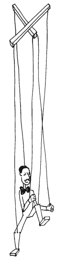
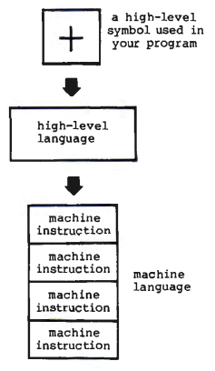
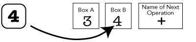
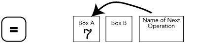
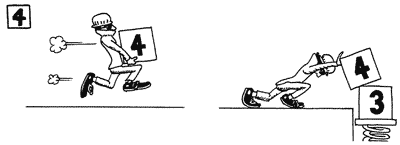
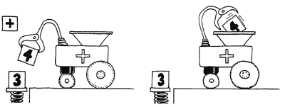
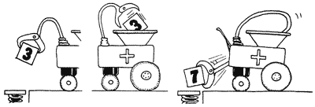
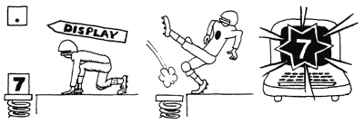
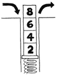
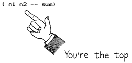

Neschopnost Lea Brodieho vyjádřit i ty nejsložitější technické koncepty bez přidání špetky humoru vychází z jeho rané lásky ke komediím. Specializoval se na psaní divadelních her na Kalifornské univerzitě v Los Angeles. Tam i v místním divadle bylo několik jeho komedií bylo uvedeno. Psal také články do časopisů na volné noze a pracoval jako copywriter v reklamní agentuře. Když společnost, pro kterou pracoval, instalovala počítač, inspirovalo ho to k tomu, aby zkusil navrhnout hračku na bázi mikroprocesoru. Přestože hračku nikdy nezprovoznil, naučil se hodně o počítačích a programování. Nyní pracuje ve společnosti FORTH, Inc. jako technický a marketingový spisovatel, kde si může hrát s počítači, jak mu určí múza, aniž by musel být fanatickým počítačovým džokejem, a může psát knihy, jako je tato.
Mezi Leovy další zájmy patří zpěv, řízení klasických Volv a tanec na hudbu 50. let.
Předmluva
Charles H. Moore
Komunita jazyka Forth může oslavit významnou událost, kterou je vydání knihy Začínáme s jazykem Forth (Starting Forth). Do této knihy bylo vloženo větší úsilí, talent a nasazení než do kterékoli předchozí úvodní příručky. Zejména mě to těší jako důkaz rostoucí popularity jazyka Forth.
Jazyk Forth jsem vyvíjel několik let jako rozhraní mezi mnou a počítači, které jsem programoval. Tradiční jazyky neposkytovaly výkon, jednoduchost ani flexibilitu, kterou jsem chtěl. Nebral jsem ohled na mnoho tradičních názorů, abych do něj zahrnul přesně ty možnosti, které produktivní programátor potřebuje. Nejdůležitější z nich je možnost přidat jakékoli schopnosti, které se později stanou nezbytnými.
Poprvé jsem myšlenky, které jsem vyvíjel, spojil do jednoho celku, když jsem pracoval na počítači IBM 1130, počítači "třetí generace". Výsledek se mi zdál tak výkonný, že jsem jej považoval za "počítačový jazyk čtvrté generace". Nazval bych ho FOURTH (čtvrtý), až na to, že 1130 umožňoval pouze pětiznakové identifikátory. Takže z FOURTH se stal FORTH, což je stejně hezčí slovní hříčka (toto slovo v angličtině znamená "vpřed").
Jednou ze zásad, která řídila vývoj jazyka Forth a nadále řídí jeho používání, je přímočaré: udržujte to jednoduché. Jednoduché řešení má eleganci. Je výsledkem náročného úsilí o pochopení skutečného problému a pozná se podle přesvědčivého pocitu správnosti. Tento bod zdůrazňuji proto, že je v rozporu s tradičním názorem, že se složitostí roste výkon. Jednoduchost poskytuje jistotu, spolehlivost, kompaktnost a rychlost.
Knihu Začínáme s jazykem Forth napsal a ilustroval Leo Brodie, pozoruhodně schopný člověk, jehož vhled a představivost se vám záhy ukáže. Tato kniha je originálním a podrobným receptem na učení. Obratně vede začátečníka přes prahy porozumění, které musí překročit všichni programátoři ve Forthu.
Ačkoli jsem jediný člověk, který se Forth nikdy nemusel učit, vím, že jeho studium může být skličující. Stejně jako u lidského jazyka je třeba si zapamatovat použití mnoha slov. Zdá se, že pro začátečníky je toto studium díky Leovým vtipným komentářům a skvěle obsazeným postavám snadné a příjemné. Těm, kteří jako já již Forth znají, poskytne rychlé čtení příjemnou exkurzi a nové pohledy na známý terén. Doufám však, že tato kniha není tak snadná a příjemná, aby se zdála triviální. Upozorňujeme, že je zde těžký obsah a že se zde můžete dozvědět mnoho nového o počítačích a překladačích i o programování.
Forth poskytuje přirozený prostředek komunikace mezi člověkem a inteligentními stroji, kterými se obklopuje. To vyžaduje, aby sdílel vlastnosti lidských jazyků včetně kompaktnosti, univerzálnosti a rozšiřitelnosti. Nedovedu si představit lepší jazyk pro psaní programů, vyjadřování algoritmů nebo porozumění počítačům. Doufám, že při čtení této knihy mi dáte za pravdu.
Charles H. Moore
vynálezce jazyka Forth
O této knize
Vítejte v knize Začínáme s jazykem Forth, která je úvodem do vzrušujícího a výkonného počítačového jazyka Forth.
Jestliže jste začátečník, který se chce dozvědět více o počítačích, Forth je skvělý způsob učení. Psaní programů ve Forthu je zábavnější než v jakémkoli jiném jazyce, který znám. (viz "Úvod pro začátečníky").
Jste-li zkušený profesionál, který se chce naučit Forth, je tato kniha přesně to, co potřebujete. Forth je velmi odlišný přístup k počítačům, natolik odlišný, že každý, od nováčků až po staré mazáky, se Forth naučí nejlépe od základů. Pokud jste zběhlí v jiných počítačových jazycích, vypusťte je prozatím z hlavy a pamatujte si jen to, co víte o počítačích. (viz "Úvod pro odborníky")
Protože se o jazyk Forth zajímá mnoho lidí s různým vzděláním, uspořádal jsem tuto knihu tak, abyste si přečetli jen to, co potřebujete vědět, s poznámkami pod čarou určenými různým typům čtenářů. První polovina kapitoly 7 poskytuje základy počítačové aritmetiky pouze pro začátečníky.
Tato kniha vysvětluje, jak psát jednoduché aplikace v jazyce Forth. Obsahuje všechna standardní slova jazyka Forth, která potřebujete k napsání jednoúlohové aplikace na vysoké úrovni. Tato sada slov je mimořádně silná a obsahuje vše od jednoduchých matematických operátorů až po slova ovládající překladač.
V této knize nejsou zahrnuty všechny příkazy, které se týkají assembleru, cílového kompilátoru a dalších specializovaných utilit. Tyto příkazy jsou k dispozici v některých verzích jazyka Forth, jako je eForth, a ve většině komerčních implementací.
Vybral jsem příklady, které budou skutečně fungovat na systému Forth s terminálem a diskem. Nevyvozujte z toho, že Forth je omezen na dávkové úlohy nebo na práci s řetězci, protože užitečnost Forthu ve skutečnosti není nijak omezena.
Tady jsou některé vlastnosti této knihy, které vám usnadní její používání:
Všechny příkazy jsou uvedeny dvakrát: poprvé v kapitole, v níž je slovo uvedeno, a podruhé ve shrnutí na konci dané kapitoly.
Každá kapitola obsahuje také přehled pojmů a soubor cvičných úloh s odpověďmi.
Je zařazeno několik "šikovných rad", které odhalují tipy nebo volitelné postupy, které jsou pro studenty užitečné, ale nezaslouží si vysvětlení, jak nebo proč fungují.
Osobní poznámka: Forth je velmi neobvyklý jazyk. Porušuje mnoho základních pravidel programování. Moje první reakce na Forth byla krajně skeptická, ale jak jsem se snažil vyvíjet složité aplikace, začal jsem vnímat jeho krásu a sílu. Sami sobě dlužíte, abyste si při čtení o některých jeho zvláštnostech zachovali otevřenou mysl. Hned vás varuji: jen málo programátorů, kteří se naučí Forth, se někdy vrátí k jiným jazykům.
Přeji vám hodně štěstí a příjemné učení!
Leo Brodie
FORTH, Inc.
Poděkování
Rád bych poděkoval následujícím lidem, kteří se podíleli na vzniku této knihy:
Za konzultace ohledně techniky a stylu jazyka Forth: Ratherové, všem ze společnosti FORTH Inc.; za poskytnutí poznatků o umění výuky jazyka Forth a za napsání několika problémů v této knize: Kim Harrisové z Forth Interest Group; za korektury, redakční návrhy a obrovské množství práce při formátování stránek: Rosenberg; za pomoc při psaní na stroji a další nezbytnosti: Carolyn A: Za pomoc s grafikou: Sue Linstrotová, Carolyn Lubisichová, Kevin Weaver, Kris Cramerová a Stephanie Brown Brodieová; za pomoc s grafikou: Mgr: Za technickou pomoc: Winnie Shows, Natasha Elbert, Barbara Roberts a John Dotson z tiskárny Sunrise Printery (Redondo Beach, Kalifornie); za technickou pomoc: Bill Patterson a Gary Friendlander; za konstruktivní kritiku, velkou trpělivost a lásku: Stephanii Brown Brodieové; a za vynález Forthu: Charesu H. Mooreovi.
Úvody
Úvod pro začátečníky: Co je to počítačový jazyk?
Když začátečníci uslyší pojem "počítačový jazyk", zpočátku se ptají: "Jakým jazykem by počítač mohl mluvit? To musí být pro lidi strašně těžké pochopit. Pravděpodobně vypadá takto:

976#!@NX714&+
pokud to vůbec nějak vypadá.
Ve skutečnosti by počítačový jazyk neměl být obtížně srozumitelný. Jeho účelem je pouze sloužit jako pohodlný kompromis pro komunikaci mezi člověkem a počítačem.
Přemýšlejte o loutce. Marionetu můžete přimět k "chůzi" jednoduše tím, že budete pracovat s dřevěným ovladačem, aniž byste se dotkli provázků. Dalo by se říci, že kývání ovladačem znamená v jazyce marionety "chůzi". Loutkář vede marionetu způsobem, kterému marioneta rozumí a který loutkář snadno zvládne.
Počítače jsou stroje stejně jako loutka. Musí jim být přesně řečeno, co mají dělat, a to konkrétním jazykem. A tak potřebujeme jazyk, který má dvě zdánlivě protichůdné vlastnosti:
Na jedné straně musí mít pro počítač přesný význam a předávat všechny informace, které počítač potřebuje znát, aby mohl provést danou operaci. Na druhé straně musí být jednoduchý a snadno použitelný pro programátora.
Od vzniku počítačů bylo vyvinuto mnoho jazyků: Jazyk Fortran je starším představitelem této oblasti; COBOL je stále standardním jazykem pro zpracování dat; BASIC byl navržen jako jazyk pro začátečníky na cestě k jazykům jako Fortran a COBOL. Tato kniha je o jazyce zcela jiného druhu jménem Forth. Obliba jazyka Forth se v posledních několika letech udržuje na konstantní úrovni a jeho obliba je společná programátorům ve všech oborech.
Všechny výše uvedené jazyky, včetně Forthu, se nazývají "vysokoúrovňové" jazyky. Pro začátečníky je důležité uvědomit si rozdíl mezi vysokoúrovňovým jazykem a počítačem, na kterém běží. Vysokoúrovňový jazyk vypadá pro programátora stejně bez ohledu na to, na jaké značce nebo modelu počítače běží. Každá značka nebo model má však svůj vlastní interní jazyk neboli "strojový jazyk". Abychom vysvětlili, co je to strojový jazyk, vraťme se k loutce.
Představte si, že neexistuje žádné dřevěné ovládání a že loutkář musí zacházet přímo s provázky. Každý provázek odpovídá přesně jedné části těla loutky. Harmonické kombinace pohybů jednotlivých strun bychom mohli nazvat "strojovým jazykem" marionety.
Nyní provázky připoutejte k ovládacímu prvku. Ovládání je jako jazyk vysoké úrovně. Jednoduchým otočením zápěstí může loutkář pohybovat mnoha strunami současně.
Stejně tak je to s vysokoúrovňovým počítačovým jazykem, kde jednoduchý a známý symbol "+" způsobí, že se při sčítání provede mnoho vnitřních funkcí.

Počítač umí jednu velmi chytrou věc: lze jej naprogramovat tak, aby překládal symboly vysoké úrovně (například "+") do vlastního strojového jazyka počítače. Pak může přistoupit k provádění strojových instrukcí. Jazyk vysoké úrovně je počítačový program, který překládá lidsky srozumitelná slova a symboly do strojového jazyka konkrétní značky a modelu počítače.
Jaký je rozdíl mezi jazykem Forth a ostatními jazyky vysoké úrovně? Velmi stručně řečeno: souvisí to s kompromisem mezi člověkem a počítačem. Jazyk by měl být navržen pro pohodlí jeho lidských uživatelů, ale zároveň pro sloučitelnost s fungováním počítače.
Jazyk Forth je mezi jazyky jedinečný, protože jeho řešení tohoto problému je jedinečné. Tato kniha vám vysvětlí jak.
Na jeden řádek můžeme umístit více než jeden příkaz. Například:
15 SPACES 42 EMIT 42 EMIT↵ **ok
Tentokrát Forth vypsal patnáct mezer a dvě hvězdičky. Poznámka k zadávání slov a/nebo čísel: můžeme je pro přehlednost oddělit od sebe libovolným počtem mezer. Musí však být odděleny alespoň jednou mezerou, aby je Forth dokázal rozpoznat jako slova a/nebo čísla.
Místo zadání výrazu
42 EMIT
pořád dokola jej definujme jako slovo "STAR". Zadejte toto:
: STAR 42 EMIT ;↵ok
Tady STAR je název; "42 EMIT" je definice. Všimněte si, že dvojtečku a středník od sousedních slov oddělujeme mezerou. Také proto, aby se definice jazyka Forth lidem dobře četly, oddělujeme konvenčně název definice od jejího obsahu třemi mezerami.
Po zadání výše uvedených definic a stisknutí klávesy RETURN odpoví jazyk Forth ok, což znamená, že vaši definici rozpoznal a zapamatuje si ji. Nyní zadejte
STAR↵*ok
Voila! Forth provede vaši definici "STAR" a vypíše hvězdičku.
Není rozdíl mezi slovem jako STAR, které si sami definujete, a slovem jako EMIT, které je již definováno. V této knize však budeme umisťovat ta slova, která jsou již definována, do rámečků, abyste je mohli snadněji rozlišovat.
Dalším systémově definovaným slovem je CR, které provádí odřádkování na terminálu. Zadejte například toto:
CR↵ ok
Jak vidíte, Forth provedl odřádkování a poté vypsal ok (na dalším řádku).
Nyní zkuste toto:
CR STAR CR STAR CR STAR↵ * * * ok
Vložíme CR do definice, například takto:
: MARGIN CR 30 SPACES ;↵ok
Nyní můžeme zadat
MARGIN STAR MARGIN STAR MARGIN STAR↵
a získáme tři hvězdy seřazené svisle, třicet mezer zleva.
Naše kombinace slov MARGIN STAR bude užitečná pro to, co hodláme dělat, takže definujme
: BLIP MARGIN STAR ;↵ok
Budeme také potřebovat vypsat vodorovnou řadu hvězdiček. Zadejme tedy následující definici (její fungování si vysvětlíme v některé z dalších kapitol):
: STARS 0 DO STAR LOOP ;↵ok
Nyní můžeme říci
5 STARS↵*****ok
nebo
35 STARS↵***********************************ok
nebo jakýkoli počet hvězdiček, který si lze představit!
Budeme potřebovat slovo, které provede proceduru MARGIN a poté vypíše pět hvězdiček. Definujme jej takto:
: BAR MARGIN 5 STARS ;↵ok
Nyní můžeme zadat
BAR BLIP BAR BLIP BLIP CR
a získáme písmeno "F" (jako Forth) složené z hvězdiček. Mělo by vypadat takto:
***** * ***** * *
Závěrečným krokem je vytvořit z tohoto nového postupu slovo. Nazvěme toto slovo "F":
: F BAR BLIP BAR BLIP BLIP CR ;↵ok
Právě jste viděli příklad toho, jak se jednoduché příkazy jazyka Forth mohou stát základem složitějších příkazů. Výpis programu ve Forthu se skládá spíše z řady stále výkonnějších definic než z posloupnosti instrukcí, které se mají postupně vykonat.
Pro ukázku toho, jak aplikace Forth skutečně vypadá, uvádíme výpis naší experimentální aplikace:
( LARGE LETTER-F ) : STAR 42 EMIT ; : STARS 0 DO STAR LOOP ; : MARGIN CR 30 SPACES ; : BLIP MARGIN STAR ; : BAR MARGIN 5 STARS ; : F BAR BLIP BAR BLIP BLIP CR ;
Slovník
Každé slovo a jeho definice jsou zapsány do "slovníku" jazyka Forth. Slovník obsahoval mnoho slov již při spuštění, ale nyní jsou ve slovníku i vaše vlastní slova.
Když definujete nové slovo, Forth vaši definici převede do slovníkové podoby a zapíše položku do slovníku. Tento proces se nazývá "kompilace."
Příklad při zadání řádku
: STAR 42 EMIT ;↵
překladač zkompiluje novou definici do slovníku. Překladač nevypíše hvězdičku.
Jakmile je slovo ve slovníku, jak je slovo provedeno? Řekněme, že zadáte následující řádek přímo v terminálu (nikoliv uvnitř definice):
STAR 30 SPACES↵
Tím se aktivuje slovo INTERPRET, známé také jako "textový interpret". Textový interpret prohledává vstupní proud a hledá řetězce znaků oddělené mezerami. Když najde řetězec, vyhledá jej ve slovníku.
Jestliže se slovo ve slovníku nachází, ukáže jej slovu EXECUTE, které provede definici (v tomto případě vypíše hvězdičku). Nakonec interpret řekne, že je vše "ok".
Pokud interpret nenajde řetězec ve slovníku, zavolá běžce s čísly (nazvaný NUMBER, postava odkazuje na formu ilegálního hazardu v USA). NUMBER pozná číslo, když ho vidí. Pokud NUMBER nějaké číslo najde, odešle ho do dočasného úložiště čísel.
Co se stane, když se pokusíte vykonat slovo, které není ve slovníku? Zadejte toto a podívejte se, co se stane:
XLERB↵XLERB ?
Když interpret textu nenajde XLERB ve slovníku, pokusí se ho předat slovu NUMBER. Slovo NUMBER si na něj posvítí. Pak vám interpret vrátí řetězec s otazníkem (Některé Forthy spolu s tím vypisují různá chybová hlášení).
V některých verzích jazyka FORTH, včetně polyFORTHu, překladač
nezkopíruje celý název definice do souboru slovníku, ale pouze první tři znaky a počet znaků slova. Například v polyFORTHu textový překladač nedokáže rozlišit mezi slovy STAR a STAG, protože obě slova jsou
čtyři znaky a obě začínají S-T-A.
ANS Forth umožňuje uložit do slovníku slova o délce až jednatřicet znaků. Jméno by mělo obsahovat pouze tisknutelné znaky.
Shrňme si to: když na terminálu napíšete předem definované slovo, bude interpretováno a poté provedeno.
Nyní si vzpomínáte, že jsme si řekli, že : (dvojtečka) je slovo? Když zadáte slovo : jako ve slově
: STAR 42 EMIT ;↵
dojde k následujícímu:
Interpret textu najde ve vstupním proudu dvojtečku a odkáže na ni EXECUTE. EXECUTE řekne překladači: "Prosím, začni kompilovat". Překladač přeloží definici do slovníkové podoby a zapíše ji do slovníku. Když překladač dojde ke středníku, zastaví se a pověří zpět textový interpret, který vypíše zprávu ok.
Řekni co?
V jazyce Forth je slovo znak nebo skupina znaků, které mají definici. Při pojmenování slova lze použít téměř jakýkoli znak. Jediné znaky, které nelze použít, jsou:
return - protože počítač si myslí, že jste zadávání ukončili.
backspace - protože si počítač myslí, že se snažíte opravit chybu při psaní.
mezerník - protože si počítač myslí, že jde o konec slova.
stříška (^) - protože editor (pokud jej používáte) si myslí, že máte na mysli něco jiného.
Tady je slovo jazyka Forth, jehož název se skládá ze dvou interpunkčních znamének. Slovo se jmenuje ." a vyslovuje se "dot-quote". Pomocí ." uvnitř definice můžete na terminálu napsat textový řetězec. Zde je příklad:
: GREET ." HELLO, I SPEAK FORTH " ;↵ok
Právě jsme definovali slovo s názvem GREET (pozdrav). Jeho definice se skládá pouze z jednoho slova Forthu, .", za kterým následuje text, který chceme napsat. Uvozovky na konci textu nebudou vypsány; označují konec textu. Říká se mu "oddělovač" (delimiter).
Při zadávání definice GREET nezapomeňte na uzavírací středník, kterým definici ukončíte.
Provedeme příkaz GREET:
GREET↵Hello, I speak Forth ok
Zásobník: Pracovní prostor jazyka Forth pro aritmetiku
Počítač by nebyl moc užitečný, kdyby neuměl aritmetiku. Pokud jste nikdy předtím nestudovali počítače, může vám připadat docela úžasné, že počítač (nebo dokonce kapesní kalkulačka) vůbec umí aritmetiku. V této knize nemůžeme citovat všechny mechanismy, ale věřte, že to není žádný zázrak.
Obecně počítače provádějí své operace tak, že vše, co dělají, rozdělují na směšně malé kousky informací a směšně jednoduché věci. Pro nás dva je "3 + 4" prostě "7", aniž bychom se nad tím zamysleli. Pro počítač je "3 + 4" ve skutečnosti velmi dlouhý seznam věcí, které je třeba udělat a zapamatovat.
Aniž bychom byli příliš konkrétní, řekněme, že máte kapesní kalkulačku, která očekává, že její tlačítka budou stisknuta v tomto pořadí:
aby bylo možné provést sčítání a zobrazit výsledek. Zde je zobecněný obrázek toho, co může nastat:
Když stisknete...
- číslo 3 půjde na jedno políčko (nazvané políčko A).
- zamýšlená operace (sčítání) je nějak zapamatována.

- číslo 4 je uloženo na druhé políčko (nazvané políčko B).

- kalkulačka provede operaci, která je uložena v poli "následující operace", nad obsahem políček s čísly a výsledek ponechá v poli A.
Mnoho kalkulaček a počítačů přistupuje k aritmetickým úlohám podobným způsobem, jaký jsme právě popsali. Možná si to neuvědomujete, ale tyto stroje ve skutečnosti ukládají čísla na různá místa a pak s nimi provádějí operace.
V jazyce Forth existuje jedno centrální místo, kde jsou čísla dočasně uložena, než se s nimi začne pracovat. Toto umístění se nazývá "zásobník". Čísla se "strkají na zásobník" a poté se s čísly na zásobníku provádějí operace.
Nejlépe se zásobník vysvětlí, když se znázorní. Pokud do terminálu zadáte následující řádek:
3 4 + .↵7 ok
Tady je popis toho, co se stane, klávesa po klávese.
Připomeňme si, že když na terminálu zadáte číslo, textový interpreter ho předá číslu NUMBER, které se spustí na nějaké místo. Tímto místem, jak lze nyní říci, je zásobník. Stručně řečeno, když z terminálu zadáte číslo tři, vložíte ho na zásobník.

Nyní čtyřka půjde na "vrchol" zásobníku a zatlačí trojku směrem dolů.

Další slovo ve vstupním proudu může být nalezeno ve slovníku. + bylo dříve definováno jako "vezmi dvě horní čísla ze zásobníku, sečti je a výsledek strč zpět na zásobník".

Další slovo, ., se rovněž nachází ve slovníku. Předtím bylo definováno tak, aby se číslo odebralo ze zásobníku a vypsalo se na terminál.
Síla postfixu
Teď počkejte, řeknete si. Proč po vás Forth chce, abyste psali
3 4 +
namísto
3 + 4
co je většině lidí známější?
Forth používá "postfixový" zápis (tak se nazývá proto, že operátor je připojen za čísly), nikoli "infixový" zápis (tak se nazývá proto, že operátor je připojen mezi čísly), aby všechna slova, která "potřebují" čísla, je mohla získat ze zásobníku."
Například:
slovo + vezme dvě čísla ze zásobníku a sečte je;
slovo . vezme ze zásobníku jedno číslo a vypíše je;
slovo SPACES vezme jedno číslo ze zásobníku a vypíše tolik mezer;
slovo EMIT vezme číslo, které představuje znak, a vypíše tento znak;
dokonce slovo STARS, které jsme si sami definovali, vezme číslo ze zásobníku a vypíše tolik hvězdiček.
Když jsou všechny operátory definovány tak, aby pracovaly s hodnotami, které jsou již na zásobníku, zůstává interakce mezi mnoha operacemi jednoduchá, i když se program stane složitým.
Předtím jsme upozornili, že Forth umožňuje provést slovo jedním ze dvou způsobů: prostým pojmenováním, nebo vložením do definice jiného slova a pojmenováním tohoto slova. Postfix je součástí toho, co to umožňuje.
Předpokládejme jako příklad, že chceme slovo, které vždy přičte číslo 4 k jakémukoli číslu na zásobníku (pouze pro ilustraci naší myšlenky). Nazvěme toto slovo
FOUR-MORE
Mohli bychom ho definovat takto:
a otestovat ho takto:
: FOUR-MORE 4 + ;↵
a otestovat pomocí:
3 FOUR-MORE .↵7 ok
a ještě jednou:
-10 FOUR-MORE .↵-6 ok
Číslo "4" uvnitř definice přejde na zásobník, stejně jako kdyby byla mimo definici. Pak + sečte obě čísla na zásobníku. Protože + pracuje vždy na zásobníku, je mu jedno, že "4" pochází zevnitř definice a trojka zvenčí.
Jakmile začneme uvádět složitější příklady, bude vám hodnota zásobníku a postfixové aritmetiky stále zřejmější. Čím více operátorů je zapojeno, tím důležitější je, aby spolu všechny dokázaly "komunikovat".
Hleďte si svého zásobníku
Právě jsme začali demonstrovat filozofii zásobníku a postfixového zápisu. Než však budeme pokračovat, podívejme se blíže na zásobník v akci a zvykněme si na jeho zvláštnosti.
Forthovský zásobník je popsán jako poslední dovnitř, první ven - "last-in, first-out" (LIFO). Z předchozího obrázku je patrné, proč tomu tak je. Nejdříve byla na zásobník vložena trojka, poté na něj byla vložena čtyřka. Později sčítací stroj čtyřku nejdříve odebral, protože byla nahoře. Odtud "poslední dovnitř, první ven".
Všeobecně platí, že jedinou dostupnou hodnotou v daném okamžiku je horní hodnota. Pro další demonstraci použijme jinou operaci, a to .. Pamatujte si, že každé . odstraní ze zásobníku jedno číslo a vypíše ho. Čtyři tečky tedy odstraní čtyři čísla a vytisknou je.
2 4 6 8 . . . .↵8 6 4 2 ok

Systém čte vstup zleva doprava a postupně provádí jednotlivá slova.
Při vstupu skončí nejpravější hodnota na obrazovce na vrcholu zásobníku.
Pro výstup se nejpravější hodnota na obrazovce dostala ze spodku zásobníku.
Podívejme se, do jakých problémů se můžeme dostat. Typ:
10 20 30 . . . .
(to jsou čtyři tečky) a pak RETURN. Zobrazí se:
10 20 30 . . . .↵30 20 10 0 Stack empty
Každá tečka odstraní jednu hodnotu. Čtvrtá tečka zjistila, že na zásobníku nezbyla žádná hodnota, kterou by bylo možné poslat do terminálu, a sdělila to.
Tato chyba se nazývá "podtečení zásobníku". (Všimněte si, že podtečení zásobníku není "ok")
Opačný stav, kdy se zásobník zcela zaplní, se nazývá "přetečení zásobníku". Zásobník je však tak hluboký, že by tento stav neměl nikdy nastat, s výjimkou případů, kdy jste udělali něco strašně špatného.
Důležité je sledovat "zásobníkový efekt" nových slov, tj. druh čísel, která musí mít slovo na zásobníku, než ho provedete, a druh čísel, která po něm na zásobníku zůstanou.
Pokud si budete průběžně vést seznam nově vytvořených slov s jejich významy, můžete vy nebo kdokoli jiný snadno pochopit operace se slovy. Ve Forthu se takový seznam nazývá "glosář".
Pro vizuální sdělení zásobníkových efektů používají programátoři jazyka Forth ve svých glosářích nebo tabulkách slov tradičně speciální zápis. Zápis zásobníku vám nyní představíme, abyste jej měli zažitý, až začnete číst další kapitolu.
Tady je základní formát:
( před -- po )
Pomlčka odděluje věci, které mají být na zásobníku (před provedením slova), od věcí, které tam zůstanou po něm. Například zde je zápis zásobníku pro slovo .:
. ( n -- )
(Písmeno "n" znamená "číslo".) To ukazuje, že . očekává jedno číslo na zásobníku (před) a ponechává žádné číslo na zásobníku (po).
Tady je zápis zásobníku pro slovo +.
+ ( n1 n2 -- sum )

Pokud je n více než jedno, číslujeme je postupně n1, n2, n3 atd. Čísla 1 a 2 se nevztahují k pozici na zásobníku. Pozice na zásobníku je označena pořadím, v jakém jsou položky zapsány; nejpravější položka na obou stranách pomlček je nejvyšší položkou na zásobníku. Například v zápisu zásobníku + je n2 nahoře:
Protože už to asi máte v malíčku, můžeme někdy vynechat symbol ↵. Většinou poznáte, kde máte stisknout "return", protože odpověď počítače je vždy formátována takto.
Souhrn kapitoly
Slovy na úvod
Tady je seznam slov jazyka Forth, která jste se dosud naučili, včetně jejich zásobníkového zápisu ("n" znamená číslo; "c" znamená znak):
: xxxx yyy ;
( -- )
Vytvoří novou definici s názvem xxx a skládající se ze slova nebo slov yyy.
CR
( -- )
Provede odřádkování na terminálu.
SPACES
( n -- )
Vytiskne daný počet mezer na terminálu.
SPACE
( -- )
Vytiskne jednu mezeru na terminálu.
EMIT
( c -- )
Přenáší znak na výstupní zařízení.
." xxx"
( -- )
Vytiskne řetězec znaků xxx na terminálu. Znak " ukončuje řetězec.
+
( n1 n2 -- sum )
Sčítá.
.
( n -- )
Vytiskne číslo, za kterým následuje jedna mezera.
V příští kapitole si povíme o tom, jak přimět počítač, aby prováděl některé náročnější aritmetické operace.
Přehled pojmů
Kompilovat
vytvoření slovníkového hesla v paměti počítače ze zdrojového textu (zapsané podoby definice). Odlišuje se od "provést".
Slovník
ve Forthu seznam slov a definic zahrnující jak "systémové" definice (předdefinované), tak "uživatelské" definice (které si vymyslíte). Slovník se nachází v paměti počítače ve zkompilované podobě.
Vykonat
provádět. Konkrétně provést slovo znamená provést operace uvedené ve zkompilované definici slova.
Rozšiřitelnost
vlastnost počítačového jazyka, která umožňuje programátorovi přidávat nové funkce nebo upravovat stávající.
Glosář
seznam slov definovaných v jazyce Forth s uvedením jejich zásobníkových efektů a vysvětlením, co dělají, který slouží jako reference pro programátory.
Infixový zápis
způsob zápisu operátorů mezi operandy, které ovlivňují, jako například "2 + 5".
Vstupní proud
text, který má být přečten textovým interpretem. Může to být text, který jste právě zadali na terminálu nebo text uložený na disku.
Interpretovat
(pokud se jedná o textový interpret Forthu) přečíst vstupní proud a pak najít každé slovo ve slovníku, nebo pokud to nejde, převést ho na číslo.
LIFO
(last-in, first-out) typ zásobníku, který Forth používá. Plechovka s tenisovými míčky je struktura LIFO; poslední vhozený míček je ten, který musíte odstranit jako první.
Postfixový zápis
způsob zápisu operátorů za operandy, které ovlivňují, jako například "2 5 +" pro "2 + 5". Známý také jako obrácená polská notace.
Stack
ve Forthu oblast paměti, která je řízena tak, že data mohou být ukládána nebo odstraňována způsobem "poslední dovnitř, první ven" (LIFO).
Přetečení zásobníku
chybový stav, který nastane, když je celá oblast paměti povolená pro zásobník zcela zaplněna daty.
Podtečení zásobníku
chybový stav, který nastane, když operace očekává hodnotu na zásobníku, ale na zásobníku nejsou žádná platná data.
Slovo
ve Forthu název definice.
Problémy - kapitola 1
Poznámka: než začnete řešit tyto úlohy, zapamatujte si tato jednoduchá pravidla:
Každé : potřebuje ;
Každé ." potřebuje "
Problém 1:
Definujte slovo GIFT, které po spuštění vypíše název nějakého dárku. Můžete například zkusit:
: GIFT ." Bookends " ;
Nyní definujte slovo jménem GIVER, které vypíše křestní jméno nějaké osoby. Nakonec definujte slovo s názvem THANKS, které obsahuje nová slova Forth GIFT a GIVER a vypíše zprávu přibližně takto:
Dear Stephanie,thanks for the Bookends. ok
Problém 2:
Zdefinujte slovo s názvem TEN.LESS, které vezme číslo na zásobníku, odečte deset a vrátí odpověď na zásobník. (Nápověda: můžete použít +).
Problém 3:
Po zadání slov v Problému 1 zadejte novou definici pro GIVER, abyste vypsali jméno někoho jiného, a poté znovu spusťte příkaz THANKS. Můžete vysvětlit, proč THANKS stále vypisuje jméno prvního dárce?
Odpovědi
Odpověď na problém 1:
: GIFT ." chocolate" ;: GIVER ." Mum" ; : THANKS CR ." Dear " GIVER ." ," CR ." Thanks for the " GIFT ." . " ;
Odpověď na problém 2:
: TEN-LESS ( n -- n-10 ) -10 + ; : TEN-LESS ( n -- n-10 ) 10 - ;
Odpověď na problém 3:
Protože staré THANKS má již ve slovníku zkompilováno staré GIVER.
2. Jak získat výsledky
V této kapitole se vrhneme rovnou na některá specifika, která potřebujete znát, než budeme pokračovat. Konkrétně si představíme některé aritmetické instrukce, abyste byli schopni psát matematické rovnice v jazyce Forth.
Aritmetika Forth - styl kalkulačky
Na rozdíl od kalkulaček nemají počítačové terminály speciální klávesy pro násobení nebo dělení. Místo toho používáme * a /.
Tady jsou čtyři nejjednodušší operátory celočíselné aritmetiky v jazyce Forth:
+
( n1 n2 - sum )
Sčítá
-
( n1 n2 - diff )
Odčítá (n1-n2)
*
( n1 n2 - prod )
Násobí
/
( n1 n2 - quot )
Dělí (n1/n2)
V první kapitole jsme se dozvěděli, že můžeme sečíst dvě čísla tak, že je obě vložíme na zásobník, pak provedeme slovo + a nakonec provedeme slovo . (tečka), aby se nám výsledek vypsal na terminál.
17 5 + .↵22 ok
Tuto metodu můžeme použít se všemi aritmetickými operátory jazyka Forth. Jinými slovy, jazyk Forth můžeme používat jako kalkulačku k získání odpovědí, a to i bez psaní "programu". Vyzkoušejte si úlohu na násobení:
7 8 * .↵56 ok
Již jsme viděli, že operátor se nachází za čísly. V případě odčítání a dělení však musíme brát v úvahu také pořadí čísel ("7 - 4" není totéž jako "4 - 7").
Zapamatujte si toto pravidlo: Chcete-li převést na postfix, jednoduše přesuňte operátor na konec výrazu.
Infix
Postfix
3 + 4
3 4 +
500 - 300
500 300 -
6 x 5
6 5 *
20 / 4
20 4 /
Takže k řešení úlohy na odčítání:
7 - 4 =
jednoduše zadejte
7 4 - .↵3 ok
Pro dobrodružné nováčky sedící u terminálu
Pokud patříte k lidem, kteří rádi blbnou a přicházejí na věci sami, aniž by si přečetli tuto knihu, pak určitě objevíte pár podivností. Zaprvé, jak jsme si řekli, tyto operátory jsou celočíselné operátory. To znamená nejen to, že nemůžete provádět výpočty s desetinnými hodnotami, jako např.
10.00 2.25 +
znamená to také, že můžete získat pouze celočíselné výsledky, jako v
21 4 / .↵5 ok místo 5.25 ok
Další věcí je, že pokud se pokusíte násobit:
10000 10 *
nebo nějaká podobně velká čísla, dostanete šílenou odpověď. Předem vám tedy říkáme, že s dosud představenými operátory a s . pro vypisování výsledků nemůžete mít žádná čísla větší než +32767 nebo menší než -32768 (tyto rozsahy se mohou lišit podle implementace). Čísla v tomto rozsahu se nazývají "single-length zaménková čísla".
Všimněte si, že v seznamu slov jazyka Forth o několik stránek zpět je písmeno "n", které znamená "číslo". Protože jazyk Forth používá čísla o jedné délce častěji než jiné typy čísel, znamená písmeno "n", že číslo musí být jednočíselné. A ano, existují i další operátory, které tento rozsah rozšiřují ("double-length" operátory, které jsou označeny písmenem "d").
Všechny tyto záhady budou časem vysvětleny, takže zůstaňte naladěni.
Pořadí čísel zůstává stejné. Zkusíme si úlohu s dělením:
20 4 / .↵5 ok
Slovo / je definováno tak, že dělí druhé číslo na zásobníku číslem horním.
Co uděláte, když máte ve výrazu více než jeden operátor, například:
4 + (17 * 12)
Vezměme to krok za krokem: závorky vám říkají, že máte nejprve vynásobit sedmnáct dvanácti, poté přičíst čtyři. Ve Forthu byste tedy napsali:
17 12 * 4 + .↵208 ok
a tady je důvod:
17 a 12 přejdou na zásobník. * je vynásobí a vrátí výsledek.
Poté se čtyřka dostane na zásobník nad číslo 204. + vytlačí z garáže sčítací stroj, který je sečte dohromady, přičemž vrátí pouze výsledek.
Nebo předpokládejme, že chcete sečíst pět čísel. Ve Forthu to můžete udělat takto:
17 20 + 132 + 3 + 9 + .↵181 ok
Tady je zajímavý problém:
(3 + 9) * (4 + 6)
Pro její vyřešení musíme nejprve přičíst tři k devíti, pak přičíst čtyři k šesti a nakonec oba součty vynásobit. Ve Forthu můžeme napsat
3 9 + 4 6 + * .↵120 ok
Všimněte si, že jsme velmi vhodně uložili součet dvanáct na zásobník, zatímco jsme se věnovali činnosti přičítání čtyř k šesti.
Pamatujte, že se zatím nezabýváme zápisem definic. Prostě používáme jazyk Forth jako kalkulačku.
Jestliže jste jako většina začátečníků, pravděpodobně byste si rádi vyzkoušeli několik cvičných úloh, dokud se s postfixovým zápisem nebudete cítit lépe.
Postfixové cvičné úlohy (kvíz 2-a)
Převeďte následující infixové rovnice na postfix "ve stylu kalkulačky". Například,
ab + c
by se stalo
a b * c +
c(a+b)
(3a - b) / 4 + c
(0,5 ab) / 100
(n + 1) / n
x(7x + 5)
Převeďte následující postfixové výrazy na infixové:
a b - b a + /
a b 10 * /
Odpovědi ke kvízu 2-a
Infix k postfixu:
1. a b + c * nebo c a b + *
2. 3 a * b - 4 / c +
3. a b * 100 / 2/ nebo a b * 200 /
4. n 1 + n /
5. 7 x * 5 + x *
Postfix na infix:
1. a - b ----- b + a
2. a --- 10b
Forthovská aritmetika - vytváření definic
V kapitole 1 jsme viděli, že můžeme definovat nová slova pomocí čísel a jiných předem definovaných slov. Prozkoumejme další možnosti s využitím některých nově naučených matematických operátorů.
Řekněme, že chceme převádět různé míry na palce. Víme, že
1 yard = 36 palců
a
1 stopa = 12 palců
takže můžeme definovat tato dvě slova:
: YARDS>IN 36 * ;↵ok : FT>IN 12 * ;↵ok
kde názvy symbolizují "yardy na palce" a "stopy na palce". Zde je jejich funkce:
10 YARDS>IN .↵360 ok 2 FT>IN .↵24 ok
Pokud vždy chceme, aby náš výsledek byl v palcích, můžeme definovat:
: YARDS 36 * ;↵ok : FEET 12 * ;↵ok : INCHES ;↵ok
Tak, abychom mohli použít větu
10 YARDS 2 FEET + 9 INCHES + .↵393 ok
Všimněte si, že slovo INCHES nedělá nic jiného, než že připomíná lidskému uživateli, k čemu je devět. Pokud si chceme opravdu vymýšlet, můžeme přidat tyto tři definice:
: YARD YARDS ;↵ok : FOOT FEET ;↵ok : INCH ;↵ok
takže uživatel může zadat jednotný tvar libovolného podstatného jména a stále dostane stejný výsledek:
1 YARD 2 FEET + 1 INCH + .↵61 ok 2 YARDS 1 FOOT + .↵84 ok
Dosud jsme definovali pouze slova, jejichž definice obsahují jeden matematický operátor. Je však naprosto možné vložit do definice mnoho operátorů, pokud to potřebujete.
Řekněme, že chceme slovo, které vypočítá součet pěti čísel na zásobníku. O několik stránek zpět jsme pět čísel sečetli takto:
17 20 + 132 + 3 + 9 + .↵181 ok
Můžeme také zadat
17 20 132 3 9 + + + + .↵181 ok
Pro sémantické fajnšmekry
V matematice se slovem "argument" označuje nezávislá proměnná funkce. Počítačoví lingvisté si tento termín vypůjčili pro označení čísel, s nimiž operují operátory. Vypůjčili si také slovo "parametry", aby popsali v podstatě totéž.
Dostaneme stejnou odpověď, přestože jsme všechna čísla shlukli do jedné skupiny a všechny operátory do jiné skupiny. Naši definici můžeme zapsat takto:
: 5#SUM + + + + ;↵ ok
a provést ji takto:
17 20 132 3 9 5#SUM .↵181 ok
Pokud bychom si 5#SUM ponechali pro budoucí použití, mohli bychom jej zapsat do našeho stále se rozrůstajícího slovníku spolu s poznámkou, že "očekává pět argumentů" na zásobníku, které sečte.
Pro začátečníky, kteří mají rádi slovní úlohy
Pokud tryskové letadlo letí průměrnou rychlostí 600 km/h a pokud letí s větrem v zádech o rychlosti 25 km/h, jakou vzdálenost urazí za pět hodin?
Pokud definujeme
: FLIGHT-DISTANCE + * ;
můžeme zadat
5 600 25 FLIGHT-DISTANCE .↵3125 ok
Zkuste to s různými hodnotami, včetně protivětru (záporné hodnoty).
Tady je další rovnice, pro kterou můžete napsat definici:
(a + b) * c
Jak jsme viděli v kvízu 2-a, tento výraz lze zapsat postfixem jako
c a b + *
Takto bychom mohli zapsat naši definici
: SOLUTION + * ;↵ok
pokud se ujistíme, že argumenty zadáváme ve správném pořadí:
c a b SOLUTION
Praktické úlohy vytváření definic (kvíz 2-b)
Převeďte následující infixové výrazy na definice jazyka Forth a ukažte pořadí zásobníku požadované vašimi definicemi. Protože se jedná o kvíz 2-b, můžete své definice pojmenovat 2B1, 2B2 atd.
ab + c by se stane : 2B1 * + ;
který očekává toto pořadí zásobníku: ( c b a -- result)
(a - 4b) / 6 + c
a / (8b)
0.5 ab / 100
a(2a + 3)
(a - b) / c
Odpovědi ke kvízu 2-b
1. : 2B2 ( c a b -- result ) 4 * - 6 / + ;
2. : 2B3 ( a b -- result ) 8 * / ;
3. : 2B4 ( a b -- result ) * 200 / ;
4. : 2B5 ( a a -- result ) 2* 3 + * ;
5. Pokud jste si řekli, že tohle je nemožné, máte pravdu!
Alespoň bez operátorů pro manipulaci se zásobníkem,
které si představíme velmi brzy.
Operátory dělení
Slovo / je nejjednodušší operátor dělení jazyka Forth. Lomítko dodává pouze kvocient; jakýkoli zbytek se ztrácí. Pokud zadáte:
22 4 / .↵5 ok
získáte pouze kvocient pět, nikoliv zbytek dva.
Pokud máte na mysli operátor procenta kapesní kalkulačky, pak pět není úplná odpověď.
Ale / je pouze jedním z několika operátorů dělení, které poskytuje jazyk Forth, aby vám umožnil flexibilně říci počítači, co přesně chcete, aby udělal.
Řekněme například, že chcete vyřešit tento problém: "Kolik dolarových bankovek mohu dostat výměnou za 22 čtvrťáků?". Skutečná odpověď je samozřejmě přesně 5, nikoliv 5,5 mince. Počítačová směnárna by například nevěděla, jak vám dát 5,5 dolarové bankovky.
Tady jsou další dva operátory dělení ve Forthu:
/MOD
( n1 n2 - rem quot )
Dělí; vrací zbytek a kvocient
MOD
( n1 n2 - rem )
Dělí; vrací pouze zbytek
Tyto operátory jsou jednak znaménkové, jednak "zkracovací". Co to znamená, si ukážeme v kapitole o počítačových číslech.
/MOD udává zbytek i kvocient; MOD (od "modulo") udává pouze zbytek. (V případě /MOD znamená zápis zásobníku v tabulce, že kvocient bude nahoře na zásobníku a zbytek dole. Nezapomeňte, že nejpravější představuje nejvyšší.)
Zkusíme první z nich:
22 4 /MOD . .↵5 2 ok
Tady /MOD provede dělení a na zásobník umístí jak kvocient, tak zbytek. První tečka vypíše kvocient, protože kvocient byl nahoře.
S tím, co jsme se dosud naučili, můžeme snadno definovat toto slovo:
: Čtvrtiny 4 /MOD . ." a "
. ." čtvrtletí " ;
Takže můžete zadat:
22 QUARTERS
s tímto výsledkem:
22 QUARTERS↵5 jedniček a 2 čtvrtky ok
Druhé slovo v tabulce, MOD, ponechává pouze zbytek. Například v:
22 4 MOD .↵2 ok
dvojka je zbytek.
Manévry se zásobníkem
Pokud jste v minulé sadě řešili úlohu 6, zjistili jste, že infixová rovnice
(a - b) / c
nelze vyřešit pomocí definice, pokud neexistuje nějaký způsob, jak přeskládat hodnoty na zásobníku.
No, jeden způsob existuje: pomocí "operátoru manipulace se zásobníkem" zvaného SWAP.
SWAP
Slovo SWAP je definováno tak, že přepíná pořadí dvou horních položek zásobníku.
Stejně jako u ostatních operátorů manipulace se zásobníkem můžete SWAP otestovat v terminálu "stylem kalkulačky"; to znamená, že nemusí být obsažen v definici.
Nejprve zadejte
1 2 . .↵2 1 ok
poté znovu, tentokrát pomocí SWAP:
1 2 SWAP . .↵1 2 ok
Takto lze vyřešit úlohu 6 pomocí této věty:
- SWAP /
s ( c a b -- ) na zásobníku.
Dáme a, b a c tyto testovací hodnoty:
a = 10
b = 4
c = 2
poté je vložíme na zásobník a provedeme větu takto:
2 10 4 - SWAP / .↵3 ok
Zde je uveden seznam několika operátorů pro manipulaci se zásobníkem:
SWAP
( n1 n2 - n2 n1 )
Převrátí dvě horní položky zásobníku
DUP
( n - n n )
Duplikuje horní položku zásobníku
OVER
( n1 n2 - n1 n2 n1 )
Kopíruje druhou položku na vrchol
ROT
( n1 n2 n3 - n2 n3 n1 )
Otáčí třetí položku nahoru
DROP
( n - )
Zruší horní položku zásobníku
.
DUP
Další operátor manipulace se zásobníkem na seznamu, DUP, jednoduše vytvoří druhou kopii (duplikát) horní položky zásobníku.
Příklad pokud máme na zásobníku položku "a", můžeme vypočítat: a2
takto:
DUP *
při kterém dojde k následujícím krokům:
Operace
Obsah zásobníku
a
DUP
a a
*
a2
OVER
Nyní vám někdo řekne, abyste vyhodnotili výraz:
a * (a + b)
při následujícím pořadí zásobníku:
( a b -- )
Ale, říkáte, budu potřebovat nový manipulační operátor: Chci dvě kopie "a" a "a" je pod "b". Tady je to slovo, které potřebujete: OVER. OVER jednoduše vytvoří kopii "a" a přeskočí ji nad "b":
( a b -- a b a )
Nyní výraz
a * (a + b)
můžeme snadno zapsat
OVER + *
Takto se stane:
Operace
Obsah zásobníku
a b
OVER
a b a
+
a (b+a)
*
a*(b+a)
Při psaní rovnic ve Forthu je nejlepší je nejprve "vyfakturovat". Pokud vás například někdo požádá, abyste vyhodnotili:
a2 + ab
ve Forthu, zjistíte, že je to poměrně komplikované (a možná i nemožné) pomocí slov, která jsme si dosud představili ... ledaže byste výraz vynásobili tak, že by zněl:
a * (a + b)
což je výraz, který jsme právě tak snadno vyhodnotili.
ROT
Čtvrtým manipulátorem zásobníku na seznamu je ROT (vyslovuje se rote), což je zkratka pro "rotovat". ROT transformuje tři horní hodnoty zásobníku z ( a b c ) na ( b c a ).
Pokud například potřebujeme vyhodnotit výraz:
ab - bc
měli bychom nejprve vynásobit čísla b:
b * (a - c)
Nyní, pokud je naše pořadí počátečního zásobníku následující:
( c b a -- )
můžeme použít:
ROT - *
při kterém dojde k následujícím krokům:
Operace
Obsah zásobníku
c b a
ROT
b a c
-
b (a-c)
*
b*(a-c)
DROP
Závěrečným operátorem pro manipulaci se zásobníkem na seznamu je DROP. Jediné, co udělá, je, že zahodí horní hodnotu zásobníku.
Pěkně jednoduché, co? Později si ukážeme několik dobrých způsobů použití DROP.
Šikovná nápověda:
Nedestruktivní tisk zásobníku
Začátečníci, kteří se teprve učí manipulovat s čísly na zásobníku užitečnými způsoby, se velmi často setkávají s tím, že zadávají řadu teček, aby viděli, co je na zásobníku po jejich manipulaci. Problém s tečkami však spočívá v tom, že neponechávají čísla na zásobníku pro budoucí manipulaci.
Forthovské slovo .S vypíše všechny hodnoty, které se náhodou na zásobníku nacházejí, "nedestruktivně"; to znamená bez jejich odstranění. Vyzkoušejme to, nejprve bez ničeho na zásobníku:
.S↵<0> ok
Jak vidíte, v této verzi .S vidíme alespoň jedno číslo. Jedná se o počet položek, které jsou skutečně na zásobníku.
Nyní to zkusíme s čísly na zásobníku:
1 2 3 .S↵<3> 1 2 3 ok ROT .S <3>↵2 3 1 ok
Manipulace se zásobníkem a matematické definice (Quizzie 2-c)
Napište větu, která přehodí tři položky na zásobníku a ponechá uprostřed prostřední číslo; tj,
a b c
stane se
c b a
Napište větu, která dělá to, co dělá OVER, aniž byste použili OVER.
Napište definici s názvem -ROT, která otočí tři horní položky zásobníku opačným směrem než ROT; tj,
a b c
stane se
c a b
Napište definice následujících rovnic, vzhledem k zobrazeným stohovým efektům:
(n+1) / n ( n -- výsledek )
x(7x + 5) ( x -- výsledek )
9a2 - ba ( a b -- výsledek )
Odpovědi Quizzie 2-c
1. SWAP ROT
2. SWAP DUP ROT SWAP
3. : -ROT ROT ROT ; ( Váš Forth to už pravděpodobně má. )
Další čtyři operátory manipulace se zásobníkem by vám měly být povědomé:
2SWAP
( d1 d2 - d2 d1 )
Převrátí dvě horní dvojice čísel
.
2DUP
( d - d d )
Duplikuje horní dvojici čísel
2OVER
( d1 d2 - d1 d2 d1 )
Duplikuje druhou dvojici čísel
2DROP
( d1 d2 - d1 )
Zruší horní dvojici čísel
Předpona "2" označuje, že tyto operátory manipulace se zásobníkem obsluhují čísla ve dvojicích." "Lze je použít i pro manipulaci s čísly dvojnásobné délky (64 bitů). Písmeno "d" ve sloupci zásobníkových efektů znamená "double". "Double" má zvláštní význam, který probereme, až budeme mluvit o "n" a "u"
.
Výše uvedené manipulátory "2" jsou tak jednoduché, že vás ani nebudeme nudit příklady.
Ještě jedna věc: stále ještě existují manipulátory zásobníku, o kterých jsme ještě nemluvili, takže se nezblázněte a nezkoušejte na zásobníku příliš mnoho fantazie.
Shrnutí kapitoly
Předchozí slova
+
( n1 n2 - sum )
Přidá
-
( n1 n2 - diff )
Odčítá (n1-n2)
*
( n1 n2 - prod )
Násobí
/
( n1 n2 - quot )
Dělí (n1/n2)
/MOD
( n1 n2 - rem quot )
Dělí; vrací zbytek a kvocient
MOD
( n1 n2 - rem )
Dělí; vrací pouze zbytek
SWAP
( n1 n2 - n2 n1 )
Převrátí dvě horní položky zásobníku
DUP
( n - n n )
Duplikuje horní položku zásobníku
OVER
( n1 n2 - n1 n2 n1 )
Kopíruje druhou položku na vrchol
ROT
( n1 n2 n3 - n2 n3 n1 )
Otáčí třetí položku nahoru
DROP
( n - )
Zruší horní položku zásobníku
.
2SWAP
( d1 d2 - d2 d1 )
Přehodí dvě horní dvojice čísel
2DUP
( d - d d )
Duplikuje horní dvojici čísel
2OVER
( d1 d2 - d1 d2 d1 )
Duplikuje druhou dvojici čísel
2DROP
( d1 d2 - d1 )
Zruší horní dvojici čísel
Přehled pojmů
Čísla dvojí délky
celá čísla, která zahrnují rozsah přes -18,446,744,073,709,551,615 do +18,446,744,073,709,551,615 (a která oficiálně představíme v Kap. 7).
.
Čísla o jedné délce
celá čísla, která spadají do intervalu -2 miliardy až +2 miliardy: jediná čísla, která jsou platná jako argumenty nebo výsledky některého z operátorů, které jsme dosud probrali.
Problémy - kapitola 2
Jaký je rozdíl mezi DUP DUP a 2DUP?
Napište větu, která obrátí pořadí čtyř horních položek na zásobníku; to znamená, ( 1 2 3 4 -- 4 3 2 1 )
Napište definici 3DUP, která zdvojí pořadí tří horních čísel na zásobníku; například, ( 1 2 3 -- 1 2 3 1 2 3 ).
Napište definice následujících infixových rovnic, vzhledem k zobrazeným efektům zásobníku:
a2 + ab + c ( c a b -- výsledek ) (a-b)/(a+b) ( a b -- výsledek)
Napište soubor slov pro výpočet trestu odnětí svobody pro těžké zločince tak, aby jej mohl zadat soudce:
ODSOUZENÝ-ZA ZLOČIN DOMÁCÍHO VRAŽDENÍ↵ok VYŠETŘOVAT↵35 let ok
nebo jakákoli řada trestných činů začínající slovem ZLOČIN-OF a končící slovem WILL-SERVE. Použijte tyto věty:
VRAŽDA 20 let ZLOČIN 10 letZLODĚJSTVÍ 2 rokyTAXOVÁ VRAŽDA 5 let
Jste programátorem inventury na Mariině vaječném ranči. Definujte slovo tzv.
EGG.KARTONY
které na zásobníku očekává celkový počet vajec, která dnes slepice snesly, a vypíše počet kartonů, které lze naplnit po tuctu vajec, a také počet zbylých vajec.
Odpovědi
DUP DUP duplikuje horní položku zásobníku dvakrát, zatímco 2DUP duplikuje dvě horní položky zásobníku jednou.
( a b c d -- d c b a ) 1 2 3 4 SWAP 2SWAP SWAP . . . .
: 3DUP ( a b c -- a b c a b c ) DUP 2OVER ROT ;
: 2-4A ( c a b -- a**2+ab+c ) OVER + * + ;
: -ROT ( a b c -- c a b ) ROT ROT ;
: 2-4B ( a b -- [a-b]/[a+b] ) 2DUP - -ROT + / ;
Dosud jste do slovníku zakládali nové definice tak, že jste je zadávali na terminálu. V této kapitole se seznámíte s alternativní metodou, která využívá diskové úložiště.
Začněme několika postřehy, které se týkají konkrétně slovníku.
Jiný pohled na slovník
Pokud jste experimentovali se skutečným počítačem, možná jste objevili některé věci, o kterých jsme se ještě nezmínili. V každém případě je na čase se o nich zmínit.
Objev první:
Stejné slovo můžete definovat vícekrát různými způsoby - provede se pouze poslední definice.
Příklad pokud jste zadali:
: GREET ." Dobrý den, mluvím forthsky. " ;↵ok
poté byste měli dostat tento výsledek:
GREET↵Dobrý den, mluvím forthsky. ok
A když předefinujete:
: GREET ." Ahoj! " ;↵ok
získáte nejnovější definici:
GREET↵Ahoj! ok
Je první GREET vymazán? Ne, stále tam je, ale kvůli pořadí vyhledávání se provede nejnovější GREET. Textový interpret začíná vždy "vzadu ve slovníku", kde je nejnovější záznam. Definice, kterou najde jako první, je ta, kterou jste definovali jako poslední. Tuto zobrazí při EXECUTE.
Můžeme dokázat, že starý GREET je stále na místě. Zkuste to takto:
FORGET GREET↵ok
a
GREET↵Dobrý den, mluvím Forth. ok
(opět starý známý GREET!). [?]
Slovo FORGET vyhledá dané slovo ve slovníku a v podstatě ho odstraní ze slovníku spolu se vším, co jste od tohoto slova definovali. FORGET, stejně jako tlumočník, prohledává slovo počínaje odzadu; odstraňuje pouze naposledy definované verze slova (spolu se všemi následujícími slovy). Když tedy nyní na terminálu zadáte GREET, interpret najde původní GREET.
PŘEDEM je dobré znát slovo; pomůže vám vyčistit slovník, abyste ho nepřeplnili. (Slovník zabírá místo v paměti, takže stejně jako při jakémkoli jiném využití paměti s ním chcete šetřit)
.
Některé Forthy nemají funkci FORGET. V takovém případě musíte zapomínání předem naplánovat, například:
ZNAČKA -práce
definuje nulovou definici -work, která za vás označí aktuální stav systému. Při pozdějším spuštění -work se obnoví stav systému platný v okamžiku definování -work. Zejména všechna slova definovaná po značkovacím slově -work jsou ze slovníku zcela odstraněna.
Zjištění druhé:
Když zadáváte definice z terminálu (jak jste to dělali doposud), vaše zdrojový text se neukládá.
Ve slovníku je uložena pouze zkompilovaná podoba definice. Co když tedy chcete provést drobnou změnu v již definovaném slově? V tomto případě přichází na řadu "textový editor". Pomocí tohoto editoru můžete uložit svůj zdrojový text a v případě potřeby jej upravit. V dnešní době můžeme předpokládat, že každý má přístup k textovému editoru. V dokumentaci k systému Forth by měly být popsány postupy, jak snadno používat váš oblíbený textový editor z prostředí Forth. (V moderním operačním systému poklepejte na soubor, který chcete upravit. Po dokončení své editační činnosti zadejte na příkazovém řádku jazyka Forth příkaz INCLUDE. Přidejte alespoň jednu koncovou mezeru, pak přetáhněte soubor v okně Forth a pusťte jej na příkazový řádek. Napište ↵.)
Textový editor ukládá váš zdrojový text na disk. Proto si raději představíme disk a způsob, jakým jej systém Forth používá.
Jak Forth využívá disk
Všechny systémy Forth používají diskovou paměť. I když disková paměť není pro systém Forth nezbytně nutná, je těžké si Forth bez ní představit.
Chcete-li pochopit, k čemu slouží disková paměť, porovnejte ji s pamětí počítače (RAM). Rozdíl je analogický rozdílu mezi kartotékou a pojízdnou kartotékou.
Dosud jste používali počítačovou paměť, která je jako kartotéka. Počítač má k této paměti přístup téměř okamžitě, takže programy uložené v paměti RAM mohou běžet velmi rychle. Bohužel tento druh paměti je někdy velmi omezený (např. ve vestavných řadičích) a poměrně drahý.
Na druhou stranu se disk nazývá "velkoobjemové paměťové zařízení", protože podobně jako kartotéka může uchovávat velké množství informací při mnohem nižší ceně za jednotku informace než paměť uvnitř počítače.
Do obou druhů paměti lze zapisovat a číst z ní.
Překladač zkompiluje všechna slovníková hesla do paměti počítače, aby byly definice rychle dostupné. Ideálním místem pro uložení zdrojového textu je však disk, což Forth dělá. Zdrojový text můžete buď posílat přímo z klávesnice do interpretu (jak jste to dělali dosud), nebo můžete zdrojový text uložit na disk a později jej z disku přečíst a poslat do textového interpretu.
Disková paměť je rozdělena na jednotky zvané "bloky". Každý blok obsahuje 1 024 znaků zdrojového textu nebo binárních dat, tradičně uspořádaných do 16 řádků po 64 znacích. Standard ANS Forth nespecifikuje, kolik bloků je. To by vám měla říct dokumentace vašeho systému Forth.
U současných systémů Forth se disková paměť nachází v souborech operačního systému. Existují způsoby, jak k "disku Forth" připojit konkrétní soubory OS. Vzhledem ke speciálnímu formátu bloků Forthu 16 x 64 je nástroje OS považují za binární data a nemohou je obecně tisknout, vypisovat, filtrovat nebo upravovat. Systémy Forth mají standardizované prostředky, které některé z těchto úloh zvládnou samy.
Používáte-li SwiftForth, pak by následující příkaz měl dávat pokyn, aby paměť disku pocházela z nějakého souboru:
USING blocks.forth↵ok
Toto je verze iForth:
POUŽITÍ blocks.forth↵ok
Chcete-li vypsat blok, jednoduše zadejte číslo bloku a slovo LIST, jako například:
1 LIST 0 ( velké písmeno F) 1 2 : STAR [CHAR] * EMIT ; 3 : STARS 0 DO STAR LOOP ; 4 : MARGIN CR 30 MEZER ; 5 : BLIP MARGIN STAR ; 6 : BAR MARGIN 5 STARS ; 7 : F BAR BLIP BAR BLIP BLIP CR ; 8 9 10 11 12 13 14 15 ok
Výše uvedené vypadá tak, jak je blok vypsán na terminálu.
Pro lepší představu, jak by se to všechno dalo použít, budeme předpokládat, že blok 1 obsahuje výše uvedené definice. Kromě řádku 0 vypadá vše povědomě; jsou to definice, které jste použili k vypsání velkého písmene "F" na terminálu.
Nyní kdybyste napsali:
1 LOAD F
poslali byste blok 1 do vstupního proudu a pak dále do textového interpretu. Textovému interpretu je jedno, odkud jeho text pochází. Rozpozná dvojtečky, nechá zkompilovat všechny definice a pak provede nové slovo F.
Nyní k nedokončené práci: řádek 0. Slova uvnitř závorek jsou komentářem pouze pro člověka; nejsou ani zkompilována, ani provedena. Slovo ( ("levá závorka") říká interpretu textu, aby přeskočil celý následující text až po ukončující pravou závorku. Protože ( je slovo, musí být odděleno mezerou. Uzavírací závorka není slovo, je to prostě znak, který se hledá pomocí (, tzv. oddělovač. (Připomeňme, že oddělovačem pro ." je uzavírací uvozovka.)
LIST
( n - )
Vypisuje blok disku
LOAD
( n - )
Naloží blok disku
( xxx)
( - )
Ignoruje text až do delimitru ")"
Základy blokové vyrovnávací paměti
Bloky jsme probrali především z historických důvodů. Bloky se již téměř nepoužívají pro ukládání zdrojového textu. Upřednostňuje se práce se zdrojovými soubory ve standardních textových souborech, k jejichž načtení se používá slovo INCLUDE:
INCLUDE bloky.forth↵ok
Hlavní výhodou je, že kód ze souboru lze upravovat a spravovat pomocí standardních nástrojů pro textové soubory.
Když už jsme ale u toho, zmíníme se o několika dalších slovech pro přístup k blokům na disku a jejich úpravu.
Základní slovo, které přivádí blok z disku poté, co nejprve najde volnou vyrovnávací paměť a v případě potřeby uloží její obsah na disk, je BLOK. Pokud například řeknete
1 BLOCK
Systém zkopíruje blok 1 aktuálně otevřeného souboru do jedné ze systémových vyrovnávacích pamětí. BLOCK také zanechá na zásobníku adresu začátku bufferu (1024 bajtů, nezapomeňte), který použil. Obsah tohoto bufferu zůstane zaručeně platný, dokud neprovedete slovo ze sady procedur s "dopadem na více úloh", jako je EMIT nebo TYPE. Pokud kdykoli změníte obsah vyrovnávací paměti a poté provedete slovo UPDATE, bude Forth pamatovat na to, že když bude potřebovat vyrovnávací paměť znovu použít, musí nejprve zapsat blok zpět na disk. Pokud z nějakého důvodu provedete UPDATE a pak se rozhodnete, že bloky přece jen nechcete nechat přepsat, použijte EMPTY-BUFFERS k jejich zneplatnění. Funguje to proto, že Forth po použití UPDATE neprovádí okamžitý zápis na disk. Chcete-li si vynutit vypsání vyrovnávacích pamětí teď hned, použijte slovo FLUSH.
Shrnutí kapitoly
Slovy na závěr
Tady je seznam slov Forth, která jsme probrali v této kapitole:
Použití xxx Použití xxx
( -)
Použít soubor xxx jako Forth "disk"
LIST
( n - )
Vypisuje blok disku
LOAD
( n - )
Naloží blok disku
( xxx)
( - )
Ignoruje text až do delimitru ")"
UPDATE
( - )
Označí poslední blok jako aktualizovaný
EMPTY-BUFFERS
( - )
Označí všechny vyrovnávací paměti bloku jako prázdné
BLOCK
( n - addr )
Vrátí adresu vyrovnávací paměti pro blok n
INCLUDE xxx
( - )
Načíst textový soubor xxx
FORGET xxx
( - )
Zapomeňte definice zpětně přes xxx
ZNAČKA xxx
( - )
Definuje značku xxx pro vrácení slovníku zpět
Přehled termínů
Blok
ve Forthu rozdělení diskové paměti obsahující až 1024 znaků zdrojového textu.
Buffer
dočasná oblast pro ukládání dat.
Nulová definice
definice, která nic nedělá, zapsaná ve tvaru:
: NAME ;
to znamená, že do slovníku bude zakomponováno pouze jméno. Nulová definice slouží jako "záložka" ve slovníku, kterou FORGET najde.
Ukazatel
místo v paměti, kam lze uložit (nebo změnit) číslo jako odkaz na něco jiného.
Zdrojový text
ve Forthu vypsaná forma definice nebo definic v anglicky psaných slovech a interpunkčních znaménkách, na rozdíl od sestavené formy, která se vkládá do slovníku.
Ukázka zdrojového souboru
\ Velké písmeno F : STAR [CHAR] * EMIT ; : STARS 0 DO STAR LOOP ; : MARGIN CR 30 MEZER ; : BLIP MARGIN STAR ; : BAR MARGIN 5 STARS ; : F BAR BLIP BAR BLIP BLIP CR ;
4. Rozhodnutí, rozhodnutí...
V této kapitole se naučíme, jak naprogramovat počítač, aby dělal "rozhodnutí". To je okamžik, kdy se z počítače stane něco víc než jen obyčejná kalkulačka.
Podmíněná věta
Podívejme se, jak ve Forthu napsat jednoduchý rozhodovací příkaz. Představme si, že programujeme mechanickou baličku krabic na vejce. Nějaké mechanické zařízení spočítalo vejce na dopravním pásu a nyní máme k dispozici počet vajec na hromadě. Věta jazyka Forth:
12 = IF FILL-CARTON THEN
testuje, zda je číslo na zásobníku rovné 12, a pokud je, provede se slovo FILL-CARTON. Pokud tomu tak není, přejde se rovnou ke slovům, která následují za slovem THEN.
Výraz = vezme dvě hodnoty zásobníku a porovná je, aby zjistil, zda se rovnají.
Pokud je podmínka pravdivá, IF umožňuje pokračovat v toku provádění dalším slovem v definici.
Pokud je však podmínka nepravdivá, IF způsobí, že se tok provádění přeskočí na THEN, od kterého se bude pokračovat ve vykonávání.
Vyzkoušejme si to. Definujte toto příkladové slovo:
: ?FULL 12 = IF ." Je plný " THEN ;↵ok 11 ?FULL↵ok 12 ?FULL↵Je plný ok
Upozornění: příkaz IF...THEN musí být obsažen v definici. Nemůžete tato slova zadávat jen tak "stylem kalkulačky"
.
Nenechte se zmást tradičním anglickým významem slov IF a THEN ve Forthu. Slova, která následují za IF, se provedou pokud je podmínka pravdivá. Slova, která následují za THEN, se provádějí vždy, jako byste počítači říkali: "Až provedeš volbu, tedy pokračuj ve zbytku definice." V tomto případě se slova, která následují za THEN, provádějí vždy. (V tomto příkladu je jediným slovem po THEN ;, které ukončuje definici.)
.
Podívejme se na další příklad. Tato definice zjišťuje, zda je teplota laboratorního kotle příliš vysoká. Očekává, že teplotu najde na zásobníku:
: ?TOO-HOT 220 > IF ." Nebezpečí -- snížit teplotu " THEN ;
Jestliže je teplota na zásobníku větší než 220, vypíše se na terminálu zpráva o nebezpečí. Tu můžete provést sami tak, že zadáte definici a těsně před slovo napíšete hodnotu
.
290 ?TOO-HOT↵Nebezpečí -- snížení tepla ok 130 ?TOO-HOT↵ok
Pamatujte, že každé IF potřebuje THEN, aby se mohlo vrátit domů. Obě slova musí být ve stejné definici.
Tady je částečný seznam operátorů porovnávání, které můžete použít před příkazem IF...THEN:
= <> < > 0= 0< 0>
Slova < a > očekávají stejné pořadí zásobníku jako aritmetické operátory, tedy:
Infix
Postfix
2 < 10
2 10 <
17 > -39
17 -39 >
Slova 0=, 0< a 0> očekávají na zásobníku pouze jednu hodnotu. Hodnota se porovnává s nulou.
Další slovo, INVERT, netestuje vůbec žádnou hodnotu; prostě obrátí jakoukoli podmínku, která byla právě testována. Například věta:
... = INVERT IF ...
vykoná slova za IF, pokud se obě čísla na zásobníku nerovnají.
Alternativní věta
Příkaz umožňuje uvést alternativní větu v příkazu IF pomocí slova ELSE.
Následující příklad je definice, která testuje, zda je dané číslo platným dnem v měsíci:
: ?DAY 32 < IF ." Vypadá to dobře " ELSE ." v žádném případě " THEN ;
Pokud je číslo na zásobníku menší než dvaatřicet, vypíše se zpráva "Vypadá to dobře". V opačném případě se vypíše zpráva "no way".
Představte si, že IF v závislosti na výsledku testu vytáhne výhybku na železniční trati. Provedení se pak ubírá jednou ze dvou možných cest, ale v každém případě se koleje opět spojí u slova THEN.
Mimochodem, v počítačové terminologii se celá tato záležitost s přesměrováním cesty provádění nazývá "větvení."
Tady je užitečnější příklad. Víte, že dělení libovolného čísla nulou je nemožné, takže pokud to zkusíte na počítači, dostanete nesprávnou odpověď. Mohli bychom definovat slovo, které provede dělení pouze v případě, že jmenovatel není nula. Následující definice očekává položky zásobníku v tomto pořadí:
( čitatel jmenovatel -- kvocient ) : /CHECK DUP 0= IF ." invalid " DROP ELSE / THEN ;
0= IF
jej při tom zničíme.
Všimněte si také, že slovo DROP odstraní jmenovatele, pokud nebude provedeno dělení, takže ať už budeme dělit, nebo ne, efekt zásobníku bude stejný.
Vested IF...THEN Statements
Je možné vložit příkaz IF...THEN (nebo IF...ELSE...THEN) dovnitř jiného příkazu IF...THEN. Ve skutečnosti můžete být tak komplikovaní, jak jen chcete, pokud každý IF obsahuje jedno THEN.
Přemýšlejte o následující definici, která určuje velikost komerčních vajec (extra velká, velká atd.) vzhledem k jejich hmotnosti v uncích na tucet:
: EGGSIZE DUP 18 < IF ." reject " ELSE DUP 21 < IF ." small " ELSE DUP 24 < IF ." medium " ELSE DUP 27 < IF ." large " ELSE DUP 30 < IF ." extra large " ELSE ." error " THEN THEN THEN THEN DROP ;
Po zadání velikosti EGGSIZE se zobrazí následující výsledky:
23 EGGSIZE↵medium ok 29 EGGSIZE↵extra large ok 40 EGGSIZE↵error ok
Rádi bychom upozornili na několik věcí týkajících se EGGSIZE:
Celá definice je sérií "vnořených" příkazů IF...THEN. Slovo "vnořený" neodkazuje na to, že máme co do činění s vejci, ale na skutečnost, že se příkazy vnořují jeden do druhého jako sada míchacích misek.
Pět příkazů THEN v dolní části uzavírá pět příkazů IF v opačném pořadí, tedy:
Všimněte si také, že na konci definice je nutné použít příkaz DROP, abyste se zbavili původní hodnoty.
Nakonec si všimněte, že definice je vizuálně uspořádána tak, aby ji člověk snadno přečetl. Většina programátorů Forthu raději vyplýtvá trochu místa, než aby nechala věci zmást víc, než je nutné.
Blíže k IF
Jak operátor porovnání (=, <, > nebo kterýkoli jiný) dává IF vědět, zda je podmínka pravdivá, nebo nepravdivá? Jednoduše tím, že na zásobníku ponechá TRUE nebo FALSE. TRUE (všechny bity nahoře) znamená, že podmínka je pravdivá; FALSE (všechny bity dole) znamená, že podmínka je nepravdivá.
V počítačovém žargonu se v případě, že jedna část programu zanechá hodnotu jako signál pro jinou část programu, tato hodnota nazývá "příznak"
.
Zkuste v terminálu zadat následující věty a nechte si ukázat, co je na zásobníku jako příznak.
5 4 > .↵-1 ok 5 4 < .↵0 ok
(Je v pořádku používat operátory porovnávání přímo v terminálu tímto způsobem, ale nezapomeňte, že příkaz IF...THEN musí být celý obsažen v definici, protože zahrnuje větvení)
.
IF bude brát příznak TRUE jako příznak, který znamená true, a příznak FALSE jako příznak, který znamená false. Nyní se blíže podíváme na příkaz INVERT, který obrací příznak na zásobníku.
FALSE INVERT .↵-1 ok TRUE INVERT .↵0 ok
Teď vám prozradíme malé tajemství: IF bude brát jakoukoli nenulovou hodnotu jako hodnotu true.
Chcete-li to dokázat, zkuste zadat tento test:
: TEST IF ." non-" THEN ." zero " ;
I když ve výše uvedené definici není žádný operátor porovnávání, stejně dostanete
0 TEST↵nula ok 1 TEST↵ne-nula ok -400 TEST↵ne-nula ok
Tak co, ptáte se? Inu, skutečnost, že aritmetická nula je totožná s příznakem, který znamená "false", vede k několika zajímavým výsledkům.
Předně, pokud chcete testovat pouze to, zda je číslo nulové, operátor porovnání vůbec nepotřebujete. Například o něco jednodušší verze /CHECK, kterou jsme viděli dříve, by mohla být
: /CHECK DUP IF / ELSE ." invalid " DROP THEN ;
Tady je další zajímavý výsledek. Řekněme, že chcete otestovat, zda je číslo sudým násobkem deseti, například 10, 20, 30, 40 atd. Víte, že věta
10 MOD
dělí deseti a vrací pouze zbytek. Sudý násobek deseti by dal nulový zbytek, takže věta
10 MOD 0=
dává příslušný příznak "true" nebo "false".
Dalším zajímavým výsledkem je, že můžete použít - (minus) jako operátor porovnání, který testuje, zda se dvě hodnoty "nerovnají". Když odečtete dvě stejná čísla, dostanete nulu (false); když odečtete dvě nestejná čísla, dostanete nenulovou hodnotu. Nyní si však musíme říci něco o "dobře formulovaných příznacích"
.
Pokud se nad tím zamyslíte, tak 0= i INVERT dělají téměř totéž. Nicméně 0= změní číslo 0 na číslo -1 a jakékoliv nenulové číslo na 0, zatímco INVERT změní všechny nulové bity v čísle na jedničkové a jedničkové bity v tomto čísle na nulové. Pouze v případě, že číslo je "dobře utvořený příznak", tj. buď 0, nebo -1, je výsledek 0= a INVERT stejný. Všechny porovnávací operátory vracejí dobře zformované příznaky, vhodné buď pro 0=, nebo pro INVERT. Pokud však použijete - k porovnání dvou čísel, jak jsme to udělali výše, nebude příznak dobře zformovaný, pokud se obě čísla liší hodnotou, a k bezpečnému obrácení významu porovnání lze použít pouze 0=.
Konečný výsledek je popsán v následující části.
Malá logika
Je možné vzít několik příznaků z různých testů a spojit je do jednoho příznaku pro jeden příkaz IF. Můžete je kombinovat jako rozhodnutí "buď/anebo", ve kterém provedete dva srovnávací testy. Pokud je některý z testů nebo oba testy pravdivé, počítač něco provede. Pokud není pravdivý ani jeden z nich, neprovede to.
Uveďme si poněkud zjednodušený příklad, abychom vám ukázali, co máme na mysli. Řekněme, že chcete vypsat název "ARTICHOKE", pokud je vstupní číslo buď záporné nebo násobek deseti.
Jak to ve Forthu uděláte? Uvažujme větu:
DUP 0< SWAP 10 MOD 0= +
Takto se stane, když je vstupní číslo řekněme 30:
Operace
Stack
Popis
30
Výstupní hodnota
DUP
30 30
Duplikát pro test
0<
30 0
Je negativní? False
SWAP
0 30
Swap číslo s příznakem
10 MOD 0=
0 -1
Je dělitelný deseti? Pravda
+
-1
Přidání příznaků
Přidává příznaky? Co se stane, když přidáte příznaky? Zde jsou čtyři možnosti:
Hle, příznak výsledku je pravdivý, pokud je pravdivá jedna nebo obě podmínky. V tomto příkladu je výsledek -1, což znamená "pravda". Pokud by vstupní číslo bylo -30, pak by byly pravdivé obě podmínky a součet by byl mínus dva. Mínus dva je samozřejmě nenulový součet. Pokud tedy jde o IF, -2 je stejně pravdivé jako -1.
Naše zjednodušená definice by tedy zněla:
: VEGETABLE DUP 0< SWAP 10 MOD 0= + IF ." ARTICHOKE " THEN ;
Tady je vylepšená verze předchozího příkladu s názvem ?DAY.
Starý příklad ?DAY zachycoval pouze položky starší třiceti jedna let. Ale ani záporná čísla by neměla být povolena. Co třeba toto:
: ?DAY DUP 1 < SWAP 31 > + IF ." V žádném případě " ELSE ." Vypadá to dobře " THEN ;
Dva výše uvedené příklady budou vždy fungovat, protože jakýkoli příznak "true" bude vždy přesně "-1". V některých případech však může být příznakem jakákoli nenulová hodnota, nikoli pouze "-1", a v takovém případě je nebezpečné je sčítat pomocí +. Například:
1 -1 + .↵0 ok
dá nám matematicky správnou odpověď, ale ne tu, kterou chceme, pokud jsou 1 a -1 příznaky.
Z tohoto důvodu Forth dodává slovo nazvané OR, které vrátí správný příznak i v případě 1 a -1. "Rozhodnutí nebo" je počítačový termín pro druh příznaku, o kterém jsme hovořili. Například pokud jsou otevřené buď přední dveře nebo zadní dveře (nebo obojí), dovnitř vletí mouchy.
Jiný druh rozhodnutí se nazývá rozhodnutí "a". V rozhodnutí "a" musí být splněny obě podmínky, aby byl výsledek pravdivý. Například přední dveře i zadní dveře musí být oboje otevřené, aby mohl vniknout vánek. Pokud jsou tři nebo více podmínek, musí být všechny pravdivé.
Pro zvědavého nováčka
Použití slov jako "nebo" a "a" ke strukturování části aplikace se nazývá "logika". Formu zápisu logických výroků vyvinul v devatenáctém století George Boole; dnes se nazývá Booleova algebra. Termín "booleovský příznak" (nebo dokonce jen "booleovka") tedy jednoduše označuje příznak, který bude použit v logickém příkazu.
Jak můžeme toto "a rozhodnutí" provést ve Forthu? Pomocí šikovného slova AND. Zde je uvedeno, co by AND udělalo se čtyřmi možnými kombinacemi příznaků, které jsme viděli dříve:
Jinými slovy, pouze kombinace "-1 -1 AND" dává výsledek "true". Řekněme, že hledáme kartonovou krabici, která je dostatečně velká, aby se do ní vešla disková jednotka o rozměrech:
výška 6" šířka 19" délka 22"
Podmínky výšky, šířky, a délky musí být splněny, aby byl box dostatečně velký. Pokud máme rozměry na zásobníku, můžeme definovat:
: BOXTEST ( délka šířka výška -- ) 6 > ROT 22 > ROT 19 > AND AND IF ." Dostatečně velký " THEN ;
Všimněte si, že jsme dovnitř definice vložili komentář, který nám připomíná efekty zásobníku. To je moudré zejména v případech, kdy je pořadí zásobníku potenciálně matoucí nebo těžko zapamatovatelné.
Boxest můžete otestovat pomocí následující věty:
23 20 7 BOXTEST↵Dostatečně velký ok
Jakmile se vaše aplikace stanou sofistikovanějšími, budete moci psát příkazy v jazyce Forth, které vypadají jako postfixová čeština a jsou velmi snadno čitelné. Stačí definovat jednotlivá slova v rámci definice tak, aby někde kontrolovala nějakou podmínku, a pak nechat příznak na zásobníku.
Příkladem je:
: SNAPSHOT LIGHT? FILM? AND IF PHOTOGRAPH THEN ;
který před pořízením snímku zkontroluje, zda je k dispozici světlo a zda je ve fotoaparátu film. Dalším příkladem, který by mohl být použit v počítačové aplikaci pro datování, je:
: MATCH HUMORNÝ SENSITIVNÍ A UMĚNÍ.MILUJÍCÍ HUDBU.MILUJÍCÍ NEBO A KOUŘENÍ 0= AŽ ." Mám někoho, s kým byste se měli seznámit " POTOM ;
kde slova jako HUMORNÝ a SENSITIVNÍ byla definována pro kontrolu záznamu v diskovém souboru, který obsahuje informace o dalších uchazečích příslušného pohlaví.
Dvě slova se zabudovaným IF
?DUP Slovo ?DUP duplikuje horní hodnotu zásobníku pouze v případě, že je nenulová. Tím lze eliminovat několik přebytečných slov. Například definice:
: /CHECK DUP IF / ELSE DROP THEN ;
lze zkrátit na
: /CHECK ?DUP IF / THEN ;
ABORT" Může se stát, že někde ve složité aplikaci může dojít k chybě (například dělení nulou), a to hluboko v některém z nízkoúrovňových slov. Když se to stane, nechcete, aby počítač jen tak pokračoval v práci, a také nechcete, aby na zásobníku něco zanechal.
Pokud se domníváte, že by k takové chybě mohlo dojít, můžete použít slovo ABORT". ABORT" očekává příznak na zásobníku: příznak "true" mu říká, aby "přerušil", což zase vyčistí zásobník a vrátí provádění do terminálu, kde čeká, až někdo něco napíše. ABORT" také vypíše jméno posledního interpretovaného slova a libovolnou zprávu.
Představíme si to na příkladu. Doufáme, že už vás /CHECK neomrzel, protože zde je další verze:
: /CHECK DUP 0= ABORT" nulový jmenovatel " / ;
V této verzi, pokud je jmenovatel nulový, budou všechna čísla, která se náhodou nacházejí na zásobníku, vypuštěna a terminál zobrazí:
8 0 /CHECK Chyba -2 nulový jmenovatel ?
Jen jako experiment zkuste vložit /CHECK do jiné definice:
: ENVELOPE /CHECK ." Odpověď je " . ;
a zkuste
8 4 ENVELOPE↵Odpověď je 2 ok 8 0 ENVELOPE Chyba -2 nulový jmenovatel ?
Jde o to, že když se /CHECK přeruší, zbytek ENVELOPE se přeskočí.
Pro počítačové filozofy
Forth zajišťuje určitou kontrolu chyb automaticky. Protože je však operační systém Forth velmi snadno modifikovatelný, mohou uživatelé snadno ovlivnit množství chybových kontrol, které jejich systém provede. Tato flexibilita umožňuje uživatelům vytvářet vlastní kompromisy mezi pohodlím a rychlostí provádění.
Shrnutí kapitoly
Slovníček
Tady je slovníček slovíček jazyka Forth, kterými jsme se zabývali v této kapitole:
IF
( flag - )
Pokud je flag true (nenulový), provede se xxx; v opačném případě se provede yyy; pokračuje se zzz. Výraz ELSE yyy je nepovinný.
IF xxx THEN zzz
IF xxx ELSE yyy THEN zzz
=
( n1 n2 - flag )
Vrátí true, pokud se n1 a n2 rovnají.
<>
( n1 n2 - flag )
Vrátí true, pokud se n1 a n2 nerovnají.
<
( n1 n2 - flag )
Vrací true, pokud je n1 menší než n2.
>
( n1 n2 - flag )
Vrací true, pokud je n1 větší než n2.
0=
( n - flag )
Vrátí true, pokud je n rovno nule.
0<
Překlad: 0<
( n - flag )
Vrátí true, pokud je n záporné.
0>
Překlad: 0>
( n - flag )
Vrací true, pokud je n kladné.
AND
( n1 n2 - n3 )
Vrátí logické AND.
OR
( n1 n2 - n3 )
.
Vrací logické OR.
?DUP
( n - n n ) nebo ( 0 - 0 )
.
Duplikuje pouze v případě, že n je nenulové.
ABORT" xx"
( flag - )
Pokud je příznak true, vypíše chybové hlášení, za kterým následuje text. Také vyčistí zásobníky a vrátí řízení terminálu. Pokud je false, neprovede žádnou akci.
Přehled podmínek
Přerušit
jako obecný počítačový termín náhle ukončit provádění programu, pokud nastane stav, na který není program navržen, aby se zabránilo vzniku nesmyslů nebo případnému poškození.
"A" rozhodnutí
dvě podmínky, které jsou kombinovány tak, že pokud jsou obě pravdivé, výsledek je pravdivý.
Rozdělení
porušení normálně přímočarého průběhu provádění v závislosti na podmínkách platných v okamžiku provádění. Větvení umožňuje počítači reagovat na různé podmínky různě.
Operátor porovnání
obecně příkaz, který porovnává jednu hodnotu s jinou (například určuje, zda je jedna větší než druhá), a podle toho nastavuje příznak, který se obvykle kontroluje podmíněným operátorem. Ve Forthu porovnávací operátor ponechává příznak na zásobníku
.
Příznak
jako obecný počítačový termín, hodnota uložená v paměti, která slouží jako signál, zda je nějaká známá podmínka pravdivá nebo nepravdivá. Jakmile je "příznak nastaven", může jej podle potřeby kontrolovat (nebo resetovat) libovolný počet rutin v různých částech programu.
Logika
v počítačové terminologii systém reprezentace podmínek ve formě "logických proměnných", které mohou být buď pravdivé, nebo nepravdivé, a kombinování těchto proměnných pomocí "logických operátorů", jako jsou "a", "nebo" a "ne", za účelem vytvoření příkazů, které mohou být pravdivé nebo nepravdivé.
Nesting
umístění větvící struktury uvnitř vnější větvící struktury.
Rozhodnutí "nebo"
.
dvě podmínky, které jsou zkombinovány tak, že pokud je kterákoli z nich pravdivá, výsledek je pravdivý.
Problémy - kapitola 4
Jaká bude věta
0= 0=
zůstane na zásobníku, když argument je
-1? 0? 200?
Vysvětlete, co s tím vším má společného artičok.
Definujte slovo s názvem CARD, které při zadání věku osoby na zásobníku vypíše jednu z těchto dvou zpráv (v závislosti na příslušných zákonech ve vaší oblasti):
ALKOHOLICKÉ NÁPOJE POVOLENY nebo PODLE VĚKU
Definujte slovo s názvem SIGN.TEST, které otestuje číslo na zásobníku a vypíše jednu ze tří zpráv:
POZITIVNÍ nebo NULA nebo NEGATIVNÍ
V kap. 1 jsme definovali slovo s názvem HVĚZDIČKY tak, že vždy vytiskne alespoň jednu hvězdičku, i když řeknete
0 STARS↵* ok
Pomocí slova STARS definujte novou verzi STARS, která tento problém odstraní.
Napište definici slova WITHIN, které očekává tři argumenty:
( n lo-limit hi-limit -- )
a zanechá příznak "true" pouze v případě, že "n" je uvnitř rozsahu
low-limit <= n < hi-limit
Zde je hra na hádání čísel (jejíž psaní vás možná bude bavit víc než hraní kohokoli jiného). Nejprve tajně zadáte číslo na zásobník (po zadání čísla jej můžete skrýt provedením slova PAGE, které vymaže obrazovku terminálu). Poté požádáte jiného hráče, aby zadal tip, za kterým následuje slovo GUESS, jako např.
100 GUESS
Počítač odpoví buď "PŘÍLIŠ VYSOKÉ", "PŘÍLIŠ NÍZKÉ", nebo "SPRÁVNÉ!". Napište definici GUESS a ujistěte se, že číslo odpovědi zůstane na zásobníku díky opakovanému hádání, dokud není uhodnuta správná odpověď, po které by měl být zásobník prázdný.
Pomocí vnořených testů a příkazů IF...ELSE...THEN napište definici s názvem SPELLER, která bude na zásobníku hláskovat číslo od -4 do 4. Pokud bude číslo mimo tento rozsah, vypíše zprávu "OUT OF RANGE". Například:
2 SPELLER↵dvojka ok -4 SPELLER↵záporná čtyřka ok 7 SPELLER↵OUT OF RANGE ok
Udělejte to co nejkratší. (Tip: Forthovské slovo ABS udává absolutní hodnotu čísla na zásobníku)
.
S využitím definice slova WITHIN z Problému 6 napište další hru na hádání čísel, nazvanou TRAP, ve které nejprve zadáte tajnou hodnotu a pak se ji druhý hráč pokusí doměřit tím, že ji uvězní mezi dvěma čísly, jako v tomto dialogu:
0 1000 TRAP↵BETWEEN ok 330 660 TRAP↵BETWEEN ok 440 550 TRAP↵NOT BETWEEN ok 330 440 TRAP↵BETWEEN ok
a tak dále, dokud hráč neuhodne odpověď:
391 391 TRAP↵VYHRAJEŠ! ok
Nápověda: možná budete muset upravit argumenty na WITHIN, aby TRAP neříkal "MEZI", když se pouze jeden z argumentů rovná skryté hodnotě.
: CARD ( věk -- )
17 > IF ." ALKOHOLICKÉ NÁPOJE POVOLENY " ELSE ." POD VĚKOVOU HRANICÍ " THEN ;
: SIGN.TEST ( n -- )
DUP 0< IF ." Negative " DROP EXIT THEN
0> IF ." Pozitivní " EXIT THEN
." Zero " ;
: STAR [CHAR] * EMIT ;
: STARS ( #stars -- ) 0 ?DO STAR LOOP ;
: STARS ( n -- ) ?DUP IF STARS THEN ;
: WITHIN ( n lo hi+1 -- flag ) OVER - >R - R> U< ;
: GUESS ( odpověď guess -- odpověď )
2DUP = IF ." Správně! " 2DROP EXIT THEN
OVER > IF ." Příliš vysoká " ELSE ." Příliš nízká " THEN ;
: .SIGN ( n -- |n| ) DUP 0< IF ." Záporné " THEN ABS ;
: SPELER ( n -- )
DUP ABS 4 > IF ." Mimo rozsah "
ELSE .SIGN
DUP 0= IF ." Nula " ELSE
DUP 1 = IF ." Jedna " ELSE
DUP 2 = IF ." Dva " ELSE
DUP 3 = IF ." Tři " ELSE
." Čtyři "
PAK PAK PAK PAK PAK DROP ;
: WITHIN ( n lo hi+1 -- flag ) OVER - >R - R> U< ;
: 3DUP ( a b c -- a b c a b c ) DUP 2OVER ROT ;
: TRAP ( odpověď lo-try hi-try -- odpověď | )
3DUP OVER = ROT ROT = AND IF ." Máš to! " 2DROP DROP
JINAK 3DUP SWAP 1+ SWAP WITHIN IF ." Mezi "
ELSE ." Ne mezi " THEN 2DROP THEN ;
5. Filozofie pevného bodu
V této kapitole si představíme novou várku aritmetických operátorů. Cestou se budeme zabývat problémem práce s desetinnou čárkou pouze pomocí celočíselné aritmetiky.
Rychlé operátory
Začneme tím opravdu jednoduchým. Neměli byste mít problém zjistit, co slova v následující tabulce dělají.
1+
( n1 - n2 )
Přidá jedničku
1-
( n1 - n2 )
Odčítá jedničku
2+
( n1 - n2 )
Přičte dvě
2-
( n1 - n2 )
Odčítá dvě
2*
( n1 - n2 )
Sčítá dvěma (Aritmetika posun vlevo)
.
2/
( n1 - n2 )
Dělí dvěma (aritmetický posun doprava)
Jediným důvodem, proč používat slova jako 1+ místo 1 a +, je tradice. V moderních systémech Forth s optimalizátory kódu nešetří 1+ ani místo, ani čas kompilace nebo provádění
.
Různé matematické operátory
Tady je tabulka čtyř různých matematických operátorů. Stejně jako u rychlých operátorů by tyto funkce měly být zřejmé z jejich názvů.
ABS
( n1 - n2 )
Vrací absolutní hodnotu
NEGATE
( n1 - n2 )
Změní znaménko
MIN
( n1 n2 - min )
Vrátí minimum
MAX
( n1 n2 - max)
Vrátí maximum
Tady jsou dvě jednoduché slovní úlohy s použitím ABS a MIN:
ABS
Napište definici, která vypočítá rozdíl dvou čísel bez ohledu na pořadí, v jakém jsou čísla zadána.
: ROZDÍL - ABS ;
Toto dává stejný výsledek, ať už zadáme
52 37 DIFFERENCE .↵>15 ok
37 52 DIFFERENCE .↵15 ok
MIN
Napište definici, která vypočítá provizi, kterou prodejci nábytku obdrží, pokud jim bylo slíbeno 50 dolarů nebo 1/10 prodejní ceny, podle toho, co je menší, za každý uskutečněný prodej.
: PROVIZE 10 / 50 MIN ;
Tři různé hodnoty by vedly k těmto výsledkům:
600 KOMISE .↵√50 ok
450 KOMISE .↵√45 ok
50 KOMISE .↵√5 ok
Zásobník návratů
Předtím jsme se zmínili, že ještě existují některé operátory pro manipulaci se zásobníkem, které jsme dosud neprobrali. Nyní je čas.
Dosud jsme mluvili o "zásobníku", jako by byl jen jeden. Ve skutečnosti však existují dva: "zásobník parametrů" a "návratový zásobník". Zásobník parametrů používají programátoři Forthu častěji, takže pokud není důvod k pochybnostem, říká se mu jednoduše "zásobník".
Jak jste viděli, zásobník parametrů uchovává parametry (neboli "argumenty"), které se předávají ze slova do slova. Návratový zásobník však uchovává libovolný počet "ukazatelů", které systém Forth používá k tomu, aby se vesele prodíral bludištěm slov, která vykonávají jiná slova. Podrobněji si to vysvětlíme později.
Vy, uživatel, můžete návratový zásobník použít jako jakousi "ruku navíc", která dočasně uchovává hodnoty, zatímco provádíte operace na zásobníku parametrů.
Vratný zásobník je stejně jako zásobník parametrů strukturou typu "last-in first-out", takže může obsahovat mnoho hodnot. Má to však háček: cokoli vložíte do návratového zásobníku, musíte opět odstranit, než se dostanete na konec definice (středník), protože v tomto okamžiku bude systém Forth očekávat, že tam najde ukazatel. Návratový zásobník nemůžete použít k předávání parametrů z jednoho slova do druhého.
Následující slovníček uvádí slova spojená s návratovým zásobníkem. Nezapomeňte, že zápis zásobníku se vztahuje k zásobníku parametrů.
>R
( n - )
Vezme hodnotu ze zásobníku parametrů a přesune ji na návratový zásobník.
R>
.
( - n )
Vezme hodnotu z návratového zásobníku a posune ji na zásobník parametrů.
R@
( - n )
Vybere horní položku z návratového zásobníku a přesune ji na zásobník parametrů.
Slova >R a R> přenášejí hodnotu na návratový zásobník, resp. z návratového zásobníku. Řekněme, že chceme následující efekt zásobníku:
( 2 3 1 -- 3 2 1 )
tohle je věta, která to udělá:
>R SWAP R>
Každé >R a jemu odpovídající R> musí být použity společně v jedné definici.
Zbývající slovo R@ pouze kopíruje hodnoty z návratového zásobníku, aniž by je odstranilo. Tedy věta:
>R SWAP R@
by sice přinesla stejný výsledek, pokud jde o to, co se děje, ale pokud před dalším středníkem neuklidíte koš, dojde k pádu systému.
Abyste viděli, jak lze použít >R, R>, R@ a I, představte si, že máte takovou smůlu a potřebujete vyřešit rovnici:
ax2 + bx + c
se všemi čtyřmi hodnotami na zásobníku v následujícím pořadí:
( a b c x -- )
(nezapomeňte nejprve vynásobit).
Operátor
Zásobník parametrů
Zásobník návratových parametrů
a b c x
>R
a b c
x
SWAP ROT
c b a
x
R@
c b a x
x
*
c b ax
x
+
c ax+b
x
R> *
c x(ax+b)
+
x(ax+b)+c
Pokračujte a vyzkoušejte si to. Načtěte následující definici:
: QUADRATIC ( a b c x -- n ) >R SWAP ROT R@ * + R> * + ;
Teď to vyzkoušejte:
2 7 9 3 QUADRATIC .↵48 ok
Úvod do aritmetiky s plovoucí desetinnou čárkou
Nejprve si řekněme, co znamená pojem plovoucí desetinná čárka? Vezměme si například kapesní kalkulačku. Takto vypadá displej po každém kroku:
Zadáváte:
Zobrazí se:
1 . 5 0 x
1,5
2 . 2 3
2,23
=
3,345
Desetinná tečka "plave" po displeji podle potřeby. Tomu se říká "zobrazení s pohyblivou desetinnou čárkou"
.
"Zobrazení s pohyblivou desetinnou čárkou" je způsob ukládání čísel do paměti počítače pomocí určité formy vědeckého zápisu. Ve vědecké notaci se dvanáct milionů zapisuje takto:
12 x 106
protože deset na šestou mocninu se rovná jednomu milionu. V počítači by dvanáct milionů mohlo být uloženo jako dvě čísla: 12 a 6, kde se rozumí, že 6 je mocnina deseti, kterou se násobí 12, zatímco 3,345 by mohlo být uloženo jako 3345 a -3.
Smysl reprezentace s pohyblivou řádovou čárkou spočívá v tom, že počítač může reprezentovat obrovský rozsah čísel, od atomárních až po astronomická, pomocí dvou relativně malých čísel.
Co je reprezentace s pevnou řádovou čárkou? Je to jednoduše metoda ukládání čísel do paměti bez ukládání pozic desetinné čárky každého čísla. Například při práci s dolary a centy lze všechny hodnoty uložit v centech. Místo každého jednotlivého čísla si může polohu desetinné čárky pamatovat program.
Příklad porovnejme reprezentaci hodnot v dolarech a centech s pevnou a pohyblivou desetinnou čárkou.
Reálná hodnota:
Pravá hodnota:
Plochá hodnota :
1,23
123
123(-2)
10,98
1098
1098(-2)
100.00
10000
1(2)
58,60
5860
586(-1)
Jak vidíte , u pevného bodu musí všechny hodnoty odpovídat stejnému "měřítku". Desetinné tečky musí být správně "zarovnány" (v tomto případě o dvě místa dovnitř zprava), i když ve skutečnosti nejsou zastoupeny. Při použití pevné řádové čárky počítač zachází se všemi čísly, jako by to byla celá čísla. Pokud však program potřebuje odpověď vytisknout, jednoduše vloží desetinnou čárku o dvě místa zprava, než číslo odešle na terminál nebo na tiskárnu.
Proč je pevná čárka užitečná
Programátora jazyka Forth nejvíce zajímá maximální efektivita stroje. To znamená, že chce, aby program běžel co nejrychleji a vyžadoval co nejméně paměti počítače. Bohužel ne všechny procesory nebo řadiče nabízejí hardwarovou podporu plovoucí desetinné čárky. Proto jsou v některých prostředích programy využívající funkce s plovoucí desetinnou čárkou přesměrovány přes emulační knihovnu. Emulační kód může být až třikrát pomalejší než ekvivalentní výpočet s pevnou řádovou čárkou. Tento rozdíl je samozřejmě skutečně patrný pouze u programů, které musí provést mnoho výpočtů před odesláním výsledků do terminálu nebo provedením nějaké akce. Háček je v tom, že kód z emulační knihovny je také mnohonásobně větší než jeho protějšek s pevnou řádovou čárkou, což je pro malé vestavné řadiče a podobně dost neekonomické.
Měli byste si pečlivě uvědomit, že pokud procesor podporuje hardwarovou plovoucí desetinnou čárku, je téměř vždy mnohem rychlejší a kompaktnější než ekvivalent s pevnou desetinnou čárkou. Rozdíl v rychlosti může být 3 až 15násobný.
Všechno, co můžete dělat s plovoucí desetinnou čárkou, můžete dělat i s pevnou desetinnou čárkou, jak si ukážeme v následujícím textu. Jednu věc byste však měli co nejvíce minimalizovat, a to je přepínání mezi formáty s pevnou a plovoucí desetinnou čárkou. Převod formátu a další kroky škálování stojí stejně nebo dokonce více času než samotné provádění výpočtů.
Forma pomáhá programátorům používat pevnou desetinnou čárku tím, že jim poskytuje jedinečnou sadu vysokoúrovňových příkazů zvaných "operátory škálování". První z těchto příkazů si představíme v následující části. (Závěrečný příklad v kapitole 12 ilustruje použití škálovacích technik.)
Hvězdicový_skalár
Tady je matematický operátor, který je stejně užitečný jako neobvyklý: */.
*/
( n1 n2 n3 - n4 )
Násobí, pak dělí (n1*n2/n3). Používá dvojnásobně dlouhý mezivýsledek.
Jak již název napovídá, */ provádí násobení a poté dělení. Řekněme, že zásobník obsahuje například tato tři čísla:
( 225 32 100 -- )
*/ nejprve vynásobí 225 číslem 32 a poté výsledek vydělí číslem 100.
Tento operátor je užitečný zejména jako celočíselné aritmetické řešení problémů, jako jsou výpočty procent.
Příklad můžete definovat slovo % takto:
: % 100 */ ;
tak, že zadáním čísla 225 a následně výrazu:
32 %
Způsob, kdy nejprve vynásobíme dvě celá čísla a poté je vydělíme 100, je totožný s postupem, který většina lidí používá při řešení takovýchto úloh na papíře:
225
0.32 x
4.50
67.5
72.00
*/ není * a / hozené dohromady. Používá "dvojnásobně dlouhý mezivýsledek". Ptáte se, co to znamená?
Řekněme, že chcete vypočítat 34 % z 912 345 678. Nezapomeňte, že operátory s jednou přesností, jako jsou * a /, pracují pouze s argumenty a výsledky v rozsahu čísla jedné délky. Pokud byste zadali větu:
912345678 34 * 100 /
získali byste nesprávný výsledek, protože "mezivýsledek" (v tomto případě výsledek násobení), přesahuje 2147483647, jak ukazuje levý sloupec této obrázkové simulace.
Ale */ používá dvojnásobně dlouhý mezivýsledek, takže jeho rozsah bude dostatečně velký na to, aby pojal výsledek násobení jakýchkoli dvou jednočísel. Výraz:
912345678 34 100 */
vrátí správnou odpověď, protože konečný výsledek spadá do rozsahu jednočíselných čísel.
Předchozí příklad vyvolává další otázku: jak zaokrouhlovat
.
Předpokládejme, že se jedná o tento problém:
Pokud si 32 % studentů stravujících se ve školní jídelně obvykle kupuje banány, kolik banánů by mělo být po ruce pro 225 lidí? Samozřejmě nás zajímají pouze celé banány, takže případný desetinný zbytek bychom rádi zaokrouhlili.
Podle naší definice nyní jakoukoli hodnotu napravo od desetinného čísla jednoduše vynecháme. Jinými slovy, výsledek je "zkrácený".
32 % z:
Výsledek:
225 = 72,00
72 - přesně správně
226 = 72.32
72 - správně, zaokrouhleno dolů (zkráceno)
227 = 72,64
72 - zkráceno, nezaokrouhleno
Existuje však způsob, jak při jakékoli desetinné hodnotě 0,5 nebo vyšší zaokrouhlit nahoru na další celý banán. Mohli bychom definovat slovo R%, pro "zaokrouhlené procento", takto:
: R% 10 */ 5 + 10 / ;
tak, aby výraz:
227 32 R% .
dá 73, což je správně zaokrouhleno nahoru.
Všimněte si, že nejprve dělíme deseti, nikoliv sto. Tím získáme další desetinné místo, se kterým můžeme pracovat a ke kterému můžeme přičíst pět:
Operace
Obsah zásobníku
227 32 10
*/
726
5 +
731
10 /
73
Závěrečné dělení deseti nastaví hodnotu na správnou desetinnou pozici.
Nevýhodou tohoto způsobu zaokrouhlování je, že v konečném výsledku ztrácíte jedno desetinné místo rozsahu; to znamená, že může být pouze 214 748 364 místo 2 147 483 647. Pokud vám to však vadí, můžete vždy použít čísla s dvojnásobnou délkou, která si představíme později, a stále budete moci zaokrouhlovat.
Nějaký pohled na škálování
Vraťme se na chvíli zpět. Vezměme si jednoduchý problém výpočtu dvou třetin čísla 171. V zásadě existují dva způsoby, jak na to jít.
Mohli bychom vypočítat hodnotu zlomku 2/3 tak, že vydělíme 2 třemi a získáme opakující se desetinné číslo .6666666 atd. Pak bychom mohli tuto hodnotu vynásobit číslem 171. Výsledek by byl 113,9999999 atd. což není úplně správně, ale dalo by se to zaokrouhlit na 114. Mohli bychom vynásobit 171 číslem 2 a získat číslo 342. V tomto případě bychom mohli vynásobit 171 číslem 2 a získat číslo 342. Pak bychom mohli tuto hodnotu vydělit třemi a získat číslo 114. Poznamenejme, že druhý způsob je jednodušší a přesnější.
Většina počítačových jazyků podporuje první způsob. "V počítači nemůže viset zlomek jako dvě třetiny," má se za to, "musíte ho vyjádřit jako .6666666 atd."
.
Forma podporuje druhý způsob. */ umožňuje mít zlomek jako dvě třetiny, například:
171 2 3 */
Když už máme trochu nadhledu, podívejme se na trochu složitější příklad:
Chceme rozdat 150 dolarů v poměru dvou hodnot:
7 105 ?
5,145 ?
12,250 150
Znovu bychom mohli problém vyřešit takto:
(7,105 / 12,250) x 150
a
(5,145 / 12,250) x 150
ale pro větší přesnost bychom měli říci:
(7,105 x 150) / 12,250
a
(5,145 x 150) / 12,250
což ve Forthu znamená:
7105 150 12250 */ .↵87 ok
a
5145 150 12250 */ .↵63 ok
Dá se říci, že hodnoty 87 a 63 jsou "škálovány" na 7105 a 5145. Výpočet procent, jak jsme to udělali dříve, je také formou škálování. Z tohoto důvodu se */ nazývá "operátor škálování"
.
Dalším operátorem škálování ve Forthu je */MOD:
*/MOD
( n1 n2 n3 - n4 n5 )
Násobí a poté dělí (n1*n2/n3). Vrátí zbytek (n4) a kvocient (n5). Používá mezivýsledek o dvojnásobné délce.
Necháváme vás, abyste si dobrý příklad pro */MOD vymysleli sami.
Použití racionálních aproximací
Dosud jsme používali pouze operace se škálováním pro práci s racionální čísla. Lze je také použít na racionální aproximace iracionálních konstant, jako je p nebo +2. Například reálná hodnota čísla π je:
3,14159265358979 atd.
ale abychom zůstali v mezích jednovětné aritmetiky, mohli bychom napsat větu:
31416 10000 */
a získat docela dobrou aproximaci.
Nyní můžeme napsat definici pro výpočet plochy kružnice dané jejím poloměrem. Vzorec přeložíme:
pr2
do jazyka Forth. Hodnota poloměru bude na zásobníku, takže ji DUP a vynásobíme jí samotnou, pak výsledek hvězdičkujeme:
: * 31416 10000 */ ;
Zkuste to s kruhem, jehož poloměr je 10 palců:
10 PI .↵314 ok
Ale pro ještě větší přesnost by nás mohlo zajímat, zda kromě čísel 3146 a 10000 existuje dvojice celých čísel, která se blíží hodnotě p. Překvapivě existuje. Zlomek:
355 113 */
je přesný na více než šest míst za desetinnou čárkou, na rozdíl od méně než čtyř míst u čísla 31416.
Naše nová a vylepšená definice tedy zní:
: * 355 113 */ ;
Ukazuje se, že téměř jakoukoli konstantu lze aproximovat mnoha různými dvojicemi celých čísel, přičemž všechna čísla jsou menší než 32768, s chybou menší než 10-8.
Praktická tabulka racionálních aproximací různých konstant:
Číslo
Aproximace
Chybné
π = 3,141 ...
355 / 113
8,5 x 10-8
π = 3,141 ...
1068966896 / 340262731
3,0 x 10-18
√2 = 1,414 ...
19601 / 13860
1,5 x 10-9
√3 = 1,732 ...
18817 / 10864
1,1 x 10-9
e = 2,718 ...
28667 / 10546
5,5 x 10-9
√10 = 3,162 ...
22936 / 7253
5,7 x 10-9
12√2 = 1,059 ...
26797 / 25293
1,0 x 10-9
log(2) / 1,6384 = 0,183 ...
2040 / 11103
1,1 x 10-8
ln(2) / 16,384 = 0,042 ...
485 / 11464
1,0 x 10-7
Souhrn kapitoly
Předchozí slova
Tady je slovníček slov Forth, která jsme probrali v této kapitole:
1+
( n1 - n2 )
Přidá jedničku.
1-
( n1 - n2 )
.
Odčítá jedničku.
2+
( n1 - n2 )
.
Sčítá dvě.
2-
( n1 - n2 )
.
Odčítá dvě.
2*
( n1 - n2 )
.
Násobí dvěma (aritmetický posun doleva).
2/
.
( n1 - n2 )
.
Dělí dvěma (aritmetický posun doprava).
ABS
( n1 - n2 )
Vrátí absolutní hodnotu.
NEGATE
( n1 - n2 )
.
Změní znaménko.
MIN
( n1 n2 - n3 )
.
Vrátí minimum.
MAX
( n1 n2 - n3 )
.
Vrátí maximum.
>R
( n - )
.
Vezme hodnotu ze zásobníku parametrů a strčí ji na návratový zásobník.
R>
.
( - n )
Vezme hodnotu z návratového zásobníku a posune ji na zásobník parametrů.
R@
( - n )
Vybere horní položku z návratového zásobníku a přesune ji na zásobník parametrů.
*/
( n1 n2 n3 - n4 )
Násobí a pak dělí (n1*n2/n3). Používá dvojnásobně dlouhý mezivýsledek.
*/MOD
( n1 n2 n3 - n4 n5 )
Násobí a poté dělí (n1*n2/n3). Vrátí zbytek (n4) a kvocient (n5). Používá mezivýsledek o dvojnásobné délce.
Přehled pojmů
Dvojnásobně dlouhý mezivýsledek
hodnota dvojnásobné délky, která je dočasně vytvořena dvojčlenným operátorem, například */, takže "mezivýsledek" (výsledek první operace) může přesáhnout rozsah čísla o jedné délce, i když počáteční argumenty a konečný výsledek nejsou.
Aritmetika s pevným počtem bodů
aritmetika, která pracuje s čísly, jež sama o sobě neuvádějí umístění desetinných míst. Místo toho program pro libovolnou skupinu čísel předpokládá umístění desetinné čárky nebo pro všechna taková čísla uchovává umístění desetinné čárky jako samostatné číslo.
Aritmetika s pohyblivou řádovou čárkou
aritmetika, která pracuje s čísly, jež sama udávají umístění své desetinné čárky. Program musí být schopen interpretovat skutečnou hodnotu každého jednotlivého čísla předtím, než může být provedena jakákoli aritmetika.
Zásobník parametrů
ve Forthu oblast paměti, která slouží jako společný prostor mezi různými operacemi k předávání argumentů (čísel, příznaků nebo čehokoli jiného) z jedné operace do druhé.
Zásobník návratů
ve Forthu oblast paměti odlišná od zásobníku parametrů, kterou systém Forth používá mimo jiné k uchovávání "návratových adres" (bude probráno v Kap. 9). Uživatel může za určitých podmínek dočasně uchovávat hodnoty na návratovém zásobníku
.
Škálování
Proces násobení (nebo dělení) čísla poměrem. Označuje také proces násobení (nebo dělení) čísla mocninou deseti tak, aby všechny hodnoty v souboru dat mohly být reprezentovány jako celá čísla s předpokládanou desetinnou čárkou na stejném místě pro všechny hodnoty.
Problémy - kapitola 5
Přeložte následující algebraický výraz do definice jazyka Forth:
-ab/c
Převeďte Forthův vzorec do následujícího formátu:
-ab/c
.
dáno ( a b c - )
Vzhledem k těmto čtyřem číslům na zásobníku:
( 6 70 123 45 -- )
.
napište výraz, který vypíše největší hodnotu.
Ve "stylu kalkulačky" převeďte následující teploty pomocí těchto vzorců:
°C = (°F - 32) / 1,8°F = (°C x 1,8) + 32°K = °C + 273
.
(Prozatím vyjadřujte všechny argumenty a výsledky v celých stupních.) 0° F ve stupních Celsia 212° F ve stupních Celsia -32° F v Celsius 16° C ve stupních Fahrenheita 233° K ve stupních Celsia
Nyní definujte slova pro provádění převodů v úloze Prob. 3. Použijte následující názvy:
V této kapitole si představíme novou várku aritmetických operátorů. Cestou se budeme zabývat problémem práce s desetinnou čárkou pouze pomocí celočíselné aritmetiky.
Rychlé operátory
Začneme tím opravdu jednoduchým. Neměli byste mít problém zjistit, co slova v následující tabulce dělají.
1+
( n1 - n2 )
Přidá jedničku
1-
( n1 - n2 )
Odčítá jedničku
2+
( n1 - n2 )
Přičte dvě
2-
( n1 - n2 )
Odčítá dvě
2*
( n1 - n2 )
Sčítá dvěma (Aritmetika posun vlevo)
.
2/
( n1 - n2 )
Dělí dvěma (aritmetický posun doprava)
Jediným důvodem, proč používat slova jako 1+ místo 1 a +, je tradice. V moderních systémech Forth s optimalizátory kódu nešetří 1+ ani místo, ani čas kompilace nebo provádění
.
Různé matematické operátory
Tady je tabulka čtyř různých matematických operátorů. Stejně jako u rychlých operátorů by tyto funkce měly být zřejmé z jejich názvů.
ABS
( n1 - n2 )
Vrací absolutní hodnotu
NEGATE
( n1 - n2 )
Změní znaménko
MIN
( n1 n2 - min )
Vrátí minimum
MAX
( n1 n2 - max)
Vrátí maximum
Tady jsou dvě jednoduché slovní úlohy s použitím ABS a MIN:
ABS
Napište definici, která vypočítá rozdíl dvou čísel bez ohledu na pořadí, v jakém jsou čísla zadána.
: ROZDÍL - ABS ;
Toto dává stejný výsledek, ať už zadáme
52 37 DIFFERENCE .↵>15 ok
37 52 DIFFERENCE .↵15 ok
MIN
Napište definici, která vypočítá provizi, kterou prodejci nábytku obdrží, pokud jim bylo slíbeno 50 dolarů nebo 1/10 prodejní ceny, podle toho, co je menší, za každý uskutečněný prodej.
: PROVIZE 10 / 50 MIN ;
Tři různé hodnoty by vedly k těmto výsledkům:
600 KOMISE .↵√50 ok
450 KOMISE .↵√45 ok
50 KOMISE .↵√5 ok
Zásobník návratů
Předtím jsme se zmínili, že ještě existují některé operátory pro manipulaci se zásobníkem, které jsme dosud neprobrali. Nyní je čas.
Dosud jsme mluvili o "zásobníku", jako by byl jen jeden. Ve skutečnosti však existují dva: "zásobník parametrů" a "návratový zásobník". Zásobník parametrů používají programátoři Forthu častěji, takže pokud není důvod k pochybnostem, říká se mu jednoduše "zásobník".
Jak jste viděli, zásobník parametrů uchovává parametry (neboli "argumenty"), které se předávají ze slova do slova. Návratový zásobník však uchovává libovolný počet "ukazatelů", které systém Forth používá k tomu, aby se vesele prodíral bludištěm slov, která vykonávají jiná slova. Podrobněji si to vysvětlíme později.
Vy, uživatel, můžete návratový zásobník použít jako jakousi "ruku navíc", která dočasně uchovává hodnoty, zatímco provádíte operace na zásobníku parametrů.
Vratný zásobník je stejně jako zásobník parametrů strukturou typu "last-in first-out", takže může obsahovat mnoho hodnot. Má to však háček: cokoli vložíte do návratového zásobníku, musíte opět odstranit, než se dostanete na konec definice (středník), protože v tomto okamžiku bude systém Forth očekávat, že tam najde ukazatel. Návratový zásobník nemůžete použít k předávání parametrů z jednoho slova do druhého.
Následující slovníček uvádí slova spojená s návratovým zásobníkem. Nezapomeňte, že zápis zásobníku se vztahuje k zásobníku parametrů.
>R
( n - )
Vezme hodnotu ze zásobníku parametrů a přesune ji na návratový zásobník.
R>
.
( - n )
Vezme hodnotu z návratového zásobníku a posune ji na zásobník parametrů.
R@
( - n )
Vybere horní položku z návratového zásobníku a přesune ji na zásobník parametrů.
Slova >R a R> přenášejí hodnotu na návratový zásobník, resp. z návratového zásobníku. Řekněme, že chceme následující efekt zásobníku:
( 2 3 1 -- 3 2 1 )
tohle je věta, která to udělá:
>R SWAP R>
Každé >R a jemu odpovídající R> musí být použity společně v jedné definici.
Zbývající slovo R@ pouze kopíruje hodnoty z návratového zásobníku, aniž by je odstranilo. Tedy věta:
>R SWAP R@
by sice přinesla stejný výsledek, pokud jde o to, co se děje, ale pokud před dalším středníkem neuklidíte koš, dojde k pádu systému.
Abyste viděli, jak lze použít >R, R>, R@ a I, představte si, že máte takovou smůlu a potřebujete vyřešit rovnici:
ax2 + bx + c
se všemi čtyřmi hodnotami na zásobníku v následujícím pořadí:
( a b c x -- )
(nezapomeňte nejprve vynásobit).
Operátor
Zásobník parametrů
Zásobník návratových parametrů
a b c x
>R
a b c
x
SWAP ROT
c b a
x
R@
c b a x
x
*
c b ax
x
+
c ax+b
x
R> *
c x(ax+b)
+
x(ax+b)+c
Pokračujte a vyzkoušejte si to. Načtěte následující definici:
: QUADRATIC ( a b c x -- n ) >R SWAP ROT R@ * + R> * + ;
Teď to vyzkoušejte:
2 7 9 3 QUADRATIC .↵48 ok
Úvod do aritmetiky s plovoucí desetinnou čárkou
Nejprve si řekněme, co znamená pojem plovoucí desetinná čárka? Vezměme si například kapesní kalkulačku. Takto vypadá displej po každém kroku:
Zadáváte:
Zobrazí se:
1 . 5 0 x
1,5
2 . 2 3
2,23
=
3,345
Desetinná tečka "plave" po displeji podle potřeby. Tomu se říká "zobrazení s pohyblivou desetinnou čárkou"
.
"Zobrazení s pohyblivou desetinnou čárkou" je způsob ukládání čísel do paměti počítače pomocí určité formy vědeckého zápisu. Ve vědecké notaci se dvanáct milionů zapisuje takto:
12 x 106
protože deset na šestou mocninu se rovná jednomu milionu. V počítači by dvanáct milionů mohlo být uloženo jako dvě čísla: 12 a 6, kde se rozumí, že 6 je mocnina deseti, kterou se násobí 12, zatímco 3,345 by mohlo být uloženo jako 3345 a -3.
Smysl reprezentace s pohyblivou řádovou čárkou spočívá v tom, že počítač může reprezentovat obrovský rozsah čísel, od atomárních až po astronomická, pomocí dvou relativně malých čísel.
Co je reprezentace s pevnou řádovou čárkou? Je to jednoduše metoda ukládání čísel do paměti bez ukládání pozic desetinné čárky každého čísla. Například při práci s dolary a centy lze všechny hodnoty uložit v centech. Místo každého jednotlivého čísla si může polohu desetinné čárky pamatovat program.
Příklad porovnejme reprezentaci hodnot v dolarech a centech s pevnou a pohyblivou desetinnou čárkou.
Reálná hodnota:
Pravá hodnota:
Plochá hodnota :
1,23
123
123(-2)
10,98
1098
1098(-2)
100.00
10000
1(2)
58,60
5860
586(-1)
Jak vidíte , u pevného bodu musí všechny hodnoty odpovídat stejnému "měřítku". Desetinné tečky musí být správně "zarovnány" (v tomto případě o dvě místa dovnitř zprava), i když ve skutečnosti nejsou zastoupeny. Při použití pevné řádové čárky počítač zachází se všemi čísly, jako by to byla celá čísla. Pokud však program potřebuje odpověď vytisknout, jednoduše vloží desetinnou čárku o dvě místa zprava, než číslo odešle na terminál nebo na tiskárnu.
Proč je pevná čárka užitečná
Programátora jazyka Forth nejvíce zajímá maximální efektivita stroje. To znamená, že chce, aby program běžel co nejrychleji a vyžadoval co nejméně paměti počítače. Bohužel ne všechny procesory nebo řadiče nabízejí hardwarovou podporu plovoucí desetinné čárky. Proto jsou v některých prostředích programy využívající funkce s plovoucí desetinnou čárkou přesměrovány přes emulační knihovnu. Emulační kód může být až třikrát pomalejší než ekvivalentní výpočet s pevnou řádovou čárkou. Tento rozdíl je samozřejmě skutečně patrný pouze u programů, které musí provést mnoho výpočtů před odesláním výsledků do terminálu nebo provedením nějaké akce. Háček je v tom, že kód z emulační knihovny je také mnohonásobně větší než jeho protějšek s pevnou řádovou čárkou, což je pro malé vestavné řadiče a podobně dost neekonomické.
Měli byste si pečlivě uvědomit, že pokud procesor podporuje hardwarovou plovoucí desetinnou čárku, je téměř vždy mnohem rychlejší a kompaktnější než ekvivalent s pevnou desetinnou čárkou. Rozdíl v rychlosti může být 3 až 15násobný.
Všechno, co můžete dělat s plovoucí desetinnou čárkou, můžete dělat i s pevnou desetinnou čárkou, jak si ukážeme v následujícím textu. Jednu věc byste však měli co nejvíce minimalizovat, a to je přepínání mezi formáty s pevnou a plovoucí desetinnou čárkou. Převod formátu a další kroky škálování stojí stejně nebo dokonce více času než samotné provádění výpočtů.
Forma pomáhá programátorům používat pevnou desetinnou čárku tím, že jim poskytuje jedinečnou sadu vysokoúrovňových příkazů zvaných "operátory škálování". První z těchto příkazů si představíme v následující části. (Závěrečný příklad v kapitole 12 ilustruje použití škálovacích technik.)
Hvězdicový_skalár
Tady je matematický operátor, který je stejně užitečný jako neobvyklý: */.
*/
( n1 n2 n3 - n4 )
Násobí, pak dělí (n1*n2/n3). Používá dvojnásobně dlouhý mezivýsledek.
Jak již název napovídá, */ provádí násobení a poté dělení. Řekněme, že zásobník obsahuje například tato tři čísla:
( 225 32 100 -- )
*/ nejprve vynásobí 225 číslem 32 a poté výsledek vydělí číslem 100.
Tento operátor je užitečný zejména jako celočíselné aritmetické řešení problémů, jako jsou výpočty procent.
Příklad můžete definovat slovo % takto:
: % 100 */ ;
tak, že zadáním čísla 225 a následně výrazu:
32 %
Způsob, kdy nejprve vynásobíme dvě celá čísla a poté je vydělíme 100, je totožný s postupem, který většina lidí používá při řešení takovýchto úloh na papíře:
225
0.32 x
4.50
67.5
72.00
*/ není * a / hozené dohromady. Používá "dvojnásobně dlouhý mezivýsledek". Ptáte se, co to znamená?
Řekněme, že chcete vypočítat 34 % z 912 345 678. Nezapomeňte, že operátory s jednou přesností, jako jsou * a /, pracují pouze s argumenty a výsledky v rozsahu čísla jedné délky. Pokud byste zadali větu:
912345678 34 * 100 /
získali byste nesprávný výsledek, protože "mezivýsledek" (v tomto případě výsledek násobení), přesahuje 2147483647, jak ukazuje levý sloupec této obrázkové simulace.
Ale */ používá dvojnásobně dlouhý mezivýsledek, takže jeho rozsah bude dostatečně velký na to, aby pojal výsledek násobení jakýchkoli dvou jednočísel. Výraz:
912345678 34 100 */
vrátí správnou odpověď, protože konečný výsledek spadá do rozsahu jednočíselných čísel.
Předchozí příklad vyvolává další otázku: jak zaokrouhlovat
.
Předpokládejme, že se jedná o tento problém:
Pokud si 32 % studentů stravujících se ve školní jídelně obvykle kupuje banány, kolik banánů by mělo být po ruce pro 225 lidí? Samozřejmě nás zajímají pouze celé banány, takže případný desetinný zbytek bychom rádi zaokrouhlili.
Podle naší definice nyní jakoukoli hodnotu napravo od desetinného čísla jednoduše vynecháme. Jinými slovy, výsledek je "zkrácený".
32 % z:
Výsledek:
225 = 72,00
72 - přesně správně
226 = 72.32
72 - správně, zaokrouhleno dolů (zkráceno)
227 = 72,64
72 - zkráceno, nezaokrouhleno
Existuje však způsob, jak při jakékoli desetinné hodnotě 0,5 nebo vyšší zaokrouhlit nahoru na další celý banán. Mohli bychom definovat slovo R%, pro "zaokrouhlené procento", takto:
: R% 10 */ 5 + 10 / ;
tak, aby výraz:
227 32 R% .
dá 73, což je správně zaokrouhleno nahoru.
Všimněte si, že nejprve dělíme deseti, nikoliv sto. Tím získáme další desetinné místo, se kterým můžeme pracovat a ke kterému můžeme přičíst pět:
Operace
Obsah zásobníku
227 32 10
*/
726
5 +
731
10 /
73
Závěrečné dělení deseti nastaví hodnotu na správnou desetinnou pozici.
Nevýhodou tohoto způsobu zaokrouhlování je, že v konečném výsledku ztrácíte jedno desetinné místo rozsahu; to znamená, že může být pouze 214 748 364 místo 2 147 483 647. Pokud vám to však vadí, můžete vždy použít čísla s dvojnásobnou délkou, která si představíme později, a stále budete moci zaokrouhlovat.
Nějaký pohled na škálování
Vraťme se na chvíli zpět. Vezměme si jednoduchý problém výpočtu dvou třetin čísla 171. V zásadě existují dva způsoby, jak na to jít.
Mohli bychom vypočítat hodnotu zlomku 2/3 tak, že vydělíme 2 třemi a získáme opakující se desetinné číslo .6666666 atd. Pak bychom mohli tuto hodnotu vynásobit číslem 171. Výsledek by byl 113,9999999 atd. což není úplně správně, ale dalo by se to zaokrouhlit na 114. Mohli bychom vynásobit 171 číslem 2 a získat číslo 342. V tomto případě bychom mohli vynásobit 171 číslem 2 a získat číslo 342. Pak bychom mohli tuto hodnotu vydělit třemi a získat číslo 114. Poznamenejme, že druhý způsob je jednodušší a přesnější.
Většina počítačových jazyků podporuje první způsob. "V počítači nemůže viset zlomek jako dvě třetiny," má se za to, "musíte ho vyjádřit jako .6666666 atd."
.
Forma podporuje druhý způsob. */ umožňuje mít zlomek jako dvě třetiny, například:
171 2 3 */
Když už máme trochu nadhledu, podívejme se na trochu složitější příklad:
Chceme rozdat 150 dolarů v poměru dvou hodnot:
7 105 ?
5,145 ?
12,250 150
Znovu bychom mohli problém vyřešit takto:
(7,105 / 12,250) x 150
a
(5,145 / 12,250) x 150
ale pro větší přesnost bychom měli říci:
(7,105 x 150) / 12,250
a
(5,145 x 150) / 12,250
což ve Forthu znamená:
7105 150 12250 */ .↵87 ok
a
5145 150 12250 */ .↵63 ok
Dá se říci, že hodnoty 87 a 63 jsou "škálovány" na 7105 a 5145. Výpočet procent, jak jsme to udělali dříve, je také formou škálování. Z tohoto důvodu se */ nazývá "operátor škálování"
.
Dalším operátorem škálování ve Forthu je */MOD:
*/MOD
( n1 n2 n3 - n4 n5 )
Násobí a poté dělí (n1*n2/n3). Vrátí zbytek (n4) a kvocient (n5). Používá mezivýsledek o dvojnásobné délce.
Necháváme vás, abyste si dobrý příklad pro */MOD vymysleli sami.
Použití racionálních aproximací
Dosud jsme používali pouze operace se škálováním pro práci s racionální čísla. Lze je také použít na racionální aproximace iracionálních konstant, jako je p nebo +2. Například reálná hodnota čísla π je:
3,14159265358979 atd.
ale abychom zůstali v mezích jednovětné aritmetiky, mohli bychom napsat větu:
31416 10000 */
a získat docela dobrou aproximaci.
Nyní můžeme napsat definici pro výpočet plochy kružnice dané jejím poloměrem. Vzorec přeložíme:
pr2
do jazyka Forth. Hodnota poloměru bude na zásobníku, takže ji DUP a vynásobíme jí samotnou, pak výsledek hvězdičkujeme:
: * 31416 10000 */ ;
Zkuste to s kruhem, jehož poloměr je 10 palců:
10 PI .↵314 ok
Ale pro ještě větší přesnost by nás mohlo zajímat, zda kromě čísel 3146 a 10000 existuje dvojice celých čísel, která se blíží hodnotě p. Překvapivě existuje. Zlomek:
355 113 */
je přesný na více než šest míst za desetinnou čárkou, na rozdíl od méně než čtyř míst u čísla 31416.
Naše nová a vylepšená definice tedy zní:
: * 355 113 */ ;
Ukazuje se, že téměř jakoukoli konstantu lze aproximovat mnoha různými dvojicemi celých čísel, přičemž všechna čísla jsou menší než 32768, s chybou menší než 10-8.
Praktická tabulka racionálních aproximací různých konstant:
Číslo
Aproximace
Chybné
π = 3,141 ...
355 / 113
8,5 x 10-8
π = 3,141 ...
1068966896 / 340262731
3,0 x 10-18
√2 = 1,414 ...
19601 / 13860
1,5 x 10-9
√3 = 1,732 ...
18817 / 10864
1,1 x 10-9
e = 2,718 ...
28667 / 10546
5,5 x 10-9
√10 = 3,162 ...
22936 / 7253
5,7 x 10-9
12√2 = 1,059 ...
26797 / 25293
1,0 x 10-9
log(2) / 1,6384 = 0,183 ...
2040 / 11103
1,1 x 10-8
ln(2) / 16,384 = 0,042 ...
485 / 11464
1,0 x 10-7
Souhrn kapitoly
Předchozí slova
Tady je slovníček slov Forth, která jsme probrali v této kapitole:
1+
( n1 - n2 )
Přidá jedničku.
1-
( n1 - n2 )
.
Odčítá jedničku.
2+
( n1 - n2 )
.
Sčítá dvě.
2-
( n1 - n2 )
.
Odčítá dvě.
2*
( n1 - n2 )
.
Násobí dvěma (aritmetický posun doleva).
2/
.
( n1 - n2 )
.
Dělí dvěma (aritmetický posun doprava).
ABS
( n1 - n2 )
Vrátí absolutní hodnotu.
NEGATE
( n1 - n2 )
.
Změní znaménko.
MIN
( n1 n2 - n3 )
.
Vrátí minimum.
MAX
( n1 n2 - n3 )
.
Vrátí maximum.
>R
( n - )
.
Vezme hodnotu ze zásobníku parametrů a strčí ji na návratový zásobník.
R>
.
( - n )
Vezme hodnotu z návratového zásobníku a posune ji na zásobník parametrů.
R@
( - n )
Vybere horní položku z návratového zásobníku a přesune ji na zásobník parametrů.
*/
( n1 n2 n3 - n4 )
Násobí a pak dělí (n1*n2/n3). Používá dvojnásobně dlouhý mezivýsledek.
*/MOD
( n1 n2 n3 - n4 n5 )
Násobí a poté dělí (n1*n2/n3). Vrátí zbytek (n4) a kvocient (n5). Používá mezivýsledek o dvojnásobné délce.
Přehled pojmů
Dvojnásobně dlouhý mezivýsledek
hodnota dvojnásobné délky, která je dočasně vytvořena dvojčlenným operátorem, například */, takže "mezivýsledek" (výsledek první operace) může přesáhnout rozsah čísla o jedné délce, i když počáteční argumenty a konečný výsledek nejsou.
Aritmetika s pevným počtem bodů
aritmetika, která pracuje s čísly, jež sama o sobě neuvádějí umístění desetinných míst. Místo toho program pro libovolnou skupinu čísel předpokládá umístění desetinné čárky nebo pro všechna taková čísla uchovává umístění desetinné čárky jako samostatné číslo.
Aritmetika s pohyblivou řádovou čárkou
aritmetika, která pracuje s čísly, jež sama udávají umístění své desetinné čárky. Program musí být schopen interpretovat skutečnou hodnotu každého jednotlivého čísla předtím, než může být provedena jakákoli aritmetika.
Zásobník parametrů
ve Forthu oblast paměti, která slouží jako společný prostor mezi různými operacemi k předávání argumentů (čísel, příznaků nebo čehokoli jiného) z jedné operace do druhé.
Zásobník návratů
ve Forthu oblast paměti odlišná od zásobníku parametrů, kterou systém Forth používá mimo jiné k uchovávání "návratových adres" (bude probráno v Kap. 9). Uživatel může za určitých podmínek dočasně uchovávat hodnoty na návratovém zásobníku
.
Škálování
Proces násobení (nebo dělení) čísla poměrem. Označuje také proces násobení (nebo dělení) čísla mocninou deseti tak, aby všechny hodnoty v souboru dat mohly být reprezentovány jako celá čísla s předpokládanou desetinnou čárkou na stejném místě pro všechny hodnoty.
Problémy - kapitola 5
Přeložte následující algebraický výraz do definice jazyka Forth:
-ab/c
Převeďte Forthův vzorec do následujícího formátu:
-ab/c
.
dáno ( a b c - )
Vzhledem k těmto čtyřem číslům na zásobníku:
( 6 70 123 45 -- )
.
napište výraz, který vypíše největší hodnotu.
Ve "stylu kalkulačky" převeďte následující teploty pomocí těchto vzorců:
°C = (°F - 32) / 1,8°F = (°C x 1,8) + 32°K = °C + 273
.
(Prozatím vyjadřujte všechny argumenty a výsledky v celých stupních.) 0° F ve stupních Celsia 212° F ve stupních Celsia -32° F v Celsius 16° C ve stupních Fahrenheita 233° K ve stupních Celsia
Nyní definujte slova pro provádění převodů v úloze Prob. 3. Použijte následující názvy:
Pro ilustraci si vybereme číslo, řekněme šest, a zapíšeme ho v binárním tvaru:
0000,0000,0000,0000,0000,0000,0000,0110
(4+2). Nyní posuneme každou číslici o jedno místo doleva a na volné místo ve sloupci jedniček vložíme nulu.
0000,0000,0000,0000,0000,0000,0000,1100
Toto je binární reprezentace dvanácti (8+4), což je přesně dvojnásobek původního čísla. Funguje to ve všech případech a funguje to i obráceně. Pokud každou číslici posunete o jedno místo vpravo a volnou číslici vyplníte nulou, bude výsledek vždy polovina původní hodnoty.
Při aritmetickém posunu se znaménkový bit neposouvá. To znamená, že kladné číslo zůstane kladné a záporné číslo zůstane záporné, když ho vydělíte nebo vynásobíte dvěma.
Když se bit vyššího řádu posune spolu se všemi ostatními bity, používá se termín "logický posun". Ve Forthu můžete provést logický posun až o 32 míst pomocí slov LSHIFT a RSHIFT.
Důležité je, abyste věděli, že většina počítačů dokáže číslice posunout mnohem rychleji, než dokáže projít všemi složkami běžného dělení nebo násobení. Pokud je rychlost kritická, je mnohem lepší říkat
2*
než
2 *
a možná je dokonce lepší říci
2* 2* 2*
než
8 *
závisí na konkrétním modelu počítače, ale toto téma se teď stává příliš technickým.
Úvod do čísel dvojkové délky
Číslo dvojí délky je přesně to, co jste pravděpodobně očekávali - číslo, které je reprezentováno ve dvou buňkách místo jedné. V 32bitové implementaci jazyka Forth mají čísla se znaménkem dvojité délky rozsah -9 223 372 036 854 775 808 až 9 223 372 036 854 775 807 (se znaménkem) nebo 0 až 18 446 744 073 709 551 615 (bez znaménka).
V jazyce Forth zaujímá číslo dvojí délky místo dvou čísel jedné délky na zásobníku. Operátory jako 2DUP jsou užitečné buď pro čísla dvojí délky, nebo pro dvojice čísel jedné délky.
Ještě jednu věc bychom měli vysvětlit: pro počítačový svět, který neovládá jazyk Forth, může termín "dvojslovo" znamenat 32bitovou hodnotu nebo čtyři bajty. Ve Forthu však "slovo" znamená definovaný příkaz. Aby se tedy programátoři jazyka Forth vyhnuli zmatkům, označují jedno číslo na zásobníku jako "buňku". Dvojnásobně dlouhé číslo vyžaduje dvě buňky.
Ostatní číselné základy
Jakmile se budete více zabývat programováním, budete muset kromě desítkové a dvojkové soustavy používat i jiné číselné báze, zejména šestnáctkovou (základ 16) a případně osmičkovou (základ 8). Protože o těchto dvou číselných bázích budeme hovořit později v této kapitole, myslíme si, že by se vám nyní mohl hodit úvod.
Počítači začali používat šestnáctkovou a osmičkovou soustavu čísel z jednoho hlavního důvodu: počítače myslí ve dvojkové soustavě a lidé mají problém se čtením dlouhých dvojkových čísel. Pro lidi je mnohem snazší převádět binární čísla na hexadecimální než binární na desítková, protože šestnáctka je sudá mocnina dvou, zatímco desítka ne. Totéž platí pro osmičkovou soustavu. Programátoři tedy obvykle používají šestnáctkovou nebo osmičkovou soustavu k vyjádření binárních čísel, která počítač používá pro takové věci, jako jsou adresy a strojové kódy. Šestnáctková soustava (nebo jednoduše "hex") vypadá na první pohled podivně, protože používá písmena A až F.
Decimální
Dvojkový
Hexadecimální
0
0000
0
1
0001
1
2
0010
2
3
0011
3
4
0100
4
5
0101
5
6
0110
6
7
0111
7
8
1000
8
9
1001
9
10
1010
A
11
1011
B
12
1100
C
13
1101
D
14
1110
E
15
1111
F
Přijměme binární číslo o jedné délce:
00000000000000000111101110100001
Chceme-li toto číslo převést do šestnáctkové soustavy, nejprve jej rozdělíme na osm jednotek po čtyřech bitech:
poté každou čtyřbitovou jednotku převedeme na její hexadecimální ekvivalent:
|0|0|0|0|7|B|A|1|
nebo jednoduše 7BA1.
Oktová čísla používají pouze číslice 0 až 7. Protože v dnešní době většina počítačů používá šestnáctkovou reprezentaci, příklad převodu do osmičkové soustavy vynecháme.
Podrobněji se převodům budeme věnovat v části nazvané "Převody čísel" později v této kapitole.
Sada znaků ASCII
Pokud počítač používá k ukládání čísel binární zápis, jak ukládá znaky a další symboly? Opět binárně, ale ve speciálním kódu, který byl před mnoha lety přijat jako průmyslový standard. Tento kód se nazývá American Standard Code for Information Interchange, obvykle zkráceně ASCII.
Tabulka 7-1 ukazuje každý znak ASCII v systému, jeho 7bitovou kódovanou sadu znaků pro výměnu informací podle normy ISO 646-1983, ekvivalent mezinárodní referenční verze (IRV) a jeho hexadecimální podobu.
Znaky v prvním sloupci (hexadecimální kódy ASCII 0-1F) se nazývají "řídicí znaky", protože označují, že terminál nebo počítač má něco udělat, například zazvonit, vrátit mezerník, začít nový řádek atd. Zbývající znaky se nazývají "tiskové znaky", protože vytvářejí viditelné znaky včetně písmen, číslic nula až devět, všech dostupných symbolů a dokonce i prázdného místa (hex 20). Jedinou výjimkou je DEL (hex 7F), což je signál počítači, aby ignoroval poslední odeslaný znak.
V kapitole 1 jsme si představili slovo EMIT. EMIT vezme ASCII kód na zásobníku a pošle jej na terminál, aby jej terminál vytiskl jako znak. Například,
65 EMIT↵>A ok
66 EMIT↵B ok
atd. (Používáme spíše desítkový než šestnáctkový ekvivalent, protože to váš počítač s největší pravděpodobností právě očekává)
.
Proč netestovat EMIT při každém tiskovém znaku "automaticky"?
: PRINTABLES ( -- ) 127 32 DO I EMIT SPACE LOOP ;
PRINTABLES bude emitovat každý tisknutelný znak v sadě ASCII; to znamená znaky od desetinného čísla 32 do desetinného čísla 126. (Kódy ASCII používáme jako index naší smyčky DO.)
PRINTABLES↵ ! " # $ % & ' ( ) * + , - . / ...ok
Tabulka 7.1 - Standardní grafické znaky & ekvivalenty
Mezi řídicí (netisknutelné) znaky, které je dobré znát, patří následující:
Jméno
Operace
Decimální ekvivalent
BS
Zpětná mezera
8
LF
Linefeed
10
CR
Carriage return
13
Experimentujte s těmito řídicími znaky a zjistěte, co dělají.
ASCII je navržena tak, aby každý znak mohl být reprezentován jedním bajtem. V tabulkách v této knize se používá písmeno "c" nebo zkratka "char" pro označení hodnoty bajtu, která se používá jako kódovaný znak ASCII.
Bitová logika
Slova AND a OR (která jsme si představili v kapitole 4) používají "bitovou logiku"; to znamená, že s každým bitem se zachází samostatně a nedochází k "přenosům" z jednoho bitového místa na druhé. Podívejme se například, co se stane, když provedeme AND těchto dvou binárních čísel:
0000,0000,0000,0000,0000,0000,1111,1111 0000,0000,0000,0000,0110,0101,1010,0010 AND 0000,0000,0000,0000,0000,0000,1010,0010
Aby byl jakýkoli výsledný bit "1", musí být příslušné bity v obou argumentech "1". V tomto příkladu si všimněte, že argument nahoře obsahuje všechny nuly ve vyšších bajtech a všechny jedničky v nižších bajtech. Vliv na druhý argument v tomto příkladu spočívá v tom, že osm bitů nižšího řádu zůstane zachováno, ale dvacet čtyři bitů vyššího řádu bude nastaveno na nulu. První argument je zde použit jako "maska", která maskuje bajty vysokého řádu druhého argumentu.
Slovo OR také používá bitovou logiku. Například,
1000,0100,0010,0001,1000,1001,0000,1001 0110,0110,0110,0110,0000,0011,1100,1000 OR 1110,0110,0110,0111,1000,1011,1100,1001
Při zadání "1" v obou argumentech se ve výsledku zobrazí "1". Opět se s každým sloupcem zachází samostatně, bez přenášení.
Chytrým použitím masek bychom dokonce mohli použít 32bitovou hodnotu pro 32 samostatných příznaků. Mohli bychom například zjistit, zda tento bit
1000,0100,0010,0001,1000,1001,0000,1001
^
je "1" nebo "0" tím, že zamaskujeme všechny ostatní příznaky, například takto:
1000,0100,0010,0001,1000,1001,0000,1001 0000,0000,0000,0000,1000,0000,0000,0000 AND 0000,0000,0000,0000,1000,0000,0000,0000
Jelikož bit byl "1", výsledkem je "true". Kdyby byl bit "0", byl by výsledek "0" nebo "nepravda".
Pomocí této techniky bychom mohli nastavit příznak na hodnotu "0", aniž bychom ovlivnili ostatní příznaky:
1000,0100,0010,0001,1000,1001,0000,1001 1111,1111,1111,1111,0111,1111,1111,1111 AND 1000,0100,0010,0001,0000,1001,0000,1001
Použili jsme masku, která obsahuje všechny "1" kromě bitu, který jsme chtěli nastavit na "0". Stejný příznak můžeme nastavit zpět na "1" pomocí této techniky:
1000,0100,0010,0001,0000,1001,0000,1001 0000,0000,0000,0000,1000,0000,0000,0000 OR 1000,0100,0010,0001,1000,1001,0000,1001
Section 2 - For Everybody
Signed and Unsigned Numbers
V kapitole 1 jsme si představili slovo ČÍSLA. Pokud slovo FIND nenajde ve slovníku příchozí řetězec, předá jej slovu NUMBER. Slovo NUMBER se pak pokusí řetězec převést na číslo vyjádřené v binární podobě. Pokud se to číslu NUMBER podaří, vloží binární ekvivalent na zásobník.
Pro začátečníky
To znamená, že NUMBER nekontroluje, zda číslo, které jste zadali jako číslo o jedné délce, nepřesahuje správný rozsah. Pokud zadáte obří číslo, NUMBER ho převede, ale uloží pouze nejméně významnou třicetidvoucifernou číslici.
ČÍSLO neprovádí žádnou kontrolu rozsahu. Z tohoto důvodu může NUMBER převádět jak čísla se znaménkem, tak čísla bez znaménka.
Například pokud zadáte libovolné číslo v rozsahu 2147483648 až 4294967295, NUMBER jej převede jako číslo bez znaménka. Jakákoli hodnota mezi -2147483648 a -1 bude uložena jako celé číslo s dvojkovým doplňkem.
Toto je důležitý bod: zásobník lze použít k uložení čísel se znaménkem i bez znaménka. To, zda bude binární hodnota interpretována jako podepsaná nebo nepodepsaná, závisí na operátorech, které na ni použijete. Rozhodněte se, která forma je pro danou situaci lepší, a pak se své volby držte.
Zavedli jsme slovo ., které vypíše hodnotu na zásobník jako číslo se znaménkem:
4294967295 .↵-1 ok
Slovo U. vytiskne binární reprezentaci jako číslo bez znaménka:
4294967295 U.↵4294967295 ok
U.
( u - )
Vytiskne číslo bez znaménka o jedné délce, za kterým následuje mezera.
V této knize písmeno "n" označuje signovaná čísla o jedné délce, zatímco písmeno "u" označuje nesignovaná čísla o jedné délce. (Již jsme si představili funkci U.R, která vytiskne nepodepsané jednodélkové číslo vpravo zarovnané v rámci dané šířky sloupce.)
Zde jsou uvedena některá další slova, která používají čísla bez znaménka:
UM*
( u1 u2 - ud )
Sčítá dvě čísla o jedné délce. Vrátí výsledek o dvojnásobné délce. Všechny hodnoty jsou bez znaménka
.
UM/MOD
( ud u1 - u2 u3 )
Dělí dvojnásobně dlouhé číslo jedničkovým číslem. Vrací zbytek u2 o jedné délce a kvocient u3. Všechny hodnoty jsou bez znaménka.
U<
( u1 u2 - f )
Zůstane true, pokud u1 < u2, přičemž se obě považují za celá čísla jedné délky bez znaménka.
Číselné báze
Při prvním spuštění jazyka Forth se při všech převodech čísel používá základ deset (desetinný), a to jak na vstupu, tak na výstupu.
Základ můžete snadno změnit provedením jednoho z následujících příkazů:
HEX
( - )
Nastaví základnu na šestnáct.
OCTAL
( - )
.
Nastaví základ na osm (dostupné v některých systémech).
DECIMAL
( - )
Nastaví základ na deset.
Pokud změníte základ čísla, zůstane změněný, dokud jej znovu nezměníte. Proto nezapomeňte deklarovat DECIMAL, jakmile skončíte s jiným základem čísla.
Tyto příkazy usnadňují provádění převodů čísel "ve stylu kalkulačky"
.
Příklad chcete-li převést desetinné číslo 100 na šestnáctkové, zadejte
DECIMAL 100 HEX .↵64 ok
Chcete-li převést hexadecimální F na desítkovou soustavu (nezapomeňte, že už jste v hexadecimální soustavě), zadejte
0F DECIMAL .↵15 ok
Zvykněte si, počínaje tímto okamžikem, před každou hexadecimální hodnotu vkládat nulu, jako například
0A 0B 0F
Tímto postupem se vyhnete záměně s případně předdefinovanými slovy jako DEADBEEF, BAD, DEC atd.
Handy Hint
Definice pojmu BINÁRNÍ - nebo libovolný-ARY
Začátečníci, kteří se chtějí podívat, jak vypadají čísla v binárním zápisu, mohou zadat tuto definici:
: BINARY ( -- ) 2 BASE ! ;
Nové slovo BINARY bude fungovat stejně jako OCTAL nebo HEX, ale změní základ čísla na dvojku. V systémech, které nemají slovo OCTAL, mohou experimentátoři definovat např.
: OCTAL ( -- ) 8 BASE ! ;
Čísla dvojí délky
Většina systémů ANS Forth do určité míry podporuje čísla dvojí délky. Standardním způsobem, jak zadat do zásobníku číslo dvojí délky (ať už z klávesnice nebo ze souboru), je jeho přerušení tečkou na konci. Když textový interpret zpracovává číslo, za kterým bezprostředně následuje desetinná tečka a které se nenachází jako název definice, převede se na dvojčíslí.
Například při zadání
200000.↵
ČÍSLO rozpozná tečku na konci jako signál, že tato hodnota má být převedena na dvojnásobnou délku. NUMBER pak tuto hodnotu přesune na zásobník jako dvě po sobě jdoucí "buňky" (buňka je termín jazyka Forth pro prvek jedné délky na zásobníku), přičemž buňka vyššího řádu je nahoře.
Některé implementace jazyka Forth (včetně SwiftForth) převedou každé číslo, které obsahuje následující znaky, jako dvojčíslí:
+ , - . / :
Slovo Forth D. vytiskne dvojciferné číslo bez interpunkce:
D.
( d - )
Vytiskne podepsané dvojciferné číslo d, za kterým následuje jedna mezera.
V této knize písmeno "d" označuje celé číslo se znaménkem dvojité délky.
Příklad po zadání čísla dvojnásobné délky, pokud byste nyní provedli příkaz D.,počítač by odpověděl:
D.↵200000 ok
V další části si ukážeme, jak definovat vlastní ekvivalenty k D., které spolu s číslem vypíší libovolnou interpunkci.
Formátování čísel - dvojnásobná délka bez znaménka
$200.00 31.12.1980 999-6784 6:32:59 98.6
Výše uvedená čísla představují druhy výstupů, které můžete vytvořit definováním vlastních "slov pro formátování čísel" v jazyce Forth. V této části vám ukážeme, jak na to.
Nejjednodušší definice formátování čísel, kterou bychom mohli napsat, by byla
: UD. ( ud -- ) <# #S #> TYPE ;
UD. vypíše číslo bez znaménka o dvojnásobné délce. Slova <# a #> (resp. vyslovovaná číslo v závorce a číslo v závorce) označují začátek a konec procesu převodu čísla. V této definici se celá konverze provádí pomocí jediného slova #S (vyslovovaného čísla). #S převádí hodnotu na zásobníku na znaky ASCII. Vytvoří pouze tolik číslic, kolik je potřeba k reprezentaci čísla; nevytváří úvodní nuly. Vždy však vytvoří alespoň jednu číslici, která bude nulová, pokud byla hodnota nulová. Například:
12,345 UD.↵12345ok
12. UD.↵12ok
0. UD.↵0ok
Slovo TYP vypíše znaky, které představují číslo na terminálu. Všimněte si, že mezi číslem a znakem "ok" není žádná mezera. Chcete-li získat mezeru,stačí přidat slovo SPACE, například takto:
: UD. ( ud -- ) <# #S #> TYPE SPACE ;
Nyní řekněme, že máme na zásobníku telefonní číslo vyjádřené jako celé číslo bez znaménka o dvojnásobné délce. Mohli jsme například zadat:
999-6784
(nezapomeňte, že pomlčka říká číslu NUMBER, aby s touto hodnotou zacházelo jako s hodnotou dvojnásobné délky). Chceme definovat slovo, které bude tuto hodnotu formátovat zpět jako telefonní číslo. Nazvěme jej .PH# (pro "vypsat telefonní číslo") a definujme jej takto:
: .PH# ( ud -- ) <# # # # # [CHAR] - HOLD #S #> TYPE SPACE ;
Naše definice .PH# má vše, co má UD., a ještě něco navíc. Slovo # (vyslovované číslo) v jazyce Forth vytváří pouze jednu číslici. Definice tvaru čísla je obrácená oproti pořadí, v jakém se číslo vytiskne, takže věta
# # # #
produkuje čtyři nejpravější číslice telefonního čísla.
Nyní je čas vložit pomlčku. Pomocí [CHAR] můžeme získat kódovou hodnotu tohoto ASCII znaku na zásobníku. Forthovské slovo HOLD převezme tento kód ASCII a vloží jej do formátovaného řetězce znaků čísla.
Nyní nám zbývají tři číslice. Můžeme použít větu
# # #
ale jednodušší je jednoduše použít slovo #S, které za nás automaticky převede zbytek čísla.
Nyní zformátujeme nepodepsané dvojčíslí jako datum, a to v následujícím tvaru:
6/15/03
Tady je definice:
: .DATE ( ud -- ) <# # # [CHAR] / HOLD # # [CHAR] / HOLD #S #> TYPE SPACE ;
Postupujme podle výše uvedené definice a pamatujme, že se zapisuje v opačném pořadí než výstup. Výraz
# # [CHAR] / HOLD
produkuje dvě nejpravější číslice (představující rok) a pravé lomítko. Další výskyt stejné fráze vytvoří prostřední dvě číslice (představující den) a levé lomítko. Nakonec #S vytvoří dvě nejlevější číslice (představující měsíc).
Stejně snadno bychom mohli definovat
# # [CHAR] / HOLD
jako vlastní slovo a použít toto slovo dvakrát v definici .DATE.
Protože máte kontrolu nad procesem převodu, můžete skutečně převádět různé číslice v různých číselných základech, což je funkce, která je užitečná při formátování takových čísel, jako jsou hodiny a minuty. Řekněme například, že máte na zásobníku čas v sekundách a chcete slovo, které vypíše hh:mm:ss. Můžete jej definovat takto:
: SEXTAL ( -- ) 6 BASE ! ;
: :00 ( ud1 -- ud2 ) # SEXTAL # DECIMAL [CHAR] : HOLD ;
: SEC ( ud -- ) <# :00 :00 #S #> TYPE SPACE ;
K formátování sekund a minut použijeme slovo :00. Sekundy i minuty jsou modulo-60, takže pravá číslice může být až devět, ale levá číslice může být jen do pěti. V definici :00 tedy převedeme první číslici (tu vpravo) jako desetinné číslo, pak přejdeme do "sextálu" (základ 6) a převedeme levou číslici. Nakonec se vrátíme do desítkové soustavy a vložíme znak dvojtečky. Poté, co :00 převede sekundy a minuty,#S převede zbývající hodiny.
Příklad pokud bychom měli na zásobníku 4500 sekund, dostali bychom
4500. SEC↵1:15:00 ok
Tento slovníček shrnuje slova jazyka Forth, která se používají při formátování čísel:
<#
( - )
Začíná proces převodu čísla.
#
( ud1 - ud2 )
Převede jednu číslici a předepíše ji do výstupního řetězce znaků. Vždy vytvoří jednu číslici - pokud vám chybí významné číslice, dostanete za každé # nulu.
.
#S
( ud1 - ud2 )
Převádí číslo, dokud výsledek není nula. Vždy vytvoří alespoň jednu číslici (0, pokud je hodnota nulová).
HOLD
( znak - )
Vloží na aktuální pozici formátovaného řetězce znaků znak, jehož ASCII hodnota je na zásobníku. HOLD (nebo slovo, které používá HOLD) musí být použito mezi <# a #>.
ZNAČKA
( n - )
Připraví do výstupního řetězce znaménko minus, pokud je vrchol zásobníku záporný.
#>
( ud - addr len )
Ukončí převod čísla tak, že na zásobníku ponechá adresu a délku řetězce (to jsou příslušné argumenty pro TYPE).
Tyto jsou efekty zásobníku pro formátování čísel:
<# ... #>
( ud - addr len )
Převede dvojnásobně dlouhou nepodepsanou hodnotu ud na výstupní řetězec addr len.
<# ... ROT SIGN #>
( n |d| - addr u )
Převede dvojnásobně dlouhou hodnotu se znaménkem (kde n je buňka vyššího řádu d a |d| je absolutní hodnota d).
Klíč k zápisu komentáře zásobníku:
n, n1, ...
Jednodélkový signed
d, d1, ...
Dvojitá délka se znaménkem
u, u1 ...
Jednodélkové bez znaménka
ud, ud1, ...
Dvojnásobná délka bez znaménka
addr
Adresa
len
Délka (řetězce nebo vyrovnávací paměti)
znak
Hodnota znaku ASCII
Formátování čísla - podepsané a jednotlivá délka
Dosud jsme formátovali pouze čísla bez znaménka o dvojnásobné délce. Formát <#...#> očekává pouze čísla bez znaménka dvojnásobné délky, ale můžeme jej použít i pro jiné typy čísel, pokud provedeme určité úpravy na zásobníku.
Podívejme se například na zjednodušenou verzi systémové definice D. (která vypisuje signované číslo dvojí délky):
: D. ( d -- ) TUCK DABS <# #S ROT SIGN #> TYPE SPACE ;
Výraz ROT SIGN vloží do řetězce znaků mínusový řetězec, pokud je třetí číslo na zásobníku záporné. Na tento test jsme se připravili tak, že jsme kopii buňky vyššího řádu (té se znaménkovým bitem) umístili na konec zásobníku, a to pomocí slova TUCK.
Protože <# očekává pouze neznaménková čísla dvojí délky,musíme vzít absolutní hodnotu našeho čísla dvojí délky se znaménkem, a to pomocí slova DABS. Nyní máme správné uspořádání argumentů na zásobníku pro větu <#...#>. V některých případech, například v účetnictví, můžeme chtít, aby bylo zapsáno záporné číslo
12345-
v takovém případě bychom na levou stranu naší věty <#...#> umístili větu ROT SIGN, například takto:
<# ROT SIGN #S #>
Definujme slovo, které vytiskne podepsané číslo o dvojnásobné délce s desetinnou tečkou a dvěma desetinnými místy vpravo od desetinné čárky. Protože se tento tvar nejčastěji používá pro zápis dolarů a centů, nazvěme jej
.$
a definujme jej takto:
: .$ ( d -- ) TUCK DABS <# # # [CHAR] . HOLD #S ROT SIGN [CHAR] $ HOLD #> TYPE SPACE ;
Zkusme to:
2000.00 .$↵$2000.00 ok
nebo dokonce
2 000,00 .$↵$2000,00 ok
Doporučujeme uložit .$, protože jej budeme používat v některých budoucích příkladech.
Můžete také zapsat speciální formáty pro čísla o jedné délce. Chcete-li například použít číslo bez znaménka o jedné délce, jednoduše vložte na zásobník před slovo <# nulu. Tím se efektivně změní číslo o jedné délce na číslo o dvojnásobné délce, které je tak malé, že nemá v buňce vyššího řádu nic (nulu). Chcete-li formátovat signed číslo o jedné délce, opět musíte dodat nulu jako buňku vysokého řádu. Musíte však také ponechat kopii čísla se znaménkem na třetí pozici zásobníku pro ROT SIGN a na druhé pozici zásobníku musíte ponechat absolutní hodnotu čísla. Věta, která toto vše provede, je
DUP ABS 0
Tady jsou "nastavovací" fráze, které jsou potřeba k vypsání různých druhů čísel:
Číslo, které se má vytisknout
Předchází <# by
Dvojitá délka, bez znaménka
(není potřeba)
Double-length, signed
SWAP OVER DABS (pro uložení znaku pro SIGN)
Jednodélkový, bez znaménka
0 (pro dummy vysokého řádu)
Jednodélkový, signed
DUP ABS 0 (pro uložení znaku)
.
Operátory dvojí délky
Tady je seznam matematických operátorů dvojnásobné délky:
D.R
( d u - )
Vytiskne znaménkové dvojnásobně dlouhé číslo d, zarovnané doprava v rámci šířky pole u.
D+
( d1 d2 - d3 )
Složí dvě dvojciferná čísla d1 a d2 a vrátí součet d3
.
D-
( d1 d2 - d3 )
Odčítá dvojciferné číslo d2 od d1 a vrací rozdíl d3.
DNEGATE
( d1 - d2 )
Změní znaménko dvojciferného čísla.
DMAX
( d1 d2 - d3 )
.
Vrátí maximum dvou dvojciferných čísel.
DMIN
( d1 d2 - d3 )
Vrátí minimum dvou čísel dvojí délky.
D=
( d1 d2 - flag )
Vrátí true, pokud se d1 a d2 rovnají.
D0=
Vrátí true, pokud je d rovno nule.
D<
( d1 d2 - flag )
Vrací true, pokud je d1 menší než d2. Obě čísla mají znaménko.
DU<
( ud1 ud2 - flag )
Vrátí true, pokud je ud1 menší než ud2. Obě čísla jsou bez znaménka.
Počáteční písmeno "D" znamená, že tyto operátory lze použít pouze pro operace s dvojnásobnou délkou, zatímco počáteční písmeno "2", stejně jako u operátorů 2SWAP a 2DUP, znamená, že tyto operátory lze použít buď pro čísla dvojnásobné délky, nebo pro dvojice čísel jedné délky.
Uveďme si příklad použití operátoru D+:
200 000 300 000 D+ D.↵500000 ok
Operátory smíšené délky
Tady je seznam velmi užitečných operátorů jazyka Forth, které pracují s kombinací čísel jedné a dvou délek:
M+
( d1 n - d2 )
Přidá dvojnásobně dlouhé číslo d1 k jednonásobně dlouhému číslu n. Vrátí dvojnásobně dlouhý výsledek d2.
SM/REM
( d n1 - n2 n3 )
Dělí d1 číslem n1, čímž získá symetrický kvocient n3 a zbytek n2. Vstupní a výstupní argumenty zásobníku jsou se znaménkem. Nejednoznačná podmínka existuje, pokud je n1 nula nebo pokud kvocient leží mimo rozsah jednočíselného znaménkového čísla.
FM/MOD
( d n1 - n2 n3 )
Dělíme d1 číslem n1, čímž získáme plovoucí kvocient n3 a zbytek n2. Vstupní a výstupní argumenty zásobníku jsou se znaménkem. Nejednoznačná podmínka existuje, pokud je n1 nula nebo pokud kvocient leží mimo rozsah jednočíselného čísla se znaménkem.
M*
( n1 n2 - d )
Násobí dvě jednočíslí o jedné délce. Vrací dvojnásobně dlouhý výsledek. Všechny hodnoty jsou se znaménkem.
M*/
d1 +n1 n2 - d2 )
Násobí dvojnásobně dlouhé číslo d1 jednovýkonným kladným číslem n1 a trojnásobně dlouhý výsledek vydělí jednovýkonným číslem n2. Vrátí dvojnásobně dlouhý výsledek d2. Všechny hodnoty jsou se znaménkem.
Uveďme si příklad použití M+:
200 000 7 M+ D.↵200007 ok
Nebo můžeme pomocí M*/ předefinovat naši dřívější verzi % tak, aby přijímala argument dvojí délky:
: % ( d1 -- d2 ) 100 M*/ ;
jako v
200.50 15 % D.↵3007 ok
Pokud jste načetli definici .$, kterou jsme uvedli v minulé Praktické nápovědě, můžete zadat
200,50 15 % .$↵30,07 ok
Naší dřívější definici R% můžeme předefinovat tak, abychom získali zaokrouhlený dvojnásobně dlouhý výsledek, například takto:
: R% ( d1 -- d2 ) 10 M*/ 5 M+ 1 10 M*/ ;
tedy
200,50 15 R% .$↵$30,08 ok
Všimněte si, že M*/ je jediné hotové slovo jazyka Forth, které provádí násobení na argumentu dvojnásobné délky. Chceme-li například vynásobit 200 000 číslem 3, musíme jako fiktivní jmenovatel zadat "1":
200,000 3 1 M*/ D.↵600000 ok
since
3
1
je stejný jako 3.
M*/ je také jediné hotové slovo jazyka Forth, které provádí dělení s výsledkem dvojnásobné délky. Chceme-li tedy například vydělit 200 000 číslem 4, musíme zadat "1" jako fiktivní čitatel:
200,000 1 4 M*/ D.↵50000 ok
Čísla v definicích
Když definice obsahuje číslo, jako například
: SCORE-MORE ( n1 -- n2 ) 20 + ;
číslo je do slovníku zakomponováno v binární podobě, tak jak vypadá na zásobníku.
Binární hodnota čísla závisí na číselném základu v okamžiku kompilování definice. Pokud byste například zadali
HEX
: SCORE-MORE ( n1 -- n2 ) 14 + ;
DECIMAL
definice slovníku by obsahovala hexadecimální hodnotu 14, která je stejná jako desítková hodnota 20 (16+4). Od této chvíle bude SCORE-MORE k hodnotě na zásobníku vždy přičítat ekvivalent desítkové hodnoty 20, bez ohledu na aktuální číselný základ.
Pokud byste naopak vložili slovo HEX vnitř definice, pak byste při spuštění definice změnili číselný základ.
Příklad pokud byste definovali:
DECIMAL
: EXAMPLE ( -- ) HEX 20 . DECIMAL ;
číslo by se zkompilovalo jako binární ekvivalent desítkové soustavy 20, protože DECIMAL byl v době kompilace aktuální.
V době provádění se stane toto:
Příklad↵14 ok
Číslo se vypíše v šestnáctkové soustavě.
Pro zajímavost: číslo, které se objeví uvnitř definice, se nazývá "literál". (Na rozdíl od slov ve zbytku definice, která odkazují na jiné definice, musí být číslo bráno doslovně)
.
Souhrn kapitoly
Slovosled
Tady je seznam slov Forth, která jsme probrali v této kapitole:
U.
( u - )
Vytiskne číslo bez znaménka o jedné délce, za kterým následuje mezera.
UM*
( u1 u2 - ud )
Sčítá dvě čísla o jedné délce. Vrací výsledek o dvojnásobné délce. Všechny hodnoty jsou bez znaménka.
UM/MOD
( ud u1 - u2 u3 )
Dělí dvojnásobně dlouhé číslo jedničkovým číslem. Vrací jednočíselný kvocient u2 a zbytek u3. Všechny hodnoty jsou bez znaménka.
U<
( u1 u2 - f )
Zůstane true, pokud u1 < u2, přičemž se obě považují za celá čísla jedné délky bez znaménka.
HEX
( - )
Nastaví základ na šestnáct.
OCTAL
( - )
Přidá číslo.
Nastaví základ na osm (dostupné v některých systémech).
DECIMAL
( - )
Nastaví základ na deset.
<#
( - )
.
Spustí proces převodu čísel.
#
( ud1 - ud2 )
.
Převede jednu číslici a předepíše ji do výstupního řetězce znaků. Vždy vytvoří jednu číslici - pokud vám chybí významné číslice, dostanete za každé # nulu.
.
#S
( ud1 - ud2 )
Převádí číslo, dokud výsledek není nula. Vždy vytvoří alespoň jednu číslici (0, pokud je hodnota nulová).
HOLD
( znak - )
Vloží na aktuální pozici formátovaného řetězce znaků znak, jehož ASCII hodnota je na zásobníku. HOLD (nebo slovo, které používá HOLD) musí být použito mezi <# a #>.
ZNAČKA
( n - )
Připraví do výstupního řetězce znaménko minus, pokud je vrchol zásobníku záporný.
#>
( ud - addr len )
Ukončí převod čísla tak, že na zásobníku ponechá adresu a délku řetězce (to jsou příslušné argumenty pro TYPE).
D.
.
( d - )
Vytiskne číslo se znaménkem dvojnásobné délky d, za kterým následuje jedna mezera.
D.R
( d u - )
Vytiskne podepsané dvojciferné číslo d, zarovnané doprava v rámci šířky pole u.
D+
( d1 d2 - d3 )
Složí dvě dvojciferná čísla d1 a d2 a vrátí součet d3
.
D-
( d1 d2 - d3 )
Odčítá dvojciferné číslo d2 od d1 a vrací rozdíl d3.
DNEGATE
( d1 - d2 )
Změní znaménko dvojciferného čísla.
DMAX
( d1 d2 - d3 )
.
Vrátí maximum dvou dvojciferných čísel.
DMIN
( d1 d2 - d3 )
Vrátí minimum dvou čísel dvojí délky.
D=
( d1 d2 - flag )
Vrátí true, pokud se d1 a d2 rovnají.
D0=
Vrátí true, pokud je d rovno nule.
D<
( d1 d2 - flag )
Vrací true, pokud je d1 menší než d2. Obě čísla mají znaménko.
DU<
( ud1 ud2 - flag )
Vrátí true, pokud je ud1 menší než ud2. Obě čísla jsou bez znaménka.
M+
( d1 n - d2 )
Přičte dvojnásobně dlouhé číslo d1 k jednonásobně dlouhému číslu n. Vrátí dvojnásobně dlouhý výsledek d2.
SM/REM
( d n1 - n2 n3 )
Dělí d1 číslem n1, čímž získá symetrický kvocient n3 a zbytek n2. Vstupní a výstupní argumenty zásobníku jsou se znaménkem. Nejednoznačná podmínka existuje, pokud je n1 nula nebo pokud kvocient leží mimo rozsah jednočíselného znaménkového čísla.
FM/MOD
( d n1 - n2 n3 )
Dělíme d1 číslem n1, čímž získáme plovoucí kvocient n3 a zbytek n2. Vstupní a výstupní argumenty zásobníku jsou se znaménkem. Nejednoznačná podmínka existuje, pokud je n1 nula nebo pokud kvocient leží mimo rozsah jednočíselného čísla se znaménkem.
M*
( n1 n2 - d )
Násobí dvě jednočíslí o jedné délce. Vrací dvojnásobně dlouhý výsledek. Všechny hodnoty jsou se znaménkem.
M*/
d1 +n1 n2 - d2 )
Násobí dvojnásobně dlouhé číslo d1 jednovýkonným kladným číslem n1 a trojnásobně dlouhý výsledek vydělí jednovýkonným číslem n2. Vrátí dvojnásobně dlouhý výsledek d2. Všechny hodnoty jsou se znaménkem.
Přehled termínů
Aritmetický posun doleva a doprava
proces posunu všech bitů čísla, kromě znaménkového bitu, doleva nebo doprava, čímž se číslo (předpokládané se znaménkem) v důsledku zdvojnásobí, resp. zmenší na polovinu
.
Logický posun doleva a doprava
proces posunu všech bitů čísla, včetně znaménkového bitu, doleva nebo doprava, čímž se (předpokládané nesignované) číslo zdvojnásobí, resp. zmenší na polovinu.
ASCII
standardizovaný systém reprezentace vstupních/výstupních znaků jako hodnot bajtů. Zkratka pro American Standard Code for Information Interchange (Americký standardní kód pro výměnu informací). (Vyslovuje se ask-key)
.
Binární
číselný základ 2.
Bajt
standardní výraz pro 8bitovou hodnotu.
Buňka
formulářový termín pro jednobuněčnou hodnotu.
Decimální
číslo o základu 10.
Hexadecimální
číselný základ 16.
.
Literární
obecně číslo symbolu, které reprezentuje pouze samo sebe; ve Forthu číslo, které se vyskytuje uvnitř definice.
Maska
hodnota, kterou lze " překrýt" přes jinou hodnotu, čímž se skryjí určité bity a odhalí se pouze ty bity, které nás zajímají.
Formátování čísel
proces vypisování čísla, obvykle ve speciálním tvaru, například 3/13/03 nebo $47,93.
Oktál
číselný základ 8.
.
Značkový bit vysokého řádu
bit, který u čísla se znaménkem udává, zda je kladné nebo záporné, a u čísla bez znaménka představuje bit s nejvyšší velikostí.
Dvojkový doplněk
pro libovolné číslo číslo se stejnou absolutní hodnotou, ale opačným znaménkem. Pro výpočet 10 - 4 počítač nejprve vytvoří dvojkový doplněk čísla 4, (tj. -4), a poté vypočítá 10 + (-4).
Číslo bez znaménka
číslo, u kterého se předpokládá, že je kladné.
Neznačené číslo o jedné délce
celé číslo, které spadá do intervalu 0 až 2147483647.
Slovo
V jazyce Forth definovaná položka slovníku, jinde výraz pro 16bitovou hodnotu.
Dělení celými čísly
produkuje kvocient q a zbytek r dělením operandu a operandem b. Operace dělení vrací q, r nebo obojí. Pro všechna a a b platí identita b*q + r = a.
Podrobné dělení
je celočíselné dělení, při kterém zbytek nese znaménko dělitele nebo je nulový a kvocient se zaokrouhluje na aritmetickou dolní mez.
Symetrické dělení
je celočíselné dělení, při kterém zbytek nese znaménko dividendy nebo je roven nule a kvocient je matematický kvocient "zaokrouhlený k nule" nebo "zkrácený".
Problémy - kapitola 7
Veronika Wainwrightová si nemohla vzpomenout na horní mez pro číslo se znaménkem o jedné délce a neměla k dispozici žádnou knihu, pouze terminál jazyka Forth. Napsala tedy definici nazvanou N-MAX, v níž použila cyklus BEGIN... UNTIL. Když ji provedla, dostala
↵2147483647 ok
Jaká byla její definice?
Protože nyní víte, že AND a OR využívají bitovou logiku, vysvětlete, proč se v následujícím příkladu musí použít OR místo +:
: MATCH vtipný citlivý AND umění milující hudbu milující NEBO AN kouřící 0= AND IF ." Mám někoho, s kým by ses měl seznámit " TED ;
Napište definici, která třikrát "zazvoní" na zvonek vašeho terminálu. Ujistěte se, že mezi jednotlivými zvoněními je dostatečná prodleva, aby byla rozlišitelná. Pokaždé, když zvonek zazvoní, mělo by se na obrazovce terminálu objevit slovo "BEEP".
Napište znovu definice převodu teplot, které jste vytvořili pro úlohy v kap. 5. Tentokrát předpokládejte, že vstupní a výsledné teploty mají být celá čísla se znaménkem o dvojnásobné délce, která jsou škálována (tj. násobena) deseti. Pokud je například zadáno 10,5 stupně, jedná se o 32bitové celé číslo s hodnotou 105,
.
Zapište formátované výstupní slovo s názvem .DEG, které zobrazí celé číslo se znaménkem o dvojnásobné délce škálované deseti jako řetězec číslic, desetinnou tečku a jednu zlomkovou číslici. Například:
12.3 .DEG↵12.3 ok
Řešte následující převody: 0,0° F ve stupních Celsia 212,0° F ve stupních Celsia 20,0° F ve stupních Celsia 16,0° C ve stupních Fahrenheita -40,0° C ve stupních Fahrenheita 100,0° K ve stupních Celsia 100,0° K ve stupních Fahrenheita 233,0° K ve stupních Celsia 233,0° K ve stupních Fahrenheita
.
Napsat rutinu, která vyhodnotí kvadratickou rovnici 7x2 + 20x + 5 zadanou x a vrátí výsledek o dvojnásobné délce.
Napište slovo .BASES, které vypíše čísla 0 až 16 (v desítkové soustavě) v desítkové, šestnáctkové a dvojkové soustavě ve třech sloupcích. Např,
(dvě tečky neoddělené mezerou) a systém odpoví "ok", co vám to říká?
Napište definici slova pro formátování telefonního čísla, které vypíše také směrové číslo s lomítkem pouze a jen tehdy, když číslo obsahuje směrové číslo. Např,
555-1234 .PH# 555-1234↵ok 310/999-6784 .PH#↵310/999-6784 ok
Odpovědi
: N-MAX ( -- n ) 0 BEGIN 1+ DUP 0< UNTIL 1- ;
\ To může na 32bitovém systému trvat velmi dlouho.
Použitím + získáme aritmetický součet příznaků, zatímco OR provede logické bitové nebo.
: MS ( u -- ) DROP ; \ pokud váš systém nemá MS
: BEEP ." BEEP " 7 EMIT ; \ není ANS, ale funguje na mnoha systémech
: DELAY 500 MS ;
: VYZVÁNĚNÍ PÍPNUTÍ ZPOŽDĚNÍ PÍPNUTÍ ZPOŽDĚNÍ PÍPNUTÍ ;
: .DEG ( d -- ) TUCK DABS
<# # [CHAR] . HOLD #S ROT SIGN #> TYPE SPACE ;
0.0 F>C .DEG↵-17.7 ok
212.0 F>C .DEG↵100.0 ok
20,0 F>C .DEG↵-6,6 ok
16,0 C>F .DEG↵60,8 ok
-40,0 C>F .DEG↵-40,0 ok
100,0 K>C .DEG↵-173,2 ok
100,0 K>F .DEG↵-279,7 ok
233,0 K>C .DEG↵-40,2 ok
233,0 K>F .DEG↵-40,3 ok
: POLY ( x -- d ) DUP 7 * 20 + M* 5 M+ ;
: BINARY 2 BASE ! ;
: .BASES ( -- )
17 0 DO CR ." decimal" DECIMAL I 4 U.R 8 SPACES
." hex " HEX I 3 U.R 8 SPACES
." binární" BINARY I 8 U.R 8 SPACES
LOOP DECIMAL ;
Říká, že se jedná o systém Forth, který interpretuje libovolný počet desetinných míst jako dvojnásobné specifikátory.
: .PH# ( d -- ) <# # # # # [CHAR] - HOLD # # #
OVER IF [CHAR] / HOLD #S THEN #> TYPE SPACE ;
8. Proměnné, konstanty a pole
Jak jsme viděli v předchozích sedmi kapitolách, programátoři jazyka Forth používají zásobník k dočasnému ukládání čísel při provádění výpočtů nebo k předávání argumentů z jednoho slova do druhého. Když programátoři potřebují čísla uchovávat trvaleji, používají proměnné a konstanty.
V této kapitole se dozvíme, jak jazyk Forth zachází s proměnnými a konstantami, a přitom si ukážeme, jak přímo přistupovat k místům v paměti.
Proměnné
Začněme příkladem situace, kdy byste chtěli použít proměnnou - k uložení denního data. Nejprve vytvoříme proměnnou s názvem DATE. Uděláme to tak, že řekneme
Proměnná DATE
Pokud je dnes dvanáctého, řekneme nyní
12 DATE !
To znamená, že na zásobník vložíme dvanáctku, pak uvedeme jméno proměnné a nakonec vykonáme slovo !, které se vyslovuje sklad. Tato věta uloží číslo dvanáct do proměnné DATE.
Obráceně můžeme říci
DATE @
to znamená, že můžeme proměnnou pojmenovat a pak provést slovo @, které se vyslovuje převzít. Tato věta načte dvanáctku a vloží ji na zásobník. Tedy věta
DATE @ .↵12 ok
vypíše datum.
Aby to bylo ještě jednodušší, existuje slovo Forth, jehož definice zní takto:
: ? @ . ;
Místo "DATE-fetch-dot" tedy můžeme jednoduše napsat
DATE ?↵12 ok
Hodnota DATE bude dvanáct, dokud ji nezměníme. Chceme-li ji změnit, jednoduše uložíme nové číslo
13 DATE !↵ok
DATE ?↵13 ok
Možná bychom mohli definovat další proměnné pro měsíc a rok:
VARIABLE DATE VARIABLE MONTH VARIABLE YEAR
poté definujte slovo !DATE (pro "store-the-date") takto:
: !DATE YEAR ! DATE ! MĚSÍC !
používá se takto:
7 31 03 !DATE↵ok
poté definujte slovo .DATE (pro "print-the-date") takto:
: .DATE MONTH ? DATE ? ROK ?
Váš systém Forth již má definováno několik proměnných; jedna z nich se nazývá BASE. BASE obsahuje číselný základ, ve kterém právě pracujete. Ve skutečnosti jsou definice HEX a DECIMAL (a OCTAL, pokud je váš systém má) jednoduše
: DECIMAL 10 BASE ! ; : HEX 16 BASE ! ; : OCTAL 8 BASE ! ;
Jednoduchým uložením do BASE můžete pracovat s libovolným základem čísla.
Pro odborníky
Třípísmenný kód, například název letištního terminálu, lze uložit jako jednočíslí bez znaménka v základu 36. Například:
: ALPHA 36 BASE ! ;↵ok ALPHA↵ok ZAP U.↵ZAP ok
Někde v definicích systémových slov, která provádějí převody vstupních a výstupních čísel, najdete větu
BASE @
protože při převodu se používá aktuální hodnota BASE. Jediná rutina tedy může převádět čísla v jakémkoli základu. To nás vede k formálnímu prohlášení o použití proměnných:
Blíže k proměnným
V jazyce Forth jsou proměnné vhodné pro jakoukoli hodnotu, která se používá uvnitř definice a kterou může být potřeba kdykoli změnit poté, co již byla definice zkompilována.
Když vytvoříte proměnnou, například DATE, pomocí věty
Proměnná DATE
ve skutečnosti do slovníku zakompilujete nové slovo s názvem DATE. Zjednodušené zobrazení by vypadalo jako zobrazení níže.
DATE je jako každé jiné slovo ve vašem slovníku s tím rozdílem, že jste ho definovali pomocí slova VARIABLE místo slova :. V důsledku toho jste nemuseli definovat, co má vaše definice dělat, slovo VARIABLE samo o sobě říká, co se má stát. A tady je to, co se stane:
Když řeknete
12 DAT !
Dvanáctka se dostane na zásobník, načež interpret textu vyhledá ve slovníku DATE, a když ho najde, ukáže na něj EXECUTE.
EXECUTE vykoná proměnnou zkopírováním adresy "prázdné" buňky proměnné (kam se hodnota dostane) na zásobník.
Slovo ! vezme adresu (nahoře) a hodnotu (dole) a uloží ji na toto místo. Číslo, které se na této adrese nacházelo, se nahradí novým číslem.
(Chcete-li si zapamatovat, v jakém pořadí argumenty patří, představte si, že si položíte balíček a pak na něj nalepíte štítek s adresou)
.
Slovo @ očekává pouze jeden argument: adresu, která je v tomto případě zadána názvem proměnné, jako v
DATE @
Při použití hodnoty na zásobníku jako adresy slovo @ přesune obsah tohoto místa na zásobník, čímž "vypustí" adresu. (Obsah umístění zůstane nedotčen.)
Použití proměnné jako počítadla
V jazyce Forth je proměnná ideální k tomu, abyste mohli něco počítat. Abychom znovu použili náš příklad s balírnou vajec, mohli bychom sledovat, kolik vajec sjede po dopravním pásu za jeden den. (Tento příklad bude fungovat i na vašem terminálu, takže ho zadejte, jak budeme postupovat)
.
Nejprve můžeme definovat
Proměnná EGGS
aby bylo možné udržovat počet v. Abychom každé ráno začali s čistým štítem, mohli bychom do EGGS uložit nulu tak, že provedeme slovo, jehož definice vypadá takto:
: VYNULOVAT 0 VAJEC ! ;
Pak bychom někde v naší aplikaci pro balení vajec definovali slovo, které provede následující větu pokaždé, když vejce projde kolem elektrického oka na dopravníku:
1 EGGS +!
Slovo +! přidá danou hodnotu k obsahu dané adresy. (Neobtěžuje se sdělit, co je to za obsah.) Tedy věta
1 EGGS +!
zvýší počet vajec o jedničku. Pro ilustraci vložme tuto frázi do definice takto:
: EGG 1 EGGS +! ;
Nakonec bychom řekli
EGGS ?
abychom zjistili, kolik vajec od rána ubylo.
Zkusíme to:
RESET↵ok
EGG↵ok
EGG↵ok
EGG↵ok
EGGS ?↵3 ok
Tady je seznam slov, která jsme dosud probrali:
VARIABLE xxx
( - ) xxx: ( - addr )
Vytvoří proměnnou s názvem xxx; slovo xxx po provedení vrátí její adresu
.
!
( n addr - )
Uloží do adresy číslo o jedné délce.
@
( addr - n )
Vybere tuto hodnotu na adrese addr.
?
( addr - )
Vytiskne obsah adresy následovaný jednou mezerou.
+!
( n addr - )
Přidá k obsahu adresy číslo o jedné délce.
Konstanty
Zatímco proměnné se obvykle používají pro hodnoty, které se mohou měnit, konstanty se používají pro hodnoty, které se nebudou měnit. Ve Forthu vytvoříme konstantu a zároveň nastavíme její hodnotu takto:
220 KONSTANTA LIMIT
Zde jsme definovali konstantu s názvem LIMIT a přiřadili jí hodnotu 220. Nyní můžeme místo hodnoty použít slovo LIMIT, například takto:
: ?TOO-HOT LIMIT > IF ." Nebezpečí -- snížit teplotu " THEN ;
Pokud je číslo na zásobníku větší než 220, vypíše se varovná zpráva.
Všimněte si, že když řekneme
LIMIT
získáme hodnotu, nikoli adresu. Nepotřebujeme "fetch."
Toto je důležitý rozdíl mezi proměnnými a konstantami. Důvodem rozdílu je to, že u proměnných potřebujeme adresu, abychom měli možnost načítat nebo ukládat. U konstant chceme vždy hodnotu; rozhodně nikdy neukládáme.
Jedním z použití konstant je pojmenování hardwarové adresy. Například aplikace přenosné kamery řízené mikroprocesorem může obsahovat tuto definici:
: FOTOGRAFIE ČAS OTEVŘENÍ ZÁVĚRKY VYSTAVIT ZAVŘENÍ ZÁVĚRKY ;
Zde bylo slovo SHUTTER definováno jako konstanta, takže provedení příkazu SHUTTER vrátí hardwarovou adresu závěrky fotoaparátu. Mohlo by být například definováno takto:
HEX FFFF3E27 CONSTANT SHUTTER DECIMAL
Slova OTEVŘÍT a ZAVŘÍT lze definovat jednoduše takto
: OTEVŘÍT 1 SWAP ! ; : CLOSE 0 SWAP ! ;
tak, aby věta
ZAVŘÍT OTEVŘÍT
zapíše na adresu závěrky hodnotu "1", čímž způsobí otevření závěrky.
Tady jsou některé situace, kdy je dobré definovat čísla jako konstanty:
Kdy je důležité, aby byla vaše aplikace čitelnější. Jedním z prvků stylu jazyka Forth je, že definice by měly být samodokumentující, jako je tomu u výše uvedené definice FOTOGRAFIE.
Když je pohodlnější použít jméno místo čísla. Pokud si například myslíte, že budete muset změnit hodnotu (protože se například může změnit hardware), budete muset změnit hodnotu jen jednou - v souboru, kde je konstanta definována - a pak aplikaci překompilovat.
(platí pouze pro méně sofistikované překladače jazyka Forth) Pokud ve své aplikaci používáte stejnou hodnotu vícekrát. V zkompilované podobě definice vyžaduje odkaz na konstantu méně místa v paměti.
CONSTANT xxx
( n - ) xxx: ( - n )
Vytvoří proměnnou s názvem xxx s hodnotou n; slovo xxx po provedení vrací n.
Proměnné a konstanty dvojí délky
Proměnnou dvojí délky můžete definovat pomocí slova 2VARIABLE. Například,
2VARIABLE DATE
Nyní můžete použít forthovská slova 2! (vyslovuje se two-store) a 2@ (vyslovuje se two-fetch) pro přístup k této proměnné o dvojnásobné délce. Můžete do ní uložit dvojnásobně dlouhé číslo jednoduše vyslovením
800 000 DAT 2!
a zpětně ji načíst pomocí
DATUM 2@ D.↵800000 ok
Nebo do ní můžete uložit celý měsíc/datum/rok, například takto:
7/17/03 DATUM 2!
a zpětně jej načíst pomocí
DATE 2@ .DATE↵7/17/03 ok
Předpokládáme, že jste načetli verzi .DATE, kterou jsme uvedli v minulé kapitole.
Konstantu dvojí délky můžete definovat pomocí forthovského slova 2CONSTANT, například takto:
200 000 2CONSTANT APPLES
Nyní slovo APPLES umístí na zásobník číslo dvojnásobné délky.
APPLES D.↵200000 ok
Můžeme samozřejmě udělat:
400 000 2CONSTANT MUCH
: MNOHEM-VÍCE 200 000 D+ MNOHEM D+ ;
aby bylo možné říci
APPLES MUCH-MORE D.↵800000 ok
Jak nám připomíná předpona "2", můžeme také použít 2CONSTANT k definování dvojice čísel o jedné délce. Důvodem pro uvedení dvou čísel pod stejným jménem je pohodlnost a úspora místa ve slovníku.
Jako příklad si připomeňme (z kap. 5), že můžeme použít větu
355 113 */
pro vynásobení čísla hrubou aproximací čísla π. Tato dvě celá čísla bychom mohli uložit jako 2CONSTANT takto:
355 113 2CONSTANT PI
tedy jednoduše použijeme větu
PI */
jako v
10000 PI */ .↵31415 ok
Tady je přehled slov s dvojí délkou datové struktury:
2VARIABLE XXX
( - ) xxx: ( - addr )
Vytvoří dvouhodnotovou proměnnou s názvem xxx; slovo xxx po provedení vrátí její adresu
.
2CONSTANT XXX
( d - ) xxx: ( - d )
Vytvoří dvojnásobně dlouhou konstantu s názvem xxx s hodnotou d; slovo xxx při provedení vrátí d.
2!
( d addr - ) nebo ( n1 n2 addr - )
Uloží číslo dvojnásobné délky (nebo dvojici čísel jedné délky) na adresu addr.
2@
( addr - d ) nebo ( addr - n1 n2 )
Vybere číslo o dvojnásobné délce (nebo dvojici čísel o jedné délce) z adresy addr.
Pole
Jak víte, výraz
Proměnná DATA
vytváří definici, která koncepčně vypadá takto:
4 D A T E
kód
Místo pro jednu buňku
Nyní, když řeknete
1 CELLS ALLOT
v definici se přidělí další buňka takto:
4 D A T E
kód
Místo pro první buňku
Místo pro druhou buňku
Výsledek je stejný, jako kdybyste použili 2VARIABLE. Změnou argumentu na ALLOT však můžete definovat libovolný počet proměnných pod stejným názvem. Takové skupině proměnných se říká "pole"
.
Řekněme například, že v naší laboratoři máme ne jeden, ale pět hořáků, které ohřívají různé druhy kapalin.
Můžeme naše slovo ?TOO-HOT kontrolovat, zda všech pět hořáků nepřekročilo svůj individuální limit, pokud definujeme LIMIT pomocí pole, nikoliv pomocí konstanty.
Pojmenujme pole LIMITY takto:
Proměnné LIMITY 4 BUNĚK VŠECHNY
Výraz "4 CELLS ALLOT" dává poli čtyři buňky navíc (celkem pět buněk).
6LIMITS
kód
Burner0
Palivo1
Horák2
Horák3
Horák4
Předpokládejme, že chceme, aby limit pro hořák 0 byl 220. Tuto hodnotu můžeme uložit jednoduše tak, že řekneme
220 LIMITS !
protože LIMITS vrací adresu první buňky v poli. Předpokládejme, že chceme, aby limit pro vypalovačku 1 byl 340. Tuto hodnotu můžeme uložit tak, že k adrese původní buňky přičteme 1 CELLS, například takto:
340 LIMITS 1 CELLS + !
Můžeme uložit limity pro vypalovačky 2, 3 a 4 tak, že k původní adrese přidáme "posunutí" 2 CELLS, 3 CELLS a 4 CELLS. Můžeme definovat vhodné slovo
: LIMIT ( burner# -- addr ) CELLS LIMITS + ;
pro přijetí čísla vypalovače na zásobníku a výpočet adresy, která odráží příslušný offset.
Nyní, pokud chceme, aby hodnota 170 byla limitem pro hořák 2, jednoduše řekneme
170 2 LIMIT !
nebo podobně můžeme načíst limit pro hořák 2 pomocí věty
2 LIMIT ?↵170 ok
Tato technika zvyšuje užitečnost slova LIMIT, takže můžeme nadefinovat ?TOO-HOT takto:
: ?TOO-HOT ( temp burner# -- ) LIMIT @ > IF ." Nebezpečí -- snížit teplotu " THEN ;
Tady je další příklad použití pole. V tomto příkladu je každý prvek pole použit jako samostatné počítadlo. Můžeme tedy sledovat, kolik kartonů "extra velkých" vajec stroj zabalil, kolik "velkých" a tak dále.
Připomeňte si, že z předchozí definice EGGSIZE (v kapitole 4) jsme použili čtyři kategorie přijatelných vajec a dvě kategorie "špatných vajec"
.
0 STEJNÉ NEVHODNÉ 1 STEJNÉ MALÉ 2 STEJNÉ STŘEDNÍ 3 STEJNÉ VELKÉ 4 STEJNÉ EXTRA VELKÉ 5 STEJNÉ CHYBNÉ
Vytvořme tedy pole o délce šesti buněk:
VARIABLE COUNTS 5 CELLS ALLOT
Počty budeme inkrementovat pomocí slova +!, takže musíme být schopni nastavit všechny prvky pole na nulu, než začneme počítat. Výraz
CELKEM 6 BUNĚK 0 VYPLNĚNO
vyplní 6 buněk , počínaje adresou COUNTS, nulami. Pokud váš systém Forth obsahuje slovo ERASE, je lepší ho v této situaci použít. ERASE vyplní daný počet bajtů nulami. Použijte jej takto:
CELKEM 6 BUNĚK ERASE
VYPLNÍ
( addr n char - )
Naplní n bajtů paměti, počínaje adresou addr, hodnotou char.
ERASE
( addr n - )
Uloží nuly do n bajtů paměti, počínaje adresou addr.
Pro usnadnění můžeme tuto větu vložit dovnitř definice, například takto:
: RESET POČÍTÁ 6 BUNĚK VYMAZAT ;
Nyní definujme slovo, které nám poskytne adresu jednoho z počítadel v závislosti na čísle kategorie, které je mu přiděleno (0 až 5), takto:
: POČÍTADLO BUNĚK POČÍTÁ + ;
a další slovo, které přidá jedničku k počítadlu, jehož číslo je zadáno, takto:
: TALLY COUNTER 1 SWAP +! ;
"1" slouží jako přírůstek pro +! a SWAP seřadí argumenty pro +! v pořadí, v jakém k sobě patří, tedy ( n addr - ).
Nyní například věta
VELKÝ TALLY
bude inkrementovat čítač, který odpovídá velkým vejcím.
Nyní definujme slovo, které převede hmotnost na tucet na číslo kategorie:
: KATEGORIE ( váha -- kategorie ) DUP 18 < IF REJECT ELSE DUP 21 < IF SMALL ELSE DUP 24 < IF MEDIUM ELSE DUP 27 < IF LARGE ELSE DUP 30 < IF EXTRA-LARGE ELSE ERROR THEN THEN THEN THEN NIP ;
(Než se dostaneme k NIP, budeme mít na zásobníku dvě hodnoty: hmotnost, kterou jsme DUPovali, a číslo kategorie, které bude nahoře. Chceme pouze číslo kategorie; "NIP" eliminuje váhu.)
Například věta
25 KATEGORIE
zůstane na hromádce číslo 3 (VELKÁ). Výše uvedená definice CATEGORY se podobá naší staré definici EGGSIZE, ale ve stylu pravého Forthu, který se snaží udržet slova co nejkratší, jsme z definice odstranili výstupní zprávy. Místo toho budeme definovat další slovo, které očekává číslo kategorie a vypíše výstupní zprávu, takto:
: LABEL ( category -- ) CASE REJECT OF ." reject " ENDOF SMALL OF ." small " ENDOF MEDIUM OF ." medium " ENDOF LARGE OF ." large " ENDOF EXTRA-LARGE OF ." extra large " ENDOF ERROR OF ." error " ENDOF ENDCASE ;
Příklad:
MALÝ LABEL↵malý ok
Nyní můžeme definovat EGGSIZE pomocí tří vlastních slov:
: EGGSIZE CATEGORY DUP LABEL TALLY ;
Takto vznikne věta
23 EGGSIZE
vypíše se
medium ok
na terminálu a aktualizuje počítadlo pro střední vejce.
Jak budeme čítače odečítat na konci dne? Mohli bychom kontrolovat každou buňku v poli zvlášť pomocí věty, jako je
Počítač velkých vajec ?
(což by nám řeklo, kolik "velkých" kartonů bylo zabaleno). Ale pojďme být trochu fantasknější a definujme si vlastní slovo, které bude vypisovat tabulku denních výsledků v tomto formátu:
VELIKOST KVANTITY 1 vyřazeno 112 malých 132 středních 143 velkých 159 extra velkých 0 chyb
Protože jsme již vymysleli čísla kategorií, můžeme jednoduše použít DO a index na číslo kategorie, například takto:
(Věta "I COUNTER @ 5 U.R" vezme číslo kategorie zadané I, indexuje do pole a vypíše obsah příslušného prvku v pětisloupcovém poli)
.
Definice faktoringu
Tady je vhodná chvíle pohovořit o faktoringu, jak se vztahuje k definicím jazyka Forth. Právě jsme viděli příklad, ve kterém nám faktoring zjednodušil problém.
Naše první definice EGGSIZE z kapitoly 4, kategorizovala vejce podle hmotnosti a na terminál vypisovala názvy kategorií. V naší současné verzi jsme "kategorizaci" a "vypisování" faktorovali do dvou samostatných slov. Slovo KATEGORIE můžeme použít jako argument buď pro slovo tisk, nebo pro slovo kontrétní třídění (nebo pro obě slova). A tiskařské slovo LABEL můžeme použít jak ve slově EGGSIZE, tak ve slově REPORT.
Jak napsal Charles Moore, vynálezce jazyka Forth:
Dobrý slovník jazyka Forth obsahuje velké množství malých slov. Nestačí rozdělit problém na malé kousky. Cílem je izolovat slova která lze opakovaně použít.
Například v receptu:
Vezměte si plechovku rajčatové omáčky.
Otevřete plechovku rajčatové omáčky.
Nalijte rajčatovou omáčku do pánve.
Vezmi plechovku žampionů.
Otevři plechovku s houbami.
Nalij houby do pánve.
Můžete "vyfakturovat" získání, otevření a vysypání, protože jsou společné pro obě konzervy. Pak můžete vyfakturovaný proces pojmenovat a jednoduše napsat:
TOMATOES ADD MUSHROOMS ADD
a každý kuchař, který absolvoval Postfixovou školu vaření, bude přesně vědět, co máte na mysli.
Faktorizace nejenže usnadňuje psaní programu (a jeho opravy!), ale také šetří místo v paměti. Opakovaně použitelné slovo, jako je ADD, se definuje pouze jednou. Čím složitější je aplikace, tím větší je úspora.
Než opustíme ranč s vejci, je tu ještě jedna myšlenka o stylu Forth. Vzpomeňte si na naši definici EGGSIZE
: EGGSIZE CATEGORY DUP LABEL TALLY ;
CATEGORY nám poskytla hodnotu, kterou jsme chtěli přenést na LABEL i TALLY, takže jsme zahrnuli DUP. Aby byla definice "čistší", mohli jsme být v pokušení DUP vyjmout a vložit ho dovnitř definice LABEL, na začátek. Mohli jsme tedy napsat:
: EGGSIZE CATEGORY LABEL TALLY ;
kde CATEGORY předává hodnotu do LABEL a LABEL ji předává do TALLY. Tento přístup by jistě fungoval. Ale pak bychom při definici REPORT museli říci
I LABEL DROP
místo toho, abychom jednoduše
I LABEL DROP
Programátoři mají tendenci dodržovat tuto konvenci: pokud je to možné, slova by měla zničit své vlastní parametry. Obecně je lepší umístit DUP uvnitř "volající definice" (EGGSIZE, zde) než do "volané" definice (LABEL, zde).
Další příklad - "looping" přes pole
Rádi bychom vám představili malou techniku, která se týká polí. Tuto techniku si nejlépe ukážeme tak, že si napíšeme vlastní definici slova jazyka Forth s názvem DUMP. Slovo DUMP se používá k vypsání obsahu řady paměťových adres. Použití je
addr count DUMP
Například můžeme zadat
COUNTS 6 DUMP
vypsat obsah našeho pole pro počítání vajec s názvem COUNTS. Protože DUMP je primárně určen jako programovací nástroj pro výpis obsahu paměťových míst, vypisuje buď po jednotlivých bajtech, nebo po jednotlivých buňkách, v závislosti na typu adresování, které náš počítač používá. Naše verze programu DUMP bude tisknout buňku po buňce.
Je zřejmé, že DUMP bude zahrnovat smyčku DO. Otázka zní: co bychom měli použít za index? I když bychom mohli jako index smyčky použít samotný počet (0 - 6), je lepší použít jako index adresu.
Adresa COUNTS bude počátečním indexem smyčky, zatímco adresa plus počet bude sloužit jako limit, například takto:
: DUMP ( addr cell-count -- ) CELLS OVER + SWAP DO CR I @ 5 U.R 1 CELLS +LOOP ;
Klíčová věta je zde
CELLS OVER + SWAP
která bezprostředně předchází DO.
Koncová a počáteční adresa jsou nyní na zásobníku připraveny sloužit jako limit a index pro smyčku DO. Protože "indexujeme na adresách", jakmile se ocitneme uvnitř smyčky, stačí říci
I @ 5 U.R
vypsat obsah každého prvku pole. Protože zkoumáme buňky (@ načte hodnotu jedné buňky o jedné délce), zvýšíme index pokaždé o jednu buňku, a to pomocí
1 CELLS +LOOP
Bajtová pole
Příkaz umožňuje vytvořit pole, v němž každý prvek tvoří jeden bajt, nikoli celá buňka. To je užitečné vždy, když ukládáte řadu čísel, jejichž rozsah se vejde do rozsahu, který lze vyjádřit osmi bity.
Rozsah osmibitového čísla bez znaménka je 0 až 255. Pole bajtů se používají také k ukládání řetězců znaků ASCII. Výhodou použití pole bajtů namísto pole buněk je to, že stejné množství dat můžete získat na 25 % (32bitový Forth) paměťového prostoru.
Mechanika použití pole bajtů je stejná jako použití pole buněk s tím rozdílem, že
pro manipulaci s odsazením nemusíte používat buňky, protože každý prvek odpovídá jedné adresové jednotce, a
musíte používat slova C! a C@ místo ! a @. Tato slova, která pracují pouze s hodnotami bajtů, mají předponu "C", protože jejich typickým použitím je přijímání znaků ASCII.
C!
( char addr - )
Uloží byte char na adresu addr.
C@
( char addr - )
Vybere hodnotu bajtu z adresy.
Inicializace pole
Mnoho situací vyžaduje pole, jehož hodnoty se během provozu aplikace nikdy nezmění a které mohou být do pole uloženy stejně dobře v okamžiku jeho vytvoření, jako je tomu u CONSTANTů. Forth poskytuje prostředky, jak toho dosáhnout, prostřednictvím dvou slov CREATE a , (vyslovují se create a čárka).
Předpokládejme, že chceme mít v našem poli LIMITS trvalé hodnoty. Místo toho, abychom řekli
Proměnné LIMITS 4 buňky ALLOT
můžeme říci
Vytvořte LIMITS 220 , 340 , 170 , 100 , 190 ,
Obvykle by se výše uvedený řádek vkládal z diskového souboru, ale funguje i interaktivně.
Stejně jako slovo VARIABLE, i CREATE při kompilaci vloží do slovníku nový název a při spuštění vrátí adresu této definice. Pro hodnotu však "nepřiděluje" žádné bajty.
Slovo , vezme číslo ze zásobníku a uloží ho do pole. Takže pokaždé, když vyjádříte číslo a následuje za ním , přidáte do pole jednu buňku.
Pro nováčky
Zakořeněné návyky, naučené z anglického psaní, vedou některé nováčky k tomu, že zapomínají psát koncové , v řádku. Pamatujte, že , neodděluje číslovky, ale skládá je.
K prvkům v poli CREATE můžete přistupovat stejně jako k prvkům v poli VARIABLE. Například:
LIMITS CELL+ @ .↵340 ok
Do pole můžete ukládat i nové hodnoty, stejně jako do pole VARIABLE.
Pro inicializaci pole bajtů, které bylo definováno pomocí příkazu CREATE, můžete použít slovo C, (c-čárka). Každou z hodnot použitých v naší definici třídění vajec CATEGORY bychom mohli uložit například takto:
To by nám umožnilo nadefinovat CATEGORY pomocí smyčky DO, nikoli jako sérii vnořených příkazů IF...THEN, a to následujícím způsobem
: CATEGORY 6 0 DO DUP SIZES I + C@ < IF DROP I LEAVE THEN LOOP ;
Všimněte si, že jsme do pole přidali maximum (255), abychom zjednodušili definici týkající se kategorie 5.
Včetně inicializace pole SIZES zabere tato verze pouze tři řádky zdrojového textu oproti šesti a zabere také méně místa ve slovníku.
Pro lidi, kteří neradi hádají, jak to funguje
Jedná se o tuto myšlenku: protože existuje pět možných kategorií, můžeme čísla kategorií použít jako index naší smyčky. Pokaždé porovnáme číslo na zásobníku s prvkem v SIZES, posunutým o index aktuální smyčky. Jakmile je váha na zásobníku větší než jeden z prvků v poli, opustíme smyčku a pomocí I zjistíme, kolikrát jsme smyčku prošli, než jsme ji "opustili". Protože toto číslo je naším posunem do pole, bude to také číslo naší kategorie.
Shrnutí kapitoly
Předchozí slova
Tady je seznam slov Forth, která jsme probrali v této kapitole:
VARIABLE xxx
( - ) xxx: ( - addr )
Vytvoří proměnnou s názvem xxx; slovo xxx po provedení vrátí její adresu
.
!
( n addr - )
Uloží do adresy číslo o jedné délce.
@
( addr - n )
Vybere tuto hodnotu na adrese addr.
?
( addr - )
Vytiskne obsah adresy následovaný jednou mezerou.
+!
( n addr - )
Přidá k obsahu adresy číslo o jedné délce.
CONSTANT xxx
( n - ) xxx: ( - n )
Vytvoří proměnnou s názvem xxx s hodnotou n; slovo xxx po provedení vrací n.
2Proměnná XXX
( - ) xxx: ( - addr )
Vytvoří dvouhodnotovou proměnnou s názvem xxx; slovo xxx při provedení vrátí její adresu.
2CONSTANT XXX
( d - ) xxx: ( - d )
Vytvoří dvojnásobně dlouhou konstantu s názvem xxx s hodnotou d; slovo xxx při provedení vrátí d.
2!
( d addr - ) nebo ( n1 n2 addr - )
Uloží číslo dvojnásobné délky (nebo dvojici čísel jedné délky) na adresu addr.
2@
( addr - d ) nebo ( addr - n1 n2 )
Vybere číslo o dvojnásobné délce (nebo dvojici čísel o jedné délce) z adresy addr.
FILL
( addr n znak - )
Naplní n bajtů paměti, počínaje adresou addr, hodnotou char.
ERASE
( addr n - )
Uloží nuly do n bajtů paměti, počínaje adresou addr.
C!
( char addr - )
Uloží znak v bajtu na adresu addr.
C@
( char addr - )
Vybere hodnotu bajtu z adresy.
Klíč k zápisu komentáře zásobníku:
n, n1, ...
Jednodélkový signovaný
d, d1, ...
Dvojitá délka se znaménkem
u, u1 ...
Jednodélkové bez znaménka
ud, ud1, ...
Dvojnásobná délka bez znaménka
addr
Adresa
len
Délka (řetězce nebo vyrovnávací paměti)
znak
Hodnota znaku ASCII
Přehled pojmů
Mřížka
Řada paměťových míst s jedním názvem. Do jednotlivých míst lze ukládat a načítat hodnoty zadáním názvu pole a přidáním offsetu k adrese.
Konstanta
hodnota, která má jméno. Hodnota je uložena v paměti a obvykle se nikdy nemění.
Faktoring
jak se uplatňuje při programování ve Forthu, zjednodušení rozsáhlé úlohy vyčleněním těch prvků, které by mohly být opakovaně použity, a definování těchto prvků jako operací.
Vybírání
získání hodnoty z daného místa v paměti.
.
Initialize
.
pro přidělení počáteční hodnoty (počátečních hodnot) proměnné (nebo pole) před zahájením zbytku programu.
Offset
číslo, které lze přičíst k adrese začátku pole a získat tak adresu požadovaného místa v poli.
Uložení
umístění hodnoty na dané místo v paměti.
Proměnná
místo v paměti, které má jméno a do kterého se často ukládají a načítají hodnoty.
Problémy - kapitola 8
Napište dvě slova s názvy BAKE-PIE a EAT-PIE. První slovo zvýší počet dostupných PIES o jedna. Druhé slovo snižuje počet o jedna a děkuje za koláč. Pokud však žádné koláče nejsou, napíše "Jaký koláč?". (ujistěte se, že na začátku nemáte žádné koláče.)
EAT-PIE↵Jaký koláč? ok
BAKE-PIE↵ok .
EAT-PIE↵Děkuji! ok
Napište slovo FREEZE-PIES, které vezme všechny dostupné koláče a přičte je k počtu koláčů v mrazáku. Nezapomeňte, že zmrazené koláče nelze jíst.
BAKE-PIE BAKE-PIE FREEZE-PIES↵ok
PIES ?↵0 ok
FROZEN-PIES ?↵2 ok
Definujte slovo .BASE, které vypíše aktuální hodnotu proměnné BASE v desítkové soustavě. Otestujte jej tak, že nejprve změníte hodnotu BASE na nějakou jinou hodnotu než deset. (Tohle je složitější, než se může zdát.)
DECIMAL .BASE 10↵ok
HEX .BASE 16↵ok
Definujte slovo pro formátování čísel s názvem M., které vytiskne dvojciferné číslo s desetinnou tečkou. Poloha desetinné čárky v čísle je pohyblivá a závisí na hodnotě proměnné, kterou definujete jako PLACES. Například pokud do PLACES uložíte "1", dostanete
200 000 M.↵20000.0 ok
Tedy s desetinnou čárkou o jedno místo zprava. Nula v položce PLACES by neměla dát žádnou desetinnou čárku.
Abyste měli přehled o zásobách barevných tužek v kanceláři, vytvořte pole, jehož každá buňka obsahuje počet různých barevných tužek. Definujte sadu slov tak, aby například výraz ČERVENÉ TUŽKY vrátil adresu buňky, která obsahuje počet červených tužek, atd. Pak nastavte tyto proměnné tak, aby označovaly následující počty:
Histogram je grafické znázornění řady hodnot. Každá hodnota je znázorněna výškou nebo délkou sloupce. V tomto cvičení vytvoříte pole hodnot a vypíšete histogram, který pro každou hodnotu zobrazí řádek "*". Nejprve vytvořte pole s přibližně deseti buňkami. Každý prvek pole inicializujte hodnotou v rozsahu nula až sedmdesát. Potom definujte slovo PLOT, které bude pro každou hodnotu vypisovat řádek. Na každém řádku vypište číslo buňky následované počtem znaků "*", který se rovná obsahu této buňky. Například pokud má pole čtyři buňky a obsahuje hodnoty 1, 2, 3 a 4, pak PLOT vytvoří:
1 *
2 **
3 ***
4 ****
Vytvořte aplikaci, která zobrazí hrací plochu tic-tac-toe, takže dva lidští hráči mohou provádět své tahy zadáváním z klávesnice. Například věta 4 X! umístí "X" do políčka 4 (počítání začíná od 1) a vytvoří toto zobrazení:
| |
---------
X | |
---------
| |
Pak věta 3 O! vloží "O" do pole 3 a vypíše zobrazení:
| | O
---------
X | |
---------
| |
Pro zapamatování obsahu tabule použijte pole bajtů, kde hodnota 1 znamená "X", -1 znamená "O" a 0 znamená prázdné pole.
Vytvořit 'Vzorky 10 buněk ALLOT
: STAR [CHAR] * EMIT ;
: STARS ( #stars -- ) 0 ?DO STAR LOOP ;
: STARS ( n -- ) ?DUP IF STARS THEN ;
: SAMPLES ( sample# -- addr ) CELLS 'SAMPLES + ;
: INIT-SAMPLES 10 0 DO I 6 MOD I SAMPLES ! LOOP ;
: PLOT 10 0 DO CR I 2 .R SPACE I SAMPLES @ STARS LOOP CR ;
INIT-SAMPLES
Vytvořte tabuli 9 ALLOT
: SQUARE ( square# -- addr ) BOARD + ;
: CLEAR BOARD 9 ERASE ; CLEAR
: BAR ." | " ;
: DASHES CR 9 0 DO [CHAR] - EMITOVAT SMYČKU CR ;
: .BOX ( square# -- )
SQUARE C@ DUP 0= IF 2 SPACES
ELSE DUP 1 = IF ." X " ELSE ." O "
THEN THEN DROP ;
: DISPLAY ( -- )
CR 9 0 DO I IF I 3 MOD 0= IF DASHES
ELSE BAR THEN THEN I .BOX
LOOP CR QUIT ;
: PLAY ( player square# -- )
1- 0 MAX 8 MIN ČTVEREC C! ;
: X! ( square# -- ) 1 SWAP PLAY DISPLAY ;
: O! ( square# -- ) -1 SWAP PLAY DISPLAY ;
9. Pod kapotou
Zastavme se na chvíli u kapitoly, abychom zvedli kapotu Forthu a podívali se, co se děje uvnitř.
Některé z informací zde obsažených jsme uvedli již dříve, ale s rizikem nadbytečnosti se nyní podíváme na "stroj" Forth jako na celek, abychom viděli, jak to všechno do sebe zapadá.
Vnitřní INTERPRET
V první kapitole jsme se dozvěděli, že textový interpret, jehož jméno je INTERPRET, vybírá slova ze vstupního proudu a snaží se najít jejich definice ve slovníku. Pokud nějaké slovo najde, INTERPRET ho nechá provést.
Tyto samostatné operace můžeme provádět sami pomocí slov, která vykonávají složkové funkce INTERPRET. Například slovo ' (vyslovuje se tick) vyhledá definici ve slovníku a vrátí její execution token. Pokud jsme definovali GREET, jak jsme to udělali v kapitole 1, můžeme nyní říci
' GREET U.↵ 4956608 ok
a zjistí execution token GREET (ať už je jakýkoli).
Můžeme také přímo použít EXECUTE. INTERPRET provede definici, vzhledem k jejímu tokenu provedení ("xt") na zásobníku. Můžeme tedy říci
' GREET EXECUTE↵ Dobrý den, mluvím jazykem Forth ok
a dosáhneme téhož, jako kdybychom pouze řekli GREET, jen oklikou.
Pokud tick nenajde slovo ve slovníku, provede ABORT" a vypíše chybovou zprávu.
Překladač textu Forth používá slovo související s tick, které vrací nulový příznak, pokud je slovo nalezeno. Název a použití tohoto slova se liší, ale podmíněná struktura věty INTERPRET vypadá vždy takto:
(najít slovo) IF (převést na číslo) ELSE (provést slovo) THEN
To znamená, že pokud řetězec není definovaným slovem ve slovníku, pokusí se jej INTERPRET převést jako číslo. Pokud je to definované slovo, INTERPRET jej provede.
Slovo ' má několik způsobů použití. Můžete například použít výraz
' GREET .
zjistit, zda byl GREET definován, aniž by bylo nutné jej skutečně spustit (buď se vypíše xt, nebo odpoví chybou).
Můžete také použít xt pro DUMP obsahu definice, například takto:
Nebo můžete pomocí tiků implementovat něco, čemu se říká "vektorované provádění". Což nás přivádí k další části...
Vektorované provádění
Ačkoli to zní choulostivě, myšlenka vektorovaného spouštění je ve skutečnosti docela jednoduchá. Namísto přímého vykonání definice, jak jsme to udělali s větou
.
' VELKÉ VYkonání
můžeme ji vykonat nepřímo tak, že její xt uchováme v proměnné a pak provedeme obsah této proměnné, například takto:
' GREET ukazatel !
pointer @ EXECUTE
Výhodou je, že můžeme později ukazatel změnit, takže jedno slovo může v různých časech provádět různé věci.
V prvních dvou řádcích jsme jednoduše vytvořili slova, která vypisují řetězce "Hello" a "Goodbye". Ve třetím řádku jsme definovali proměnnou 'aloha. Ta bude naším ukazatelem. Ukazatel jsme inicializovali pomocí xt z HELLO. V řádku 4 jsme definovali slovo ALOHA, které provede definici, jejíž xt je v 'aloha.
Pokud nyní provedeme příkaz ALOHA, dostaneme
ALOHA↵ Hello ok
Alternativně, pokud provedeme frázi
' GOODBYE 'aloha !
uložit xt GOODBYE do 'aloha, dostaneme
ALOHA↵ Goodbye ok
Takže stejné slovo, ALOHA, může znamenat dvě různé věci.
Všimněte si, že jsme náš ukazatel pojmenovali 'aloha (což bychom vyslovili tick-aloha). Protože tick poskytuje xt, použijeme ho jako předponu, která naznačuje "xt z" ALOHA. Je konvencí jazyka Forth používat tuto předponu pro ukazatele vektorového provádění.
Tick vždy přejde na další slovo ve vstupním proudu. Co když ale tick umístíme dovnitř definice? Když provedeme definici, tick najde další slovo ve vstupním proudu, nikoliv další slovo v definici. Mohli bychom tedy definovat
: SAY ' 'aloha ! ;
tedy enter
SAY HELLO↵ ok
ALOHA↵ Hello ok
nebo
SAY GOODBYE↵ ok
ALOHA↵ Sbohem ok
uložit xt buď HELLO nebo GOODBYE do 'aloha.
Ale co když chceme, aby tik použil další slovo v definici? Musíme použít slovo ['] (závorka-tykátová-závorka) místo tykání. Například:
PŘICHÁZÍ↵ ok
ALOHA↵ Ahoj ok
GOING↵ ok
ALOHA↵ Sbohem ok
' xxx
( - addr )
Pokusí se najít ve slovníku token provedení xxx (slovo, které následuje ve vstupním proudu)
.
[']
( - ) spustit: ( - addr )
Používá se pouze v definici s dvojtečkou, sestaví exekuční token následujícího slova v definici jako literál.
Struktura slovníkového hesla
Všechny definice, ať už byly definovány pomocí :, VARIABLE, VALUE, CREATE nebo jakýmkoli jiným "definičním slovem", mají společné tyto základní části:
pole name pole link pole code (nebo code pointer) pole data
.
Na příkladu proměnné DATE si ukážeme, jak jsou tyto součásti uspořádány v jednotlivých položkách slovníku. V tomto schématu představuje každá vodorovná čára jednu buňku slovníku:
Žádné dva systémy Forth nejsou v tomto ohledu stejné. Může existovat více základních částí, jejich velikost se může lišit a téměř jistě se liší i pořadí jednotlivých komponent.
V této knize se zabýváme pouze funkcemi čtyř komponent, nikoli jejich pořadím uvnitř slovníkového hesla.
Jméno
V našem příkladu obsahuje první bajt počet znaků v plném názvu definovaného slova (v DATE jsou čtyři písmena). Další čtyři bajty obsahují reprezentace ASCII čtyř písmen v názvu definovaného slova.
Všimněte si "precedenčního bitu" v diagramu. Tento bit se při kompilaci používá k určení, zda se má slovo během kompilace provést, nebo zda se má jednoduše zakompilovat do nové definice. Více o tom v kapitole 11.
Odkaz
Buňka "odkaz" obsahuje adresu předchozí definice v seznamu slovníku. Buňku odkazu lze použít při lineárním vyhledávání ve slovníku. Pro určité zjednodušení si představte, že to funguje takto:
Při každém přidání nového slova do slovníku kompilátor nastaví odkazové pole tak, aby ukazovalo na adresu předchozí definice. Zde nastavuje odkazové pole CUISINART tak, aby ukazovalo na definici CAR.
Při vyhledávání začíná klíště (nebo závorka-klíště-zásuvka atd.) s nejnovějším slovem a postupuje "řetězcem" zpět, přičemž k vyhledání další definice zpět používá adresu v každém odkazovém poli.
Pole odkazu první definice ve slovníku obsahuje nulu, která říká tick, aby to vzdal; slovo není ve slovníku.
Ukazatel kódu
Další je "ukazatel kódu". Právě xt obsažené v tomto ukazateli odlišuje proměnnou od konstanty nebo definice dvojtečky. Je to adresa instrukce, která se provede jako první, když se provede určitý typ slova. Koncepčně v případě proměnné ukazuje ukazatel na kód, který tlačí adresu proměnné na zásobník dat. V případě konstanty ukazuje ukazatel na kód, který obsah konstanty posune na zásobník dat. V případě definice dvojtečky ukazuje ukazatel na kód, který provede zbytek slov v definici dvojtečky. V praxi existuje mnoho způsobů, jak tento koncept realizovat, včetně realizace nativního kódu.
Kód, na který je ukazováno, se nazývá "kód za běhu", protože se používá při provádění slova tohoto typu (nikoli při definici nebo kompilaci slova tohoto typu).
Všechny proměnné (konceptuálně) mají stejný ukazatel kódu; všechny konstanty mají stejný vlastní ukazatel kódu atd.
Poznámka: Mnoho moderních implementací jazyka Forth má v poli kódu místo ukazatele na strojový kód skutečný strojový kód
.
Datové pole
Za ukazatelem na kód následuje datové pole. V proměnných a konstantách je datové pole pouze jedna buňka. V případě 2VARIABLE nebo 2CONSTANT jsou datovým polem dvě buňky. V poli může být datové pole libovolně dlouhé. V definici dvojtečky závisí délka datového pole na délce definice, jak si vysvětlíme v následující části. Přesně řečeno, definice dvojtečky v moderním Forthu nemá datové pole.
Kódový ukazatel xt, který dodává tick a který očekává EXECUTE, je výše definovaný kódový ukazatel. Začátek datového pole lze zjistit pomocí >BODY, slova, které vypočítá datové pole dané xt. >BODY nefunguje pro definice dvojtečky. Některé Forthy mohou dokonce zakázat použití >BODY na jakoukoli systémovou datovou strukturu (proměnné konstanty, uživatel apod.).
Základní struktura definice dvojtečky
Zatímco formát hlavičky a ukazatele kódu je u všech typů definic stejný, formát datového pole se u jednotlivých typů liší. Podívejme se na datové pole definice dvojtečky.
Datové pole definice dvojtečky obsahuje xty dříve definovaných slov, která tvoří definici. Zde je slovníkové heslo pro definici slova FOTOGRAF, které je definováno jako
: FOTOGRAF
ČAS OTEVŘENÍ ZÁVĚRKY EXPONOVAT ČAS ZAVŘENÍ ZÁVĚRKY ;
Při spuštění PHOTOGRAPH se postupně provedou definice, na které ukazují po sobě jdoucí xts. Mechanismus, který čte seznam xts a provádí definice, na které ukazují, se nazývá "interpret adres"
.
Slovo ; na konci definice sestavuje xt slova zvaného EXIT. Jak vidíte na obrázku, xt EXIT se nachází v poslední buňce slovníkového hesla. Interpret adresy provede EXIT, když se dostane na tuto adresu, stejně jako provede ostatní slova v definici. EXIT ukončí provádění interpretu adresy, jak uvidíme v následující části.
Nested Levels of Execution
Úkolem funkce EXIT je vrátit tok provádění do další definice vyšší úrovně, která odkazuje na aktuální definici. Podívejme se, jak to zjednodušeně funguje.
Předpokládejme, že večeře se skládá ze tří chodů:
: VEČEŘE POLÉVKA PŘEDKRM DEZERT ;
a že dnešní ENTREE se jednoduše skládá z
: ENTREE KUŘECÍ RÝŽE ;
Vykonáváme funkci DINNER a právě jsme dokončili funkci SOUP. Ukazatel, který používá interpret adresy, se nazývá "ukazatel interpretu". Protože dalším chodem po SOUP je ENTREE, ukazuje náš ukazatel interpretu na buňku, která obsahuje xt ENTREE.
Děj, který interpreter adres provádí, si lze představit jako "volání podprogramu" všech xt v seznamu, přičemž návratový zásobník slouží k uchovávání návratových adres a EXIT funguje jako strojová instrukce RTS (návrat z podprogramu).
Jeden krok za hranice
Teď vás samozřejmě zajímá: Co se stane, když konečně provedeme EXIT v DINNER. Čí návratová adresa se nachází na návratovém zásobníku? Na co se vrátíme?
No, nezapomeňte, že DINNER byl právě proveden pomocí EXECUTE, což je součást INTERPRET. INTERPRET je smyčka, která kontroluje celý vstupní proud. Předpokládáme-li, že jsme po DINNER zadali ↵, pak už není co interpretovat. Když tedy ukončíme INTERPRET, kde nás to nechá? V nejvzdálenější definici každého terminálu, která se nazývá QUIT.
QUIT ve zjednodušené podobě vypadá takto:
: QUIT BEGIN (vyčistit návratový zásobník) (přijmout vstup) INTERPRET ." ok " CR ZPĚT ;
(Poznámky v závorkách představují slova a věty, které ještě nebyly pokryty.) Vidíme, že za slovem INTERPRET následuje zpráva s tečkou, "ok" a CR, což je samozřejmě to, co vidíme po dokončení interpretace.
Následuje fráze
AGAIN
která nás bezpodmínečně vrací na začátek cyklu, kde vymažeme návratový zásobník a opět čekáme na vstup.
Pokud provedeme QUIT na libovolné úrovni provádění, okamžitě ukončíme provádění naší aplikace a znovu vstoupíme do smyčky QUIT. Návratový zásobník bude vymazán (bez ohledu na to, kolik úrovní návratových adres jsme tam měli, protože nyní bychom žádnou z nich nemohli použít) a systém bude čekat na vstup. Vidíte, proč lze QUIT použít k tomu, aby se na našem terminálu neobjevila zpráva "ok".
Odchod z hnízda
Je možné zařadit EXIT doprostřed definice. Pokud bychom například předefinovali ENTREE takto:
: ENTREE CHICKEN EXIT RICE ;
tedy při následném provedení VEČEŘE ukončíme hned za CHICKEN a vrátíme se k dalšímu chodu po ENTREE, tedy DESSERTu.
EXIT se běžně používá k ukončení hluboce vnořených podmíněných struktur.
EXIT
( - )
Pokud je zakomponován do definice dvojtečky, ukončí provádění v tomto bodě.
QUIT
( - )
Vymaže návratový zásobník a vrátí řízení do terminálu. Není uvedena žádná zpráva.
Zeměpis jazyka Forth
Toto je paměťová mapa typického systému Forth:
Systémové proměnné
Tato část paměti obsahuje "systémové proměnné", které vytváří základní jádro jazyka Forth a používá je celý systém. Uživatel je obvykle nepoužívá.
Uživatelský slovník
Slovník se bude rozrůstat do větší paměti, jak budete přidávat vlastní definice. Na další volnou buňku ve slovníku v každém okamžiku ukazuje proměnná nazvaná CP. Během procesu kompilace se ukazatel CP upravuje buňku po buňce tak, jak je položka přidávána do slovníku. CP je tedy záložka kompilátoru; ukazuje na místo ve slovníku, kde může kompilátor provést další kompilaci.
CP se používá také pomocí slova ALLOT, které posune CP o daný počet bajtů. Například věta
5 CELLS ALLOT
přidá k CP dvacet, takže kompilátor ponechá ve slovníku místo pro pětibuněčné pole.
Souvisejícím slovem je ZDE, které je jednoduše definováno jako
: ZDE CP @ ;
pro vložení hodnoty CP na zásobník. Slovo , (čárka), které ukládá jednovětnou hodnotu do další volné buňky slovníku, je jednoduše definováno
: , ZDE ! CELL ALLOT ;
to znamená, že uloží hodnotu do HERE a posune ukazatel slovníku o jednu buňku, aby pro ni zbylo místo.
Pomocí HERE můžete zjistit, kolik paměti potřebuje jakákoli část vaší aplikace, a to jednoduše porovnáním HERE z předchozího stavu s HERE po kompilaci. Například,
HERE INCLUDE random.f HERE SWAP - . ↵ 196 ok
ukazuje, že definice načtené zdrojovým souborem random.f zaplnily 196 bajtů paměťového prostoru ve slovníku.
Pad
V určité vzdálenosti od místa ZDE se ve slovníku nachází malá oblast paměti nazývaná "podložka". Podobně jako scratchpad se obvykle používá k uložení řetězců znaků ASCII, se kterými se manipuluje před odesláním do terminálu. Například slova pro formátování čísel používají pad k uchování číslic ASCII během procesu převodu, předtím, než se provede TYPE.
Velikost bloku je neomezená. Ve většině systémů jsou mezi začátkem padu a vrcholem zásobníku parametrů stovky kilobajtů.
Protože adresa začátku padu je definována vzhledem k poslední položce slovníku, přesune se při každém přidání nové definice nebo provedení příkazu FORGET nebo MARKER. Toto uspořádání se však ukazuje jako bezpečné, protože pad není nikdy použit, když nastane některá z těchto událostí. Slovo PAD vrací aktuální adresu začátku bloku. Definuje se jednoduše:
: PAD ZDE 340 + ;
To znamená, že vrací adresu, která je o pevný počet bajtů dále než ZDE. (Skutečný počet se liší.)
Zásobník parametrů
Daleko nad podložkou v paměti se nachází oblast vyhrazená pro zásobník parametrů. Ačkoli si rádi představujeme, že se hodnoty skutečně pohybují někde nahoru nebo dolů, když je "vyskakujeme" a "posunujeme", ve skutečnosti se nic nepohybuje. Jediné, co se mění, je ukazatel na "vrchol" zásobníku.
Jak vidíte níže, když "vložíme číslo na zásobník", ve skutečnosti se stane to, že se "dekrementuje" ukazatel (takže ukazuje na další volné místo směrem k dolní části paměti) a pak se naše číslo uloží tam, kam ukazuje ukazatel. Když "odstraníme číslo ze zásobníku", číslo se načte z místa, kam ukazuje ukazatel, a pak se ukazatel inkrementuje. Jakákoli čísla nad ukazatelem zásobníku na naší mapě jsou bezvýznamná.
Při přidávání nových hodnot na zásobník se zásobník "zvětšuje směrem k malé paměti"
.
Ukazatel zásobníku se načítá pomocí slova SP@ (vyslovuje se s-p-fetch). Protože SP@ udává adresu horního umístění zásobníku, věta
SP@ @
načte obsah horní části zásobníku. Tato operace je samozřejmě totožná s operací DUP. Pokud bychom měli na zásobníku pět hodnot, mohli bychom pátou z nich zkopírovat dolů pomocí fráze
SP@ 4 CELLS + @
(ale to se nepovažuje za správnou programátorskou praxi).
Na dno zásobníku ukazuje proměnná S0 (s-nulou). S0 obsahuje adresu následující buňky pod buňkou "prázdného zásobníku".
[Poznámka redakce: Názvy S0 a SP@ nejsou ve standardním jazyce Forth definovány. Váš systém Forth pro ně může mít jiné názvy]
Všimněte si, že u čísel dvojí délky je buňka vyššího řádu uložena na nižší paměťové adrese, ať už na zásobníku nebo ve slovníku. Operátory 2@ a 2! udržují pořadí buněk konzistentní.
Vyrovnávací paměť vstupních zpráv
TIB obsahuje počáteční adresu pro "vyrovnávací paměť vstupních zpráv" neboli "Terminal Input Buffer", která roste směrem k vysoké paměti (stejným směrem jako podložka). Když zadáváte text z terminálu, uloží se do této vyrovnávací paměti, odkud jej interpreter textu prohledá.
Zásobník pro návrat
Nad vyrovnávací pamětí se nachází návratový zásobník, který funguje stejně jako zásobník parametrů. Neexistují žádná vysokoúrovňová slova jazyka Forth analogická slovům S0 a SP@, která by odkazovala na návratový zásobník.
Uživatelské proměnné
Další část paměti obsahuje "uživatelské proměnné". Mezi tyto proměnné patří BASE, SP0 a mnoho dalších, kterými se budeme zabývat v některé z příštích částí.
Tímto končí naše putování po paměťové mapě typického systému Forth.
Tady jsou slova, která jsme právě probrali a která se týkají oblastí paměti v systému Forth:
ZDE
( - addr )
Vrátí nejbližší dostupné místo slovníku.
PAD
( - addr )
Vrací počáteční adresu oblasti scratchpadu, která slouží k uchování řetězců znaků pro meziproduktové zpracování.
SP@
( - addr )
Vrátí adresu vrcholu zásobníku před provedením SP@.
.
S0
( - addr )
Proměnná uživatele. Obsahuje adresu spodní části zásobníku parametrů.
Uživatelské proměnné
V následujícím seznamu je uvedena většina uživatelských proměnných. O některých se již nebudeme zmiňovat. Nesnažte se tuto tabulku zapamatovat. Jen si zapamatujte, kde je najdete.
Zde jsou uvedena další slova, která se týkají oblastí paměti v systému Forth:
TIB
( - addr )
Vrací adresu začátku vstupní vyrovnávací paměti terminálu
.
#TIB
( - addr )
Zadává velikost obsahu vstupní vyrovnávací paměti terminálu.
BASE
( - addr )
H
( - addr )
Ukazatel na slovník. Ukazatel na další volný bajt.
>IN
( - addr )
Ukazatel na aktuální pozici analyzovanou ve vstupním proudu.
Uživatelské proměnné nejsou jako běžné proměnné. U obyčejné proměnné (definované slovem VARIABLE) se hodnota uchovává v těle slovníkového záznamu. Každá uživatelská proměnná je naproti tomu uchovávána v poli zvaném "uživatelská tabulka". Slovníkový záznam pro každou uživatelskou proměnnou je umístěn jinde; jeho tělo obsahuje offset do uživatelské tabulky. Při spuštění názvu uživatelské proměnné, například BASE, se tento offset přidá k počáteční adrese uživatelské tabulky, což umožňuje používat @ nebo ! běžným způsobem.
Hlavní výhodou uživatelských proměnných je, že libovolný počet úloh může používat stejnou definici proměnné a každá z nich dostane svou vlastní hodnotu (protože každá úloha má nejen své zásobníky, ale také svou vlastní uživatelskou tabulku). Každá úloha, která provádí
Základní @
získá hodnotu BASE ze své vlastní uživatelské tabulky. Tím se ušetří spousta místa v systému a zároveň je možné, aby se každá úloha prováděla nezávisle.
Uživatelské proměnné jsou definovány slovem USER. Pořadí uživatelských proměnných v tabulce a jejich offsetové hodnoty se v jednotlivých systémech liší.
Shrňme si, že existují tři druhy proměnných: Systémové proměnné obsahují hodnoty používané celým systémem Forth. Uživatelské proměnné obsahují hodnoty, které jsou pro každou úlohu jedinečné, i když jejich definice mohou používat všechny úlohy v systému. Běžné proměnné mohou být přístupné buď v rámci celého systému, nebo pouze v rámci jedné úlohy.
Slovníky jazyka Forth
Systémy Forth poskytují způsoby správy slovníku uspořádáním slov do slovníků. Programátor může například vytvořit slovník pro všechna slova týkající se určitého projektu. Systému lze zadat pokyny, v jakých slovnících a v jakém pořadí má dané slovo vyhledávat.
Informace o slovnících naleznete v normě ANS nebo ISO Forth nebo v Příručce programátora jazyka Forth, která nabízí diskusi o rozsahu, slovnících a pořadí vyhledávání.
Shrnutí kapitoly
Slova jazyka Forth
Tady je slovníček slovíček Forth, o kterých pojednává tato kapitola:
' xxx
( - addr )
Pokusí se najít ve slovníku token provedení xxx (slovo, které následuje ve vstupním proudu)
.
[']
( - ) spustit: ( - addr )
Používá se pouze v definici s dvojtečkou, sestaví exekuční token následujícího slova v definici jako literál.
EXIT
( - )
Při kompilaci v definici dvojtečky ukončí provádění v tomto bodě.
QUIT
( - )
Vymaže návratový zásobník a vrátí řízení do terminálu. Není uvedena žádná zpráva.
ZDE
( - addr )
Vrátí další dostupné umístění slovníku.
PAD
( - addr )
Vrací počáteční adresu oblasti scratchpadu, která slouží k uchování řetězců znaků pro meziproduktové zpracování.
SP@
( - addr )
Vrátí adresu vrcholu zásobníku před provedením SP@.
.
S0
( - addr )
Proměnná uživatele. Obsahuje adresu spodní části zásobníku parametrů.
TIB
( - addr )
.
Vrací adresu začátku vstupní vyrovnávací paměti terminálu.
#TIB
( - addr )
Zadává velikost obsahu vstupní vyrovnávací paměti terminálu.
BASE
( - addr )
H
( - addr )
Ukazatel na slovník. Ukazatel na další volný bajt.
>IN
( - addr )
Ukazatel na aktuální pozici analyzovanou ve vstupním proudu.
Přehled pojmů
Překladač adres
Druhý ze dvou interpretů jazyka Forth, který provádí data (seznam adres, seznam volání, strojový kód, ...) nalezená ve slovníkovém záznamu definice dvojtečky. Interpret adresy také zpracovává vnořování úrovní provádění slov uvnitř slov.
Tělo
kódové a datové pole slovníkového hesla jazyka Forth.
Cfa
adresa kódového pole; adresa kódového pole ukazatele slovníkového záznamu.
Kódové pole ukazatele
buňka ve slovníkovém záznamu, která nějakým způsobem ukazuje na xt běhového kódu pro tento konkrétní typ definice. Například ve slovníkovém hesle zkompilovaném pomocí : by pole ukazovalo na interpret adresy.
Definice slova
Slovo jazyka Forth, které vytváří slovníkovou položku. Příkladem může být :, CONSTANT, VARIABLE atd.
.
Hlava
políčko názvu a odkazu slovníkového hesla jazyka Forth.
Vyrovnávací paměť vstupní zprávy
oblast paměti v rámci terminálové úlohy, která slouží k ukládání textu, jak přichází z terminálu. Příchozí zdrojový text je zde interpretován.
Pole odkazu
buňka ve slovníkovém hesle, která obsahuje adresu předchozí definice a používá se při vyhledávání ve slovníku.
Pole Název
oblast slovníkového hesla, která obsahuje název definovaného slova spolu s počtem znaků v názvu.
Pad
oblast paměti v rámci terminálové úlohy, která se používá jako scratchovací oblast pro uchování řetězců znaků pro meziproduktové zpracování.
Datové pole
oblast slovníkového hesla, která obsahuje "obsah" definice: pro CONSTANT hodnotu konstanty, pro VARIABLE hodnotu proměnné; pro definici dvojtečky seznam xt slov, která se mají postupně vykonat při provádění definice.
Kód v době běhu
rutina zkompilovaná v paměti, která určuje, co se stane, když se provede člen dané třídy slov. Run-time kód pro definici dvojtečky je interpret adresy; run-time kód pro proměnnou vytlačí adresu těla proměnné na zásobník.
Systémová proměnná
jedna ze sady proměnných poskytovaných jazykem Forth, na které se odkazuje celý systém (libovolná úloha). V kontrastu s "uživatelskými proměnnými"
.
Úloha
ve Forthu oddíl v paměti, který obsahuje minimálně zásobník parametrů a návratový zásobník a sadu uživatelských proměnných.
Uživatelská proměnná
jedna ze sady proměnných poskytovaných jazykem Forth, jejichž hodnoty jsou pro každou úlohu jedinečné. V kontrastu se "systémovými proměnnými"
.
Vektorované provádění
způsob specifikace kódu, který má být proveden, tím, že se neuvede adresa samotného kódu, ale adresa umístění, které obsahuje xt kódu. Toto umístění se často nazývá "vektor". Jak se v systému mění okolnosti, lze vektor přenastavit tak, aby ukazoval na nějakou jinou část kódu.
Problémy - kapitola 9
Nejprve si zopakujte Kap. 2, Prob. 5. Aniž byste měnili některou z těchto definic, napište slovo POČTY, které umožní soudci volitelně zadat počet počtů u libovolného trestného činu. Například zápis
ZLOČIN, KTERÝ BYL OBVINĚN Z POKUŠENÍ 3 POČTY DAŇOVÝM PŘESTUPKEM, BUDE-VYŠETŘEN.
vypočítá a vypíše rozsudek za jeden případ sázkové kanceláře a tři případy daňového úniku.
Jaká je počáteční adresa vašeho soukromého slovníku?
Jak daleko je ve vašem systému PAD od začátku vašeho soukromého slovníku?
Odpovědi
: COUNTS ' -ROT 0 DO OVER EXECUTE LOOP NIP ;
ZDE .
ZDE - .
10. I/O a vy
V této kapitole si vysvětlíme, jak jazyk Forth zvládá I/O znakových řetězců na disk a z disku a terminálu.
Konkrétně probereme příkazy pro přístup na disk, výstupní příkazy, příkazy pro manipulaci s řetězci, vstupní příkazy a převod čísel na vstup.
Výstupní operátory
Slovo EMIT převezme na zásobník jednu reprezentaci ASCII, přičemž použije pouze bajt nejnižšího řádu, a vytiskne tento znak na terminál. Například v desítkové soustavě:
65 EMIT↵ A ok
66 EMIT↵ B ok
Slovní příkaz TYPE vypíše na terminál celý řetězec znaků zadaný počáteční adresou řetězce v paměti a počtem v tomto tvaru:
( addr u -- )
V našich definicích formátování čísel jsme již viděli TYPE, aniž bychom se museli starat o adresu a počet, protože jsou automaticky dodávány pomocí #>.
Předáme TYPE adresu, o které víme, že obsahuje řetězec znaků. Pamatujete si, že počáteční adresu vstupní vyrovnávací paměti terminálu vrací TIB? Předpokládejme, že zadáme následující příkaz:
TIB #TIB @ TYPE
Tímto zadáme 15 znaků ze vstupní vyrovnávací paměti terminálu, která obsahuje právě zadaný příkaz:
TIB #TIB @ TYPE↵ TIB #TIB @ TYPE ok
Na chvíli odbočíme a podíváme se na fungování .". V době kompilace, když překladač narazí na uvozovku s tečkou, zkompiluje následný řetězec přímo do slovníku, písmeno po písmenu, až po ohraničující dvojitou uvozovku. Aby měl přehled, zkompiluje do slovníkové položky také počet znaků. Vzhledem k definici
: TEST ." sample " ;
a při pohledu na bajty ve slovníku spíše horizontálně než vertikálně, zde je to, co kompilátor sestavil:
Pokud bychom chtěli, mohli bychom sami zadat slovo "SAMPLE" (bez provedení příkazu TEST) s větou
' TEST >BODY CELL+ 1+ 7 TYPE
kde
' TEST >BODY
dává nám adresu těla TEST,
CELL+ 1+
přesune nás za adresu a počet na začátek řetězce (písmeno "s") a
7 TYPE
typuje řetězec "sample."
Toto malé cvičení se nemusí zdát příliš užitečné. Ale pojďme ještě o krok dál.
Pamatujete si, jak jsme v naší aplikaci na určování velikosti vajec definovali LABEL pomocí vnořených příkazů IF...THEN? Můžeme naši definici přepracovat pomocí TYPE. Nejprve zajistíme, aby všechny štítky měly stejnou délku, a "spojíme je" v rámci jedné definice jako pole řetězců. (Nejdelší štítek můžeme zkrátit na "XTRA LRG", takže každý štítek bude mít osm znaků včetně koncové mezery.)
: "LABEL" ." REJECT SMALL MEDIUM LARGE XTRA LRGERROR " ;
Pokud zadáme
' "LABEL" >BODY CELL+ 1+
pro získání adresy začátku řetězce můžeme zadat libovolný konkrétní štítek odsazením do pole. Chceme-li například štítek 2, jednoduše k počáteční adrese přičteme šestnáct (2 x 8) a zadáme osm znaků názvu:
16 + 8 TYPE
Nyní předefinujeme LABEL tak, aby převzal číslo kategorie od nuly do pěti a použil je k indexování do pole řetězců, takto:
: LABEL 8 * ['] "LABEL" >BODY CELL+ 1+ + 8 TYPE SPACE ;
Připomeňte si, že slovo ['] je stejné jako ' s tím rozdílem, že může být použito pouze uvnitř definice pro sestavení adresy dalšího slova v definici (v tomto případě "LABEL"). Později, když provedeme příkaz LABEL, příkaz bracket-tick-bracket následovaný příkazem to-body přenese adresu těla příkazu "LABEL" na zásobník. Přičte se číslo odpovídající CELL+ 1+, pak se přičte řetězcový offset, aby se vypočítala adresa konkrétního jména štítku, které chceme.
Tento druh řetězcového pole se někdy nazývá "superřetězec". V rámci konvence pojmenování má název superřetězce obvykle kolem sebe uvozovky. Všimněte si, že tento způsob se v praxi nikdy nepoužívá, protože stejného výsledku lze dosáhnout pomocí zcela přenosného ANS Forthova slova C", a to takto:
: "LABEL" C" REJECT SMALL MEDIUM LARGE XTRA LRGERROR " ;
: LABEL 8 * "LABEL" 1+ + 8 TYPE SPACE ;
Naše nová verze LABELu poběží o něco rychleji, protože nemusí provádět řadu porovnávacích testů, než narazí na číslo, které odpovídá argumentu. Místo toho použije argument k výpočtu adresy příslušného řetězce, který má být zadán.
Všimněte si však, že pokud argument LABELu přesáhne rozsah nula až pět, dostanete smetí. Pokud bude LABEL v aplikaci použit pouze v rámci EGGSIZE, není to žádný problém. Pokud jej však bude používat "koncový uživatel", tedy člověk, raději index "ořízněte", například takto:
: POPISEK 0 MAX 5 MIN POPISEK ;
TYP
( addr u - )
Přenáší znaky u, začínající na adrese, na aktuální výstupní zařízení.
Výstup řetězců z disku
Již dříve jsme se zmínili, že slovo BLOCK zkopíruje daný blok do volné vyrovnávací paměti a adresu vyrovnávací paměti ponechá na zásobníku. Pomocí této adresy jako výchozího bodu můžeme indexovat do jednoho z 1 024 bajtů bufferu a zadat libovolný řetězec, který nás zajímá. Chceme-li například vypsat řádek 0 bloku 1, můžeme říci (za předpokladu, že jste provedli příkaz USE blocks.forth)
CR 1 BLOCK 64 TYPE↵
ok
Pro vypsání osmého řádku bychom mohli k adrese přidat 512 (8 x 64), například takto:
CR 1 BLOCK 512 + 64 TYPE
Než uvedeme zajímavější příklad, je na čase představit slovo, které s TYPE úzce souvisí.
-TRAILING
( addr u1 - addr u2 )
.
Eliminuje koncové mezery z řetězce, který začíná na adrese, snížením počtu z u1 (původní počet bajtů) na u2 (zkrácený počet bajtů).
Handy Hint: Generátor náhodných čísel
Tento jednoduchý generátor pseudonáhodných čísel může být užitečný pro hry, i když pro složitější aplikace, jako jsou simulace, jsou k dispozici lepší verze.
( Generování náhodných čísel -- vysoká úroveň )
PROMĚNNÁ rnd ZDE rnd !
: RANDOM rnd @ 31421 * 6927 + DUP rnd ! ;
: CHOOSE ( u1 -- u2 ) RANDOM UM* NIP ;
kde CHOOSE vrací náhodné celé číslo v rozsahu 0 = nebo < u2 < u1.
Tady je návod k použití:
Chcete-li vybrat náhodné číslo v rozsahu od nuly do deseti (ale bez deseti), jednoduše zadejte
10 VYBRAT
a CHOOSE ponechá náhodné číslo na zásobníku.
-TRAILING lze použít bezprostředně před příkazem TYPE, aby se nevytiskly koncové mezery. Jeho vložením do našeho prvního příkladu výše bychom například získali
CR 1 BLOCK 64
-TRAILING TYPE↵
ok
Následující příklad používá TYPE
Použití blocks.forth
: POOF
16 CHOOSE 64 *
2 BLOK +
CR 64 -TRAILING
TYP ;
zkuste to:
POOF↵
kvalifikovaný v pořádku
POOF↵
flexibilní ok
POOF↵
celkem ok
Interní řetězcové operátory
Příkazy pro přesun řetězců znaků nebo datových polí jsou velmi jednoduché. Každý z nich vyžaduje tři argumenty: zdrojovou adresu, cílovou adresu a počet.
CMOVE
( addr1 addr2 u - )
Kopíruje oblast paměti dlouhou u bajtů, bajt po bajtu začínající na adrese addr1, do paměti začínající na adrese addr2. Přesun začíná obsahem addr1 a pokračuje směrem k vyšší paměti.
Přesun>
( addr1 addr2 u - )
Je-li u větší než nula, zkopíruje se u po sobě jdoucích znaků z datového prostoru začínajícího na adrese c-addr1 do prostoru začínajícího na adrese c-addr2, přičemž se postupuje znak po znaku od vyšších adres k nižším adresám.
Přesun
( addr1 addr2 u - )
Po tomto přesunu obsahují bajty u na adrese addr2 přesně to, co obsahovaly bajty u na adrese addr1 před přesunem (nedochází k žádnému "clobberingu").
Všimněte si, že tyto příkazy dodržují určité konvence, se kterými jsme se již setkali:
Pokud argumenty obsahují zdroj a cíl, zdroj předchází cíli.
Když argumenty obsahují adresu a počet (jako je tomu u příkazu TYPE), adresa předchází počtu.
A tak u těchto tří slov jsou argumenty
( source destination count -- )
Chceme-li například přesunout celý obsah vyrovnávací paměti do PAD, napíšeme
210 BLOCK PAD 1024 CMOVE
Ačkoli na strojích s adresou buňky by přesun mohl být rychlejší, kdyby probíhal po jednotlivých buňkách, například takto:
210 BLOCK PAD 1024 MOVE
Slovo CMOVE> umožňuje přesunout řetězec do oblasti, která je v paměti výše, ale která překrývá zdrojovou oblast.
Pokud byste použili CMOVE, první písmeno řetězce by se zkopírovalo do druhého bajtu, ale tím by se "zaklopilo" druhé písmeno řetězce. Konečným výsledkem by byl řetězec složený z jediného znaku.
Použití CMOVE> v této situaci zabrání tomu, aby se řetězec během přesunu sám od sebe zkomolil.
Jistě jste si všimli, že CMOVE lze použít k vyplnění pole určitým bajtem. Ve starších systémech mohlo být pomocí tohoto triku definováno slovo FILL, které jsme si představili dříve. Na moderních Forthách se doporučuje explicitně použít FILL, pokud je vyplnění to, co chcete provést. Chceme-li například do 1024 bajtů padu uložit prázdná místa, řekneme
PAD 1024 CHAR BL FILL
Jednoznakový vstup
Slovo KEY čeká na zadání jediné klávesy z klávesnice terminálu a ponechá ekvivalent znaku ASCII na zásobníku v bajtu nejnižšího řádu.
Chcete-li jej provést přímo, musíte za ním následovat návrat, například takto:
KEY↵
Kurzor se posune o mezeru, ale terminál nevypíše "ok"; čeká na váš vstup. Stiskněte například písmeno "A" a na obrazovce se "ozve" písmeno "A", po kterém bude následovat "ok". Hodnota ASCII je nyní na zásobníku, takže zadejte .:
KEY A↵ ok
.↵ 65 ok
Takto nemusíte hledat v tabulce, abyste zjistili kód ASCII znaku.
Uvnitř definice můžete také uvést KEY. Vykonávání definice se při výskytu KEY zastaví, dokud není přijat vstupní znak. Například následující definice vypíše daný počet bloků za sebou, počínaje aktuálním blokem, a počká na stisknutí libovolné klávesy, než vypíše další:
: BLOKY ( count -- )
SCR @ + SCR @ DO I SEZNAM KLÁVES DROP LOOP ;
V tomto případě zahodíme hodnotu ponechanou u KEY, protože nás nezajímá, jaká je.
Nebo můžeme přidat funkci, která nám umožní buď kdykoli opustit smyčku stiskem klávesy return, nebo pokračovat stiskem jakékoli jiné klávesy, například jako mezerník. V takovém případě provedeme podmíněný test na hodnotě vrácené klávesou KEY.
13 KONSTANT #EOL
: BLOKY ( count -- ) SCR @ + SCR @ DO I LIST KEY #EOL = ( cr) IF LEAVE THEN LOOP ;
Všimněte si, že v některých systémech Forth je klávesa carriage-return přijímána jako řádkový znak (10) nebo jako nula (nula).
KEY
( - char )
Vrací ASCII hodnotu dalšího dostupného znaku z aktuálního vstupního zařízení.
Příkazy řetězcového vstupu, odspodu nahoru
S řetězcovým vstupem souvisí několik slov. Začneme od těch nejnižších a přejdeme k některým slovům vyšší úrovně.
PŘIJMOUT
( addr u1 - u2 )
Přijme z klávesnice terminálu znaky u1 (nebo do návratu vozíku) a uloží je, počínaje adresou. Vrátí se počet přijatých znaků.
Slovo
( char - addr )
Zpracuje jedno slovo ze vstupního proudu, přičemž jako oddělovač použije znak (obvykle prázdný). Přesune řetězec na adresu ZDE s počítadlem v prvním bajtu, přičemž adresu ponechá na zásobníku.
Slovo ACCEPT zastaví provádění úlohy a čeká na vstup z klávesnice. Očekává daný počet stisků kláves nebo návrat vozíku, podle toho, co přijde dříve. Příchozí text se uloží počínaje adresou uvedenou jako argument, na zásobník se vrátí počet přijatých znaků.
Například věta
TIB 80 ACCEPT
očekává až osmdesát znaků a uloží je do vstupní vyrovnávací paměti terminálu (TIB). (Ukládání přímo do TIB není standardní, ale např. iForth s touto tradicí nemá problém)
.
Tato věta se používá v definici QUIT pro získání vstupu pro INTERPRET.
Přejděme k dalšímu operátoru vstupu řetězce vyšší úrovně. Právě jsme si vysvětlili, že QUIT obsahuje frázi
... TIB 80 ACCEPT #TIB ! INTERPRET ...
Jak ale textový interpret prohledá vstupní buffer terminálu a vybere v něm každé jednotlivé slovo? Pomocí fráze
BL WORD
WORD prohledá vstupní proud a hledá zadaný oddělovač, v tomto případě mezeru, a přesune podřetězec do jiného vlastního bufferu s počtem v prvním bajtu bufferu. Nakonec zanechá adresu bufferu na zásobníku, aby INTERPRET (nebo kdokoli jiný) věděl, kde jej má hledat. Vyrovnávací paměť WORD obvykle začíná ZDE, takže uvedená adresa je ZDE.
WORD vyhledá zadaný oddělovač ve vstupní vyrovnávací paměti terminálu a přesune podřetězec do vyrovnávací paměti WORD s počtem v prvním bajtu.
STAR
(tj. STAR, před kterým je několik mezer) a ve vyrovnávací paměti WORD získáte přesně stejný řetězec, jak je uvedeno výše.
K WORDu se vrátíme později v této kapitole. Prozatím však definujme slovo, které používá WORD a které je užitečnější pro zpracování řetězcového vstupu:
: TEXT ( delimiter -- ) PAD 258 BL FILL WORD COUNT PAD SWAP MOVE ;
TEXT, stejně jako WORD, vezme oddělovač a prohledává vstupní proud, dokud nenajde jím ohraničený řetězec. Poté řetězec přesune na pad. Na TEXTu je obzvláště příjemné, že před přesunem řetězce pad zaslepí. Díky tomu je velmi vhodný pro použití s TYPE. Zde je jednoduchý příklad:
CREATE moje-jméno 40 ALLOT : I M BL TEXT PAD moje-jméno 40 MOVE ;
V prvním řádku definujeme pole s názvem my-name. Ve druhém řádku definujeme slovo s názvem I'M, které nám umožní zadat
I'M EDWARD↵ ok
Definice slova I'M se rozpadá takto: věta
BL TEXT
prohledá zbytek vstupního proudu a hledá mezeru nebo konec řádku podle toho, co nastane dříve. (Oddělovač, který dáváme TEXT, ve skutečnosti používá WORD, který je obsažen v definici TEXT.) TEXT pak přesune větu na pěkně čistý "pad".
Výraz
PAD my-name 40 MOVE
přemístí čtyřicet bajtů z padu do pole nazvaného my-name, kde bezpečně zůstane tak dlouho, jak budeme potřebovat.
Naneštěstí naše definice I'M hledá jako oddělovač mezeru. To znamená, že osoba se jménem Mary Kay nedostane své celé jméno do my-name.
Chceme-li získat kompletní vstupní proud, nechceme "vidět" vůbec žádný oddělovač, kromě konce řádku. Místo "BL TEXT" bychom měli použít větu
1 TEXT
ASCII 1 je řídicí znak, který nebude odeslán z klávesnice, a proto se neobjeví ve vstupní vyrovnávací paměti. Proto je "1 TEXT" konvence používaná pro načtení celého vstupního bufferu až po návrat vozíku. Předefinováním I'M tímto způsobem může Mary Kay dostat své jméno do my-name, mezeru a vše.
Pomocí jiných oddělovačů, například čárek, můžeme "přijmout" řadu řetězců a každý z nich uložit do jiného pole pro různé účely. Vezměme si tento příklad, ve kterém slovo VITALS používá čárky jako oddělovače k oddělení tří vstupních polí:
: VITALS [CHAR] , TEXT PAD name 14 MOVE [CHAR] , TEXT PAD eyes 12 MOVE 1 TEXT PAD me 14 MOVE ;
: LETTER PAGE ." Vážený " jméno 14 -TIP POJIŠTĚNÍ ." ," CR ." Jdu do nebe, kdykoli vidím tvé hluboké " oči 12 -TRAILING TYPE ." oči. Můžeš CR ." jít v pátek do kina? " CR 30 MÍST ." S láskou, " CR 30 SPACES me 14 -TRAILING TYPE CR ." P.S. Vezmi si na sebe něco " oči 12 -TRAILING TYPE .", ať se těma očima můžeš pochlubit! " ;
Který vám umožní vstoupit
VITÁŽE Alice,modrá,Fred↵ ok
tedy enter
LETTER
Vždy to funguje.
Dosud byl veškerý náš vstup ve stylu "Forth"; to znamená, že čísla předcházejí příkazy (takže příkaz najde své číslo na zásobníku) a řetězce následují příkazy (takže příkaz najde svůj řetězec ve vstupním proudu). Tento styl využívá jednu z jedinečných vlastností jazyka Forth: čeká na vaše příkazy, nevyzývá vás k nim.
Pokud však chcete, můžete do definice vložit ACCEPT, aby si od vás pod kontrolou definice vyžádala vstup. Můžeme například spojit dvě slova JÁ a VÍM do jediného slova, které "vyzve" uživatele k zadání jména. Například,
GREET↵
Jak se jmenujete?
v tomto okamžiku se provádění zastaví, aby uživatel mohl zadat jméno:
GREET↵
Jak se jmenujete?Travis Mc Gee↵
Dobrý den, Travis Mc Gee, mluvím Forth. ok
Mohli bychom to udělat takto:
: GREET CR ." Jak se jmenuješ?"
TIB 40 ACCEPT #TIB ! 0 >IN !
1 TEXT CR ." Dobrý den, "
PAD 40 -TRAILING TYPE ." , mluvím jazykem Forth. " ;
Vysvětlili jsme všechny věty ve výše uvedené definici kromě této:
#TIB ! 0 >IN !
Pamatujte si, že TEXT, protože používá WORD, vždy používá >IN jako referenční bod. Když však uživatel zadá slovo GREET, aby provedl tuto definici, bude řetězec GREET uložen ve vstupní vyrovnávací paměti terminálu a >IN bude ukazovat za "GREET". ACCEPT nepoužívá >IN jako svůj referenční bod, takže uloží uživatelovo jméno začínající na TIB, nad GREET. Pokud byste teď provedli TEXT, vynechalo by se prvních pět písmen uživatelova jména. Je nutné vynulovat hodnotu >IN, aby se TEXT podíval tam, kam ACCEPT jméno uložil.
Převod číselného vstupu
Když na terminálu zadáte číslo, Forth automaticky převede tento řetězec znaků na binární hodnotu a posune ji na zásobník. Jazyk Forth také poskytuje příkaz, který vám umožní převést znakový řetězec začínající na libovolném místě paměti na binární hodnotu.
>ČÍSLO
( ud1 addr1 u1 - ud2 addr2 u2 )
Vrácená hodnota ud2 je nepodepsaný výsledek převodu znaků v řetězci zadaném addr1 u1 na číslice pomocí čísla v BASE a přičtení každé z nich do ud1 po vynásobení ud1 číslem v BASE. Převod pokračuje zleva doprava, dokud nenarazíte na znak, který nelze převést, včetně jakéhokoli "+" nebo "-", nebo dokud není řetězec zcela převeden. Adresa addr2 je umístění prvního nekonvertovaného znaku nebo prvního znaku za koncem řetězce, pokud byl řetězec zcela konvertován. Délka u2 je počet nekonvertovaných znaků v řetězci.
Tady je příklad, který používá >ČÍSLO:
: PLUS 0. BL WORD COUNT >NUMBER 2DROP DROP + ." = " . ;
PLUS nám umožňuje dokázat každému skeptikovi, že Forth by mohl používat infixový zápis, kdyby chtěl. Můžeme zadat
2 PLUS 13↵ = 15 ok
Při provedení příkazu PLUS se "2" dostane na zásobník v binární podobě, zatímco "3" bude stále ve vstupním proudu jako řetězec. Výraz
0. BL WORD
přečte řetězec a poskytne akumulátor pro >NUMBER; >NUMBER jej převede na binární tvar a na zásobník vloží výsledek o dvojnásobné délce plus nepřevedený řetězec. Řetězec a horní polovinu dvojnásobně dlouhého výsledku zahodíme. Nyní + sečte obě jednovětné hodnoty a . vypíše výsledek.
Poznamenejte, že pomocí >NUMBER můžete vytvořit vlastní specializované procedury pro převod vstupních čísel. Protože >NUMBER vrací adresu prvního nepřeveditelného znaku, můžete se rozhodovat podle toho, zda je znakem pomlčka, tečka nebo cokoli jiného. Můžete se také rozhodovat na základě umístění nepřevoditelného znaku v rámci čísla. Například můžete napsat rutinu, která vám umožní zadat číslo s desetinnou tečkou a pak jej odpovídajícím způsobem škáluje.
Podívejte se blíže na WORD
Dosud jsme hovořili pouze o použití WORDu ke skenování vstupní vyrovnávací paměti terminálu (v níž jsou uloženy znaky, které jsou z terminálu PŘIJÍMÁNY). Pokud si však připomeneme, že věta
BL WORD
používá textový interpret, uvědomíme si, že WORD ve skutečnosti prohledává vstupní stream, což je buď vstupní buffer terminálu, vyhodnocovaný řetězec, nebo paměť disku, do které se vkládá nebo vkládá.
Pro dosažení této flexibility používá WORD kromě ukazatele >IN i další ukazatele. Ostatní ukazatele zajišťují, že se WORD podívá do paměti (když provádí EVALUATE), na disk (když provádí LOAD nebo INCLUDED) nebo do vstupního bufferu terminálu.
Užitečným slovem, které lze použít ve spojení s WORD, je COUNT. Připomeňme, že WORD ponechává délku slova v prvním bajtu vyrovnávací paměti WORD a také ponechává adresu tohoto bajtu na zásobníku.
Slovo COUNT umístí počet na zásobník a zvýší adresu takto:
Odchod ze zásobníku s adresou řetězce a počtem jako příslušnými argumenty pro TYPE, MOVE atd.
COUNT se používá v definici TEXT, kterou jsme uvedli o několik částí zpět.
COUNT
( addr1 - addr2 u )
Převede řetězec znaků, jehož délka je obsažena v jeho prvním bajtu, do tvaru vhodného pro TYPE, přičemž adresu prvního znaku a délku ponechá na zásobníku.
Použití funkce WORD si dále ukážeme na jednom z příkladů v kapitole 12.
Porovnávání řetězců
Tady je slovo Forth, které můžete použít k porovnávání řetězců znaků:
SROVNÁVÁNÍ
( addr1 u1 addr2 u2 - n )
Porovná řetězec zadaný pomocí addr1 a u1 s řetězcem zadaným pomocí addr2 a u2. Řetězce se porovnávají, počínaje zadanými adresami, znak po znaku až do délky kratšího řetězce, nebo dokud se nenajde rozdíl. Pokud jsou oba řetězce až do délky kratšího řetězce stejné, pak je delší řetězec větší než kratší. n je -1, pokud je řetězec zadaný adresou addr1 a u1 menší než řetězec zadaný adresou addr2 a u2. n je nula, pokud jsou řetězce stejné. n je 1, pokud je řetězec zadaný adresou addr1 a u1 větší než řetězec zadaný adresou addr2 a u2.
COMPARE lze použít k testování, zda se dva znakové řetězce rovnají nebo zda je jeden z nich abecedně větší nebo menší než druhý.
Shrnutí kapitoly
Předposlední slova
Tady je seznam slov Forth, která jsme probrali v této kapitole:
TYP
( addr u - )
Přenáší znaky u, začínající na adrese, na aktuální výstupní zařízení.
-TRAILING
( addr u1 - addr u2 )
Eliminuje koncové mezery z řetězce začínajícího na adrese snížením počtu z u1 (původní počet bajtů) na u2 (zkrácený počet bajtů).
CMOVE
( addr1 addr2 u - )
Kopíruje oblast paměti dlouhou u bajtů, bajt po bajtu začínající na addr1, do paměti začínající na addr2. Přesun začíná obsahem addr1 a pokračuje směrem k vyšší paměti.
Přesun>
( addr1 addr2 u - )
Je-li u větší než nula, zkopíruje se u po sobě jdoucích znaků z datového prostoru začínajícího na adrese c-addr1 do prostoru začínajícího na adrese c-addr2, přičemž se postupuje znak po znaku od vyšších adres k nižším adresám.
Přesun
( addr1 addr2 u - )
Po tomto přesunu obsahují bajty u na adrese addr2 přesně to, co obsahovaly bajty u na adrese addr1 před přesunem (nedochází k žádnému "clobberingu").
KEY
( - char )
Vrací ASCII hodnotu dalšího dostupného znaku z aktuálního vstupního zařízení.
ACCEPT
( addr u1 - u2 )
Přijme znaky u1 (nebo do návratu vozíku) z klávesnice terminálu a uloží je, počínaje adresou. Vrátí se počet přijatých znaků.
Slovo
( char - addr )
Zpracuje jedno slovo ze vstupního proudu, přičemž jako oddělovač použije znak (obvykle prázdný). Přesune řetězec na adresu ZDE s počítadlem v prvním bajtu, přičemž adresu ponechá na zásobníku.
>ČÍSLO
( ud1 addr1 u1 - ud2 addr2 u2 )
Vrácená hodnota ud2 je nepodepsaný výsledek převodu znaků v řetězci zadaném addr1 u1 na číslice pomocí čísla v BASE a přičtení každé z nich do ud1 po vynásobení ud1 číslem v BASE. Převod pokračuje zleva doprava, dokud nenarazíte na znak, který nelze převést, včetně jakéhokoli "+" nebo "-", nebo dokud není řetězec zcela převeden. Adresa addr2 je umístění prvního nekonvertovaného znaku nebo prvního znaku za koncem řetězce, pokud byl řetězec zcela konvertován. Délka u2 je počet nekonvertovaných znaků v řetězci.
SOUČET
( addr1 - addr2 u )
Převede řetězec znaků, jehož délka je obsažena v jeho prvním bajtu, do tvaru vhodného pro TYPE tak, že na zásobníku ponechá adresu prvního znaku a délku.
KOMPARACE
( addr1 u1 addr2 u2 - n )
Porovná řetězec zadaný pomocí addr1 a u1 s řetězcem zadaným pomocí addr2 a u2. Řetězce se porovnávají, počínaje zadanými adresami, znak po znaku až do délky kratšího řetězce, nebo dokud se nenajde rozdíl. Pokud jsou oba řetězce až do délky kratšího řetězce stejné, pak je delší řetězec větší než kratší. n je -1, pokud je řetězec zadaný adresou addr1 a u1 menší než řetězec zadaný adresou addr2 a u2. n je nula, pokud jsou řetězce stejné. n je 1, pokud je řetězec zadaný adresou addr1 a u1 větší než řetězec zadaný adresou addr2 a u2.
Přehled termínů
Relativní ukazatel
Proměnná, která určuje umístění vzhledem k začátku pole nebo řetězce - nejedná se o absolutní adresu.
Nadřetězec
V jazyce Forth pole znaků, které obsahuje řadu řetězců. K libovolnému řetězci lze přistupovat indexováním do pole.
Virtuální paměť
Zacházení s velkokapacitní pamětí (například diskem), jako by to byla rezidentní paměť; také mechanismus operačního systému, který toto zacházení umožňuje.
Problémy - kapitola 10
Podle starobylé legendy obdařuje Buddha všechny osoby narozené v každém roce zvláštními, užitečnými vlastnostmi, které představuje jedno z dvanácti zvířat. Každému roku vládne jiné zvíře a každých dvanáct let se cyklus opakuje. Například o osobách narozených v roce 1900 se říká, že se narodily v "roce krysy". Umění věštit na základě těchto vlivů natálního roku se nazývá "Juneeshee"." Tady je pořadí cyklu: Krysa, Vůl, Tygr, Králík, Drak, Had, Kůň, Beran, Opice, Kohout, Pes, Kanec. Napište slovo .ZVÍŘE, které napíše jméno zvířete odpovídající jeho postavení v cyklu, jak je zde uvedeno; např,
0 .ANIMAL↵ RAT ok
Nyní napište slovo s názvem (JUNEESHEE), které bere jako argument rok narození a vypíše jméno přidruženého zvířete. (1900 je rok narození krysy, 1901 je rok narození vola atd.
)
Nakonec napište slovo JUNEESHEE, které se uživatele zeptá na jeho rok narození a vypíše jméno zvířete, které se k dané osobě v červnu narodilo. Definujte jej tak, aby uživatel nemusel po zadání roku stisknout klávesu "return".
: (JUNEESHEE) ( rok -- )
1900 - 12 MOD ." Narodili jste se v roce "
.ZVÍŘE [ZNAK] . EMIT CR ;
: DIGIT ( -- číslice ) KEY DUP EMIT [CHAR] 0 - ;
: YEAR ( -- rok ) ( doufejme, že zadá správné číslice! )
0 4 0 DO 10 * DIGIT + LOOP ;
: JUNEESHEE
CR ." V jakém roce jste se narodili? " ROK CR (JUNEESHEE) ;
11. Rozšíření překladače
V porovnání s běžnými jazyky je překladač jazyka Forth zcela zaostalý. Tradiční kompilátory jsou obrovské programy určené k překladu libovolné předvídatelné, legální kombinace dostupných operátorů do strojového jazyka. Ve Forthu však většinu práce při kompilaci vykonává jediná definice, dlouhá jen několik řádků. Speciální struktury, jako jsou podmínky a cykly, nekompiluje kompilátor, ale kompilovaná slova (IF, DO atd.)
Abyste se jednoduchým způsobům jazyka Forth nevysmívali, všimněte si, že Forth je mezi jazyky jedinečný v tom, jak snadno můžete kompilátor rozšířit. Definování nových, specializovaných kompilátorů je stejně snadné jako definování jakéhokoli jiného slova, jak brzy uvidíte.
Když máte rozšiřitelný kompilátor, máte velmi silný jazyk!
Jen otázka času
Než se naplno pustíme do této kapitoly, zopakujme si jeden konkrétní pojem, který může začínajícím programátorům jazyka Forth činit problémy. Je to otázka času.
Používali jsme termín "čas běhu", když jsme mluvili o věcech, které se dějí, když je slovo vykonáno, a "čas kompilace", když jsme mluvili o věcech, které se dějí, když je slovo kompilováno. Zatím je to dobré. Věci se ale trochu zamotají, když se jedno slovo chová jak v době běhu, tak v době kompilace.
Obecně existují dvě třídy slov, která se chovají oběma způsoby. Pro účely této diskuse budeme tyto dvě třídy nazývat "definující slova" a "kompilující slova"
.
Definiční slovo je slovo, které po provedení sestaví novou definici. Definující slovo určuje chování každého člena "rodiny" slov, které definuje, v době kompilace a v době běhu. Na příkladu definičního slova CONSTANT, když řekneme
80 CONSTANT MARGIN
spustíme chování CONSTANT v době kompilace; to znamená, že CONSTANT sestaví novou položku slovníku konstantního typu s názvem MARGIN a do pole jejího parametru uloží hodnotu80. Když však řekneme
MARGIN
vykonáme chování v době běhu funkce CONSTANT; to znamená, že funkce CONSTANT na zásobník strčí hodnotu 80. V tomto případě se jedná o chování, které se projevuje v době běhu. Definováním slov se budeme dále zabývat v několika následujících částech.
Druhým typem slova, které má dvojí chování, je "sestavovací slovo". Kompilující slovo je slovo, které používáme vnitř definice dvojtečky a které během kompilace této definice skutečně něco dělá.
Jedním z příkladů je slovo .", které při kompilaci zkompiluje textový řetězec do slovníkového hesla s počtem před ním a při spuštění jej napíše. Dalšími příklady jsou slova řídicí struktury jako IF a LOOP, která se rovněž chovají v době kompilace odlišně od svého chování v době běhu. Zkompilování slov prozkoumáme poté, co probereme definování slov.
Jak definovat definiční slovo
Tady jsou standardní definiční slova jazyka Forth, kterými jsme se dosud zabývali:
: VARIABLE 2VARIABLE CONSTANT 2CONSTANT CREATE
Co mají všechny společné? Každý z nich se používá k definování množiny slov s podobnými vlastnostmi v době kompilace a běhu.
A jak jsou všechna tato definující slova definována? Nejprve si na tuto otázku odpovíme metaforicky.
Řekněme, že se zabýváte výrobou keramických slánek. Pokud plánujete vyrobit dostatečné množství slánek, zjistíte, že nejjednodušší je nejprve vyrobit formu. Forma zaručí, že všechny vaše solničky budou mít stejný design, a zároveň vám umožní vyrobit každou solničku v jiné barvě. Při výrobě formy musíte vzít v úvahu dvě věci:
Jak bude forma fungovat. (Např. jak dostanete hlínu do formy a z formy, aniž byste formu rozbili nebo nechali vyniknout švy?)
.
Jak bude třepadlo fungovat. (Např. kolik otvorů by v něm mělo být? Kolik soli by se do něj mělo vejít? atd.
Přeneseme-li tuto analogii zpět do jazyka Forth, definice definičního slova musí specifikovat dvě věci: chování v době kompilace a chování v době běhu pro tento typ slova.
Zadržte na chvíli tuto myšlenku, zatímco se podíváme na nejzákladnější z definičních slov ve výše uvedeném seznamu: CREATE. V době kompilace vezme CREATE jméno ze vstupního proudu a vytvoří pro něj záhlaví slovníku.
V době běhu CREATE přesune adresu těla EXAMPLE na zásobník.
Co se stane, když použijeme CREATE uvnitř definice? Uvažujme tento příklad, který je definicí pro VARIABLE:
: VARIABLE ( -- ) CREATE 0 , ;
Když provedeme VARIABLE jako v
VARIABLE ORANGES
Pomocí CREATE nepřímo vytvoříme hlavu slovníku s názvem ORANGES a xt, který ukazuje na běhový kód CREATE. Poté přidělíme buňku pro samotnou proměnnou (s "0 ,").
Protože chování proměnné za běhu je totožné s chováním slova definovaného pomocí CREATE, nemusí mít VARIABLE vlastní run-time kód, může použít run-time kód CREATE.
Jak můžeme v definičním slově určit jiné chování za běhu? Pomocí slova DOES>, jak je znázorněno zde:
: DEFINUJÍCÍ SLOVO CREATE (operace v době kompilace) DOES> (operace v době běhu) ;
Pro ilustraci, následující příklad by mohl být platnou definicí pro CONSTANT (i když ve skutečnosti je CONSTANT obvykle definován ve strojovém kódu):
: CONSTANT ( n -- ) CREATE , DOES> @ ;
Abychom viděli, jak tato definice funguje, představme si, že ji používáme k definici konstanty s názvem TROMBONES, takto:
76 CONSTANT TROMBONES
Část pro kompilaci:
CREATE
Vytvoří novou položku slovníku (např. TROMBONES)
,
Zkompiluje hodnotu (např. 76) pro konstantu ze zásobníku do pole parametrů konstanty.
Část času běhu:
DOES>
Označuje konec chování v době kompilace a začátek chování v době běhu. V době běhu ponechá DOES> na zásobníku adresu těla definovaného slova.
@
Vybere obsah konstanty, přičemž použije adresu těla, která bude v době běhu na zásobníku.
Slova, která předcházejí DOES>, určují, co bude forma dělat; slova, která následují DOES>, určují, co bude dělat produkt formy.
DĚLÁ>
čas běhu: ( - addr)
Používá se při vytváření definičního slova; označuje konec jeho části v době kompilace a začátek jeho části v době běhu. Operace run-time jsou uvedeny ve vyšší úrovni Forthu. V době běhu bude adresa těla definovaného slova na zásobníku.
Definování slov, která si můžete definovat sami
Níže uvádíme několik příkladů definičních slov, která si můžete vytvořit sami.
Připomeňte si, že v našem pojednání o "Příkazech pro zadávání řetězců" v Kap. 10 jsme uvedli příklad, který využíval pole znakových řetězců s názvy JMÉNO, OČI a MĚ. Pokaždé, když jsme použili jedno z těchto jmen, následoval počet znaků. V definici vstupu jsme napsali
... PAD NAME 14 MOVE
a ve výstupní definici jsme napsali
... NAME 14 -TRAILING TYPE ...
a tak dále.
Odstraníme počítání vytvořením definičního slova s názvem CHARACTERS, jehož definice produktu při provádění ponechá na zásobníku adresu a počítání.
Použijeme jej takto: řekneme-li
20 CHARACTERS ME
vytvoříme pole s názvem ME, které bude mít k dispozici dvacet znaků pro znakový řetězec.
Při spuštění ME získáme adresu pole a počet na zásobníku. Nyní můžeme napsat
Zakomponuje počet (např. dvacet) do první buňky pole pro budoucí použití. Pak přidělí dalších dvacet bajtů nad rámec počtu pro řetězec.
DOPLNÍ>
Označí začátek kódu za běhu, přičemž za běhu ponechá na zásobníku adresu těla součinu-slova.
DUP
Zkopíruje adresu těla
.
CELL+
Posune adresu tak, aby směřovala za počítadlo, na začátek řetězce znaků.
SWAP @
Vymění adresu řetězce s adresou počtu a načte počet. Na zásobníku je nyní ( addr count - ).
Právě jsme rozšířili náš překladač! Naše nové slovo CHARACTERS je definiční slovo, které vytváří datovou strukturu a proceduru, kterou považujeme za užitečnou. CHARACTERS nejenže zjednodušuje naše vstupní a výstupní definice, ale také nám umožňuje v případě potřeby měnit délku libovolného řetězce pouze na jednom místě (tj. tam, kde ho definujeme).
Náš další příklad by mohl být užitečný v aplikaci, kde je potřeba velké množství polí bajtů (nikoli CHAR!). Vytvořme definiční slovo s názvem STRING takto:
: STRING CREATE ALLOT DOES> + ;
použije se ve formuláři
30 STRING VELIKOSTNÍ ZAŘÍZENÍ
pro vytvoření pole o délce třicet bajtů. Pro přístup k libovolnému bajtu v tomto poli stačí říci:
6 VALVE C@
což nám poskytne aktuální nastavení hydraulického ventilu 6 v čerpací stanici oleje. Při spuštění přidá VALVE argument 6 k adrese těla, kterou zanechal DOES>, čímž vznikne správná bajtová adresa.
Pokud naše aplikace vyžaduje inicializaci velkého počtu polí na nulu, můžeme inicializaci zahrnout do alternativního definičního slova s názvem 0STRING:
: ERASED HERE OVER ERASE ALLOT ;
: 0STRING CREATE ERASED DOES> + ;
Nejprve definujeme ERASED, aby vymazal daný počet bajtů, počínaje HERE, a teprve poté ALLOToval daný počet bajtů.
Poté v naší nové verzi jednoduše nahradíme ERASED za ALLOT.
Změnou definice definičního slova můžete změnit vlastnosti všech členských slov této rodiny. Tato schopnost výrazně usnadňuje vývoj programu. Například můžete při vývoji programu začlenit určité druhy kontroly chyb a poté, co se ujistíte, že program běží správně, je odstranit.
Zde je uvedena verze STRING, která za běhu zaručuje, že index do pole je platný:
V době běhu při zadání argumentu na zásobníku vytvoří ( arg addr arg count - )
.
U< 0=
Testuje, zda argument není menší než maximum, tj. uložený počet. Protože U< je porovnání bez znaménka, budou se záporné argumenty jevit jako velmi vysoká čísla, a proto testem také neprojdou.
ABORT" Chyba rozsahu"
.
Zkontrolujte, zda test porovnání selhal.
+ CELL+
V opačném případě přidá argument do adresy těla a navíc další buňku pro vynechání počtu.
Tady je další způsob, jak může použití definičních slov pomoci při vývoji. Řekněme, že se najednou rozhodnete, že všechna pole, která jste definovali pomocí STRING, jsou příliš velká na to, aby byla uchovávána v paměti počítače, a místo toho by měla být uchovávána na disku. Stačí, když předefinujete část STRING pro běh. Tento nový STRING vypočítá, ve kterém záznamu na disku by byl daný bajt obsažen, přečte záznam do vyrovnávací paměti pomocí INCLUDED a vrátí adresu požadovaného bajtu v této vyrovnávací paměti. Takto definovaný řetězec by mohl obsáhnout mnoho po sobě jdoucích záznamů (pomocí stejné techniky jako v Probl. 5, Kap. 10).
c0
c1
c2
c3
r0
r1
r2
r3
Definiční slova můžete použít k vytvoření nejrůznějších datových struktur. Někdy je například užitečné vytvářet vícerozměrná pole. Zde je příklad definičního slova, které vytváří dvourozměrná pole bajtů dané velikosti:
Chceme-li vytvořit pole čtyři krát čtyři bajty, řekneme
4 4 POLE ARRAY
Pro přístup například k bajtu v řádku 2, sloupci 1 bychom mohli říci
2 1 BOARD C@
Takto obecně funguje naše ARRAY. Protože nám počítač umožňuje pouze jednorozměrná pole, musíme simulovat druhý rozměr. Zatímco naše pomyslné pole vypadá takto
c0
c1
c2
c3
r0
0
1
2
3
r1
4
5
6
7
r2
8
9
10
11
r3
12
13
14
15
Naše skutečné pole vypadá takto
řádek#
0
1
2
3
offset#
0 1 2 3
4 5 6 7
8 9 10 11
12 13 14 15
Pokud chcete adresu bajtu v řádku 2, sloupci 1, lze ji vypočítat vynásobením čísla řádku (2) počtem sloupců v každém řádku (4) a následným přičtením čísla sloupce (1), což znamená, že chcete devátý bajt ve skutečném poli. Tento výpočet musí členové ARRAY provést za běhu. Všimněte si, že k provedení tohoto výpočtu potřebuje každý slovní člen vědět, kolik sloupců je v každém řádku jeho konkrétního pole. Z tohoto důvodu musí ARRAY při kompilaci uložit tuto hodnotu na začátek pole.
Pro zvědavce uvádíme efekty zásobníku části pole za běhu:
Operace
Obsah zásobníku
řádek col addr
ROT
col addr row
OVER @
col addr row #cols
*
col addr index
+ + CELL+
addr
K vypočtené adrese je nutné přidat buňku, protože první buňka pole obsahuje počet sloupců.
Náš poslední příklad je vizuálně nejzajímavější, ne-li nejužitečnější.
: STAR [CHAR] * EMIT ;
: .ROW CR 8 0 DO DUP 128 AND IF STAR ELSE SPACE THEN 1 LSHIFT LOOP DROP ;
: SHAPE CREATE 8 0 DO C, LOOP DOES> DUP 7 + DO I C@ . ROW -1 +LOOP CR ;
HEX 18 18 3C 5A 99 24 24 24 SHAPE MAN 81 42 24 18 18 24 24 81 SHAPE EQUIS AA AA FE FE 38 38 38 FE SHAPE CASTLE DECIMAL
.ROW vypíše vzor hvězdiček a mezer, který odpovídá 8bitovému číslu na zásobníku. Například:
2 BASE !↵ ok
00111001 .ROW↵
*** * ok
DECIMAL↵ ok
Definiční slovo SHAPE přebírá osm argumentů ze zásobníku a definuje tvar, který po provedení vytiskne mřížku 8 × 8, která odpovídá osmi argumentům. Například:
MAN↵
**
**
****
* ** *
* ** *
* *
* *
* *
ok
Shrneme-li to, definující slova mohou být mimořádně mocným nástrojem. Když vytvoříte nové definiční slovo, rozšíříte tím svůj překladač. Tradiční jazyky jako Fortran nebo BASIC tuto flexibilitu neposkytují, protože tyto tradiční překladače a interprety jsou nepružné balíky, které říkají: "Používejte mou instrukční sadu, nebo na to zapomeňte!"
Skutečná síla definičních slov spočívá v tom, že mohou zjednodušit váš problém. Jejich správným použitím můžete zkrátit dobu programování, zmenšit velikost programu a zlepšit jeho čitelnost. Flexibilita jazyka Forth je v tomto ohledu ve srovnání s tradičními jazyky tak radikální, že tomu mnoho lidí ani nevěří. Tak teď jste se o tom přesvědčili.
V další části se seznámíte s dalším způsobem, jak rozšířit schopnosti překladače jazyka Forth.
Jak ovládat překladač dvojteček
Kompilátory jsou slova, která se používají uvnitř definic dvojteček, aby v době kompilace něco provedly. Nejzřejmějšími příklady kompilujících slov jsou slova řídicí struktury, jako jsou IF, THEN, DO, LOOP atd. Protože programátoři Forthu způsob fungování těchto konkrétních slov často nemění, nebudeme se jimi dále zabývat. Místo toho se budeme zabývat skupinou slov, která řídí dvojtečku kompilátoru, a lze z nich tedy vytvořit jakýkoli typ kompilujícího slova.
Připomeňte si, že dvojtečkový překladač běžně vyhledá každé slovo zdrojové definice a zkompiluje adresu každého slova do slovníkového hesla - to je vše. Překladač dvojtečky však nekompiluje adresu kompilujícího slova - provede ho.
Jak dvojtečkový překladač pozná rozdíl? Tím, že kontroluje bit přednosti definice. Pokud je tento bit "vypnutý", adresa slova se zkompiluje. Pokud je bit "zapnutý", slovo se provede okamžitě; taková slova se nazývají bezprostřední slova.
Slovo IMMEDIATE činí slovo "okamžitým". Používá se ve tvaru:
: definice jména ; IMMEDIATE
tj. provede se ihned po sestavení definice.
Pro okamžitý příklad uveďme definici
: SAY-HELLO ." Hello" ; IMMEDIATE
Můžeme provést SAY-HELLO interaktivně, stejně jako kdyby nebylo okamžité.
SAY-HELLO↵ Hello ok
Ale pokud vložíme SAY-HELLO do jiné definice, provede se v času kompilace:
: "POZDRAVIT SAY-HELLO ." Mluvím forthsky " ;↵ Hello ok
než při vykonávání:
GREET↵ Mluvím Forth ok
Než budeme pokračovat, ujasněme si terminologii. Lidé z Forthu dodržují konvenci týkající se termínů "run time" a "compile time". V tomto příkladu jsou tyto termíny definovány vzhledem ke GREETu. Řekli bychom tedy, že SAY-HELLO má "chování v době kompilace", ale nemá "chování v době běhu". Je zřejmé, že SAY-HELLO má své vlastní chování v době běhu, ale vzhledem ke GREETu tomu tak není.
Abychom si udrželi rovnítko, nazvěme v tomto příkladu GREET "kompilací"; to znamená definicí, o jejíž kompilaci se jedná. SAY-HELLO nemá vůči svému compilee žádné chování za běhu.
Tady je příklad bezprostředního slova, které znáte: definice kompilujícího slova BEGIN. Je to jednodušší, než jste si možná mysleli:
: ZAČÍNÁME ZDE ; BEZPROSTŘEDNĚ
BEGIN jednoduše uloží adresu HERE v době kompilace na zásobník. Proč? Protože dříve nebo později se objeví UNTIL nebo REPEAT a buď musí vědět, na jakou adresu ve slovníku se má vrátit v případě, že se musí opakovat. To je adresa, kterou BEGIN zanechal na zásobníku.
Při kompilaci zanechává BEGIN na zásobníku adresu HERE. BEGIN však do kompilace nic nezakompiluje; pro BEGIN neexistuje žádné chování za běhu.
Na rozdíl od BEGIN má většina kompilujících slov do chování v době běhu. Aby slovo mělo chování za běhu, musí se do kompilátoru zkompilovat adresa chování za běhu, která již musí být definována jako slovo.
Dobrým příkladem je DO. Stejně jako BEGIN musí DO v době kompilace poskytnout adresu ZDE, na kterou se LOOP nebo +LOOP vrátí. Ale na rozdíl od BEGIN má DO také chování za běhu: musí na návratový zásobník posunout limit a index.
Chování DO za běhu je definováno slovem nižší úrovně, někdy nazývaným (DO) nebo 2>R. Definice DO je následující:
: DO POSTPONE 2>R ZDE ; IMMEDIATE
Slovo POSTPONE zjistí adresu dalšího slova v definici (v tomto případě 2>R) a zkompiluje jeho adresu do definice compilee, takže v době běhu bude provedeno 2>R.
Dalším příkladem je definice ;. V době kompilace musí středník provést následující věci:
zakompilovat adresu EXIT do kompilovaného slovníkového hesla,
zpřístupnit nové slovo kompilátoru dvojtečky a
ukončí režim kompilace.
Tady je definice středníku:
: ; POSTPONE EXIT REVEAL POSTPONE [ ; IMMEDIATE
První věta kompiluje EXIT a poskytuje chování za běhu. Druhá fráze, která představuje chování v době kompilace, nejprve vystaví slovo, které se kompiluje, a pak se dostane ven z kompilátoru.
Jaký je důvod pro REVEAL? Když jsou slova v procesu kompilace, nejsou ještě k nalezení v překladači dvojtečky. To se provádí proto, aby bylo možné předefinovat existující slova ve smyslu staré definice plus dalšího kódu, například:
: CR CR SPACE ;
Pokud by při sestavování nového CR bylo možné zjistit jeho název, název původního CR by byl zablokován a museli bychom udělat například:
: _cr_ CR ; : CR _cr_ SPACE ;
Slovo POSTPONE lze také použít k sestavení bezprostředního slova, jako by nebylo bezprostřední. Vzhledem k našemu předchozímu příkladu, v němž je SAY-HELLO bezprostřední definicí, bychom mohli definovat
: POZDRAV ODLOŽIT SAY-HELLO ." Mluvím Forth " ;↵ ok
vynucuje, aby se SAY-HELLO kompilovalo, a ne provádělo při kompilaci. Tedy:
GREET↵ Dobrý den, mluvím forthsky ok
Nezapomeňte si všimnout "inteligence" zabudované v POSTPONE. POSTPONE analyzuje další slovo ve vstupním proudu, rozhodne, zda je bezprostřední, nebo ne, a podle toho pokračuje. Pokud slovo nebylo okamžité, POSTPONE zkompiluje adresu slova do zkompilované definice; představte si to jako odloženou kompilaci. Pokud je slovo okamžité, POSTPONE zkompiluje adresu tohoto slova do definice současně definované; jde o běžnou kompilaci, ale okamžitého slova, které by se jinak provedlo.
Pro přehled uvádíme dvě slova, která jsou užitečná při vytváření nových kompilačních slov:
PŘÍMÉ
( - )
Označí naposledy definované slovo jako slovo, které se při setkání s ním během kompilace spíše provede, než aby se kompilovalo
.
POSTPONE xxx
( - )
Používá se v definici slova pro kompilaci. Když je naopak kompilující slovo použito ve zdrojové definici, bude do slovníkového hesla zakompilován token provedení xxx, takže při spuštění nové definice bude provedeno xxx.
Použití v definici s dvojtečkou způsobí, že okamžité slovo xxx bude zkompilováno, jako by nebylo okamžité; při spuštění definice bude provedeno xxx.
More Compiler-Controlling Words
Existují dvě další slova řídící překladač, která byste měli znát. Slova [ a ] lze použít uvnitř definice dvojtečky pro zastavení kompilace, respektive pro její opětovné spuštění. Jakákoli slova, která se mezi nimi objeví, budou provedena "okamžitě", tj. v době kompilace.
V tomto příkladu je SAY-HELLO není okamžité slovo, přesto když zkompilujeme GREET, SAY-HELLO se vykoná "okamžitě"
.
Pro lepší příklad musíme nejprve zavést slovo LITERÁRNÍ.
Jak si možná vzpomínáte, číslo, které se objevuje v definici dvojtečky, se nazývá "literál". Příkladem je "4" v definici
: ČTYŘI-VÍCE 4 + ;
Použití literálu v definici dvojtečky vyžaduje dvě buňky. První z nich obsahuje prováděcí token rutiny, která po provedení přesune obsah druhé buňky (samotné číslo) na zásobník.
Název této rutiny se může lišit; říkejme jí "kód pro běh literálu" nebo jednoduše (LITERÁL). Když se překladač dvojtečky setká s číslem, nejprve zkompiluje run-time kód pro literál a poté zkompiluje samotné číslo.
Slovo, které budete nejčastěji používat pro kompilaci literálu, je LITERÁL (bez závorek). LITERAL zkompiluje jak run-time kód, tak samotnou hodnotu. Pro ilustraci:
: ČTYŘI-VÍCE [ 4 ] LITERAL + ;
Zde slovo LITERAL zkompiluje jako literál "4", které jsme vložili na zásobník mezi hranaté závorky. Získáme tak slovníkový záznam, který je totožný s tím, který je uveden výše.
Když už víme o LITERÁLU vše, co je třeba vědět, můžeme také uvést lepší příklad [ a ]. Představme si definici dvojtečky, ve které potřebujeme zadat bajt z řádku 2, sloupce 3 pole BOARD, které jsme definovali v předchozí části. Pro získání adresy tohoto bajtu bychom mohli použít větu
BOARD 2 8 ( #cols) * 3 + CELL+ +
ale její provedení je časově náročné
2 8 * 3 +
Při každém použití této definice. Alternativně bychom mohli napsat
BOARD 19 CELL+ +
ale lidským čtenářům není jasné, co přesně 19 znamená, a je iritující, že kvůli přenositelnosti musíme stále psát CELL+, ačkoli 1 CELLS je jen konstanta.
Nejlepším řešením je psát
BOARD [ 2 8 ( #cols) * 3 + CELL+ ] LITERAL +
Tady se aritmetika provede pouze jednou, v době kompilace, a výsledek se zkompiluje jako literál.
Tady je hloupý příklad, který vám může vnuknout nápady pro praktičtější aplikace. Tato definice vám umožní nahlédnout do nitra samotného slova:
Při spuštění funkce DUMP-THIS dojde k výpisu paměti, do které byla funkce DUMP-THIS definována. Měli byste vidět, jak váš Forth sestaví literální hodnotu "zde", literál "32", token provedení DUMP a pak jak inlinuje řetězec "DUMP-THIS". (V době kompilace ukazuje HERE na adresu dalšího volného bajtu kódu. LITERAL toto číslo zkompiluje do definice jako literál, takže bude sloužit jako argument pro DUMP za běhu."
.
Mimochodem, zde je definice LITERÁLU:
: LITERAL POSTPONE (LITERAL) , ; IMMEDIATE
Nejdříve se zkompiluje adresa běhového kódu, pak se zkompiluje samotná hodnota (pomocí čárky).
LITERÁL
zkompiluje: ( n - ) run: ( - n )
Používá se pouze uvnitř definice dvojtečky. Při kompilaci zkompiluje hodnotu ze zásobníku do definice jako literál. V době běhu se hodnota vloží na zásobník.
[
( - )
Ukončí režim kompilace.
]
( - )
.
Přepne do režimu kompilace.
Volání opony
Tato část nám dává příležitost rozloučit se s textovým interpretem a překladačem dvojteček a možná se na ně podívat v novém světle.
Tady je definice INTERPRETU, která bude fungovat ve většině systémů Forth:
: INTERPRET ( -- ) BEGIN BL FIND IF EXECUTE ?STACK ABORT" Stack empty" ELSE NUMBER THEN AGAIN ;
Podrobně jsme se zabývali každým slovem obsaženým v této definici; INTERPRET můžeme popsat v angličtině prostým "překladem" jeho definice, například takto:
Začněte smyčku. V rámci smyčky se pokuste vyhledat další slovo ze vstupního proudu. Pokud není definováno, zkuste jej převést na číslo. Pokud je definováno, proveďte jej a poté zkontrolujte, zda je zásobník prázdný. (Pokud je, ukončete smyčku a vypište "STACK EMPTY.") Pak nekonečnou smyčku opakujte.
Jak vidíte, textový interpret Forth je jednoduchá, ale výkonná struktura. Nyní porovnejme jeho strukturu se strukturou překladače dvojtečky:
: ] ( -- ) BEGIN BL FIND DUP IF -1 = IF EXECUTE ?STACK ABORT" Stack empty" ELSE , THEN ELSE DROP (NUMBER) POSTPONE LITERAL THEN AGAIN ;
První věc, které jste si asi všimli, je, že název dvojtečky překladače není :, ale ]. Definice : po vytvoření hlavy slovníku a provedení několika dalších podivných úkonů vyvolá ].
Další věc, které jste si možná všimli, je, že překladač je poněkud podobný překladači. Přeložme si definici do češtiny:
Začíná cyklus. V rámci smyčky se pokusí vyhledat další slovo ze vstupního proudu. Pokud není definováno, pokus se ho převést na číslo, a pokud je to číslo, zkompiluj ho jako literál.
Jestliže je definováno, FIND otestoval precedenční bit slova. Pokud je slovo bezprostřední, provede jej a zkontroluje, zda je zásobník prázdný. Pokud není bezprostřední, vrátil FIND symbol provedení, který lze zkompilovat. Pak se nekonečná smyčka opakuje.
Srovnejte to s INTERPRET a uvidíte, že ] by se dalo nazvat interpretem se schopností rozhodnout, zda se má kterékoli slovo vykonat nebo zkompilovat. Právě jednoduchost této konstrukce umožňuje tak snadno přidávat nová kompilující slova.
Shrnem jsme si ukázali dva způsoby, jak rozšířit kompilátor jazyka Forth:
Přidání nových, specializovaných kompilátorů vytvořením nových definičních slov.
Rozšířit stávající dvojtečkový kompilátor vytvořením nových kompilujících slov.
Zatímco tradiční kompilátory se snaží být univerzálními nástroji, kompilátor jazyka Forth je souborem samostatných jednoduchých nástrojů ... s prostorem pro další.
Který přístup se zdá být užitečnější:
Souhrn kapitoly
Slovy_předmluvy
Tady je slovníček slov, která jsou obsažena v této kapitole:
DĚLÁ>
čas běhu: ( - addr)
Používá se při vytváření definičního slova; označuje konec jeho části v době kompilace a začátek jeho části v době běhu. Operace run-time jsou uvedeny ve vyšší úrovni Forthu. V době běhu bude adresa těla definovaného slova na zásobníku.
IMMEDIATE
( - )
Označí naposledy definované slovo jako slovo, které se při setkání s ním během kompilace nebude kompilovat, ale vykoná.
POSTPONE xxx
( - )
Používá se v definici slova pro kompilaci. Když je naopak kompilující slovo použito ve zdrojové definici, bude do slovníkového hesla zakompilován token provedení xxx, takže při spuštění nové definice bude provedeno xxx.
Použití v definici s dvojtečkou způsobí, že okamžité slovo xxx bude zkompilováno, jako by nebylo okamžité; při spuštění definice bude provedeno xxx.
LITERÁLA
kompilovat: ( n - ) spustit: ( - n )
Používá se pouze uvnitř definice dvojtečky. Při kompilaci zkompiluje hodnotu ze zásobníku do definice jako literál. V době běhu se hodnota vloží na zásobník.
[
( - )
Ukončí režim kompilace.
]
( - )
.
Přepne do režimu kompilace.
Přehled podmínek
Chování v době kompilace
1. při odkazu na definiční slova: posloupnost instrukcí, které budou provedeny při spuštění definičního slova - tyto instrukce provedou kompilaci členských slov; 2. při odkazu na kompilující slova: chování kompilujícího slova, obsaženého v definici dvojtečky, během kompilace definice.
Kompilace
kompilovaná definice. Ve vztahu ke kompilujícímu slovu je compilee definice, jejíž kompilaci kompilující slovo ovlivňuje.
Kompilující slovo
slovo použité uvnitř definice s dvojtečkou, které provádí nějakou akci během procesu kompilace.
Definiční slovo
slovo, které po provedení sestaví nové slovníkové heslo. Definiční slovo určuje chování každého člena "rodiny" slov, které definuje, v době kompilace a v době běhu.
Precedenční bit
V heslech slovníku jazyka Forth bit, který udává, zda se má slovo při setkání s ním během kompilace spíše provést než zkompilovat.
Chování za běhu
1. při odkazu na definiční slova: posloupnost instrukcí, která bude provedena při spuštění některého členu; 2. při odkazu na kompilující slova: rutina, která bude provedena při kompilaci. Ne všechna kompilující slova mají chování za běhu.
Problémy ... Kapitola 11
Definujte definiční slovo s názvem LOADED-BY, které bude definovat slova, která při svém spuštění obsahují soubor. Příklad: V tomto případě se jedná o soubor, který se nachází v adresáři, který se nachází v adresáři:
S" mail.forth" LOADED-BY CORRESPONDENCE
by definovalo slovo CORRESPONDENCE. Když je CORRESPONDENCE spuštěno, je do něj zahrnut soubor mail.forth.
Definujte definiční slovo BASED, které vytvoří číselná výstupní slova pro konkrétní báze. Např,
16 BASED H.
by definoval H. jako slovo, které vypíše vrchol zásobníku v hexadecimálním tvaru, ale trvale nezmění BASE.
>DECIMAL
17 DUP H. .↵ 11 17 ok
Definujte definiční slovo PLURAL, které převezme adresu slova, například CR nebo STAR, a vytvoří jeho množné číslo, například CRS nebo STARS. Pomocí zaškrtávátka poskytnete slovu PLURAL prováděcí token jednotného čísla. Například věta
' CR PLURAL CRS
bude definovat CRS stejným způsobem, jako kdybyste ho definovali
: CRS ( krát -- ) 0 DO CR LOOP ;
Předpokládejme, že francouzská slova pro DO a LOOP jsou TOURNE a RETOURNE. Pomocí slov DO a LOOP definujte TOURNE a RETOURNE jako francouzské "aliasy". Nyní je otestujte tím, že si napíšete francouzskou smyčku.
Napište slovo LOOPS, které způsobí, že se zbytek vstupního proudu až po návrat vozíku provede tolikrát, kolikrát je určeno hodnotou na zásobníku. Například,
7 LOOPS CHAR * EMIT SPACE↵ * * * * * * * * ok
Odpovědi
: LOADED-BY ( addr len -- )
CREATE HERE 2 CELLS + , ( addr) DUP ( count) ,
>R ZDE R@ MOVE ( get string)
R> ALLOT ( uvolnit místo)
DOES> 2@ SWAP INCLUDED ;
: BASED ( compile: new_base -- ) ( run: n -- )
CREATE , DOES> @ ( new_base )
BASE @ >R ( uložit starou BASE )
BASE ! .
R> BASE ! ; ( obnovit BASE )
: PLURAL ( compile: xt -- ) ( run: #times -- )
CREATE ,
DOES> @ SWAP ?DUP IF 0 DO DUP EXECUTE LOOP THEN DROP ;
: LOOPS ( n -- ) >IN @ SWAP 0 DO DUP >IN ! INTERPRETOVAT SMYČKU DROP ;
12. Klasický příklad
Programování ve Forthu je větší "umění" než programování v jakémkoli jiném jazyce. Podobně jako malíři kreslí tahy štětce, mají programátoři ve Forthu naprostou kontrolu nad tím, kam směřují a jak se tam dostanou. Charles Moore napsal: "Dobrý programátor může ve Forthu odvést fantastickou práci; špatný programátor může odvést katastrofální práci.". Dobrý programátor Forthu si musí být vědom "stylu"
.
Styl jazyka Forth se nedá snadno naučit; je to téma, které si zaslouží vlastní knihu. Mezi některé prvky dobrého stylu jazyka Forth patří:
jednoduchost,
používání mnoha krátkých definic namísto několika delších,
soulad mezi slovy a snadno pochopitelnými akcemi nebo datovými strukturami,
vhodně zvolené názvy a
dobře uspořádané soubory, jasně komentované.
Jedním z dobrých způsobů, jak se naučit styl, je kromě pokusů a omylů také studium existujících aplikací jazyka Forth, včetně Forthu samotného. V této knize jsme uvedli definice mnoha slov systému Forth a doporučujeme vám, abyste v tomto studiu pokračovali sami.
Tato kapitola představuje klasickou aplikaci, Kalkulátor kuželových pilířů, která by měla sloužit jako příklad dobrého stylu jazyka Forth.
Tento příklad demonstruje způsob, jak převést matematickou rovnici do definice jazyka Forth; uvidíte, že práce s aritmetikou s pevnou řádovou čárkou nemusí nutně znamenat obětování rychlosti a kompaktnosti.
No Weighting
Naším klasickým příkladem je matematická úloha, o které by se mnoho lidí domnívalo, že ji lze vyřešit pouze pomocí plovoucí desetinné čárky. Ukážeme na něm, jak řešit poměrně složitou rovnici pomocí aritmetiky s pevnou řádovou čárkou, a předvedeme, že při všech výhodách použití pevné řádové čárky nemusí trpět rozsah a přesnost. Použití pevné řádové čárky má tu drobnou nevýhodu, že pro správný výpočet měřítkových koeficientů musíme znát počet bitů na buňku našeho Forthu. U moderních Forthů může být počet bitů na buňku 16, 32, 64 nebo i vyšší. Abychom následující popis příliš nekomplikovali, budeme předpokládat 16bitový hardware. To je pravděpodobně jediné prostředí, pro které bude tento příklad stejně užitečný. Také budeme předpokládat, že 1 CHARS je ekvivalentní jednomu bajtu.
V tomto příkladu budeme počítat hmotnost kuželovité hromady materiálu, přičemž budeme znát výšku hromady, úhel sklonu hromady a hustotu materiálu.
Aby byl příklad "konkrétnější", zvážíme několik obrovských hromad písku, štěrku a cementu. Sklon každé hromady, nazývaný "úhel sklonění", závisí na druhu materiálu. Například písek se hromadí strměji než štěrk.
(Ve skutečnosti se tyto hodnoty značně liší v závislosti na mnoha faktorech; pro ilustraci jsme zvolili přibližné úhly a hustoty)
.
Tady je vzorec pro výpočet hmotnosti kuželové hromady vysoké h stop s úhlem sklonění theta stupňů, kde D je hustota materiálu v librách na stopu krychlovou:
Toto bude vzorec, který musíme vyjádřit ve Forthu.
Pro Skeptiky
Objem kužele, V, je dán vztahem
kde b je poloměr základny a h je výška. Základnu můžeme vypočítat, když známe úhel, přesněji řečeno tečnu k úhlu. Tangens úhlu je jednoduše poměr úsečky označené h k úsečce označené b na tomto obrázku:
Pokud tento úhel nazveme "theta", pak
Takto můžeme vypočítat poloměr základny pomocí
Když toto dosadíme do výrazu pro V a výsledek vynásobíme hustotou D v librách na krychlovou stopu, dostaneme vzorec uvedený v textu.
Naplánujme naši aplikaci tak, abychom mohli nejprve zadat název materiálu, například
PÍSEK SUCHÝ
poté zadáme výšku hromady a získáme výsledek pro suchý písek.
Předpokládejme, že pro jeden typ materiálu se hustota a úhel sklonění nikdy nemění. Obě tyto hodnoty můžeme pro každý typ materiálu uložit do tabulky. Protože nakonec potřebujeme spíše tangens každého úhlu než počet stupňů, uložíme tangens. Například úhel opadu pro hromadu cementu je 35˚, pro kterou je tangens 0,700. Tento údaj uložíme jako celé číslo 700.
Mějte na paměti, že naším cílem není jen získat odpověď; programujeme počítač nebo zařízení tak, aby pro nás získalo odpověď co nejrychlejším, nejefektivnějším a nejpřesnějším způsobem. Jak jsme naznačili v kapitole 5, psát rovnice pomocí aritmetiky s pevnou řádovou čárkou vyžaduje dodatečné přemýšlení. Ale na hardwaru, který by musel emulovat pohyblivou řádovou čárku, se toto úsilí vyplatí dvěma způsoby:
Výrazně se zlepšila rychlost běhu, což může být velmi důležité, pokud se na jednom výpočtu podílejí miliony kroků nebo pokud musíme provádět tisíce výpočtů každou minutu. Také,
velikost programu, která by byla rozhodující, kdybychom například chtěli tuto aplikaci umístit do kapesního zařízení určeného speciálně jako kalkulačka pro měření hromad. V tomto typu přístrojů se často používá jazyk Forth.
Přistupme k našemu problému tak, že nejprve zvážíme měřítko. Výška našich pilot se pohybuje od 5 do 50 stop. Vypracováním naší rovnice pro hromadu cementu vysokou 50 stop zjistíme, že její hmotnost bude téměř 3 500 000 liber.
Protože však naše hromady nebudou mít tvar dokonalého kužele a protože naše hodnoty jsou průměrné, nemůžeme očekávat lepší přesnost než čtyři nebo pět desetinných míst. Pokud náš výsledek přepočítáme na tuny, dostaneme přibližně 17 500 tun. Tato hodnota se pohodlně vejde do rozsahu jednočíslí, a to i na 16bitovém hardwaru. Z tohoto důvodu napíšeme tuto aplikaci výhradně s aritmetickými operátory jedné délky. (Přestože v dalším textu budeme předpokládat 16bitový hardware, kód tak, jak je ukázán, poběží bez úprav na jakémkoli standardním systému Forth)
.
Aplikace, které vyžadují větší přesnost, lze napsat pomocí aritmetiky dvojnásobné délky; pro ilustraci jsme dokonce napsali druhou verzi této aplikace pomocí matematiky dvojnásobné délky, jak uvidíte později. Naším záměrem je však ukázat, jaké přesnosti může jazyk Forth dosáhnout i při použití 16bitové matematiky.
Provedením dalšího testu s hromadou vysokou 40 stop jsme zjistili, že rozdíl jedné desetiny stopy ve výšce může znamenat rozdíl 25 tun v hmotnosti. Proto se rozhodneme škálovat naše vstupní údaje na stopy a palce, nikoli pouze na celé stopy.
Chtěli bychom, aby uživatel mohl zadat
15 FOOT 2 INCH PILE (15 stop a 2 palce)
kde slova FOOT a INCH převedou stopy a palce na desetiny palce a PILE provede výpočet. Takto bychom mohli definovat FOOT a INCH:
: FOOT 10 * ; : INCH 100 12 */ 5 + 10 / + ;
Použití INCH je nepovinné.
(Mimochodem, stejně snadno bychom mohli navrhnout zadávání v desetinách palce s desetinnou čárkou, například takto:
15.2
V tomto případě by číslo NUMBER převedlo vstup jako hodnotu o dvojnásobné délce. Protože provádíme pouze aritmetiku o jedné délce, mohl by PILE jednoduše začínat příkazem DROP, aby se eliminovala buňka vysokého řádu)
.
Při zápisu definice PILE se musíme snažit zachovat maximální počet míst přesnosti, aniž bychom přetékali 15 bitů. Podle vzorce musíme nejprve provést kostkování argumentu. Uvědomme si však, že budeme mít argument, který může mít až 50 stop, což bude 500 jako škálované celé číslo. I na čtverec 500 vznikne 250 000, což překračuje kapacitu aritmetiky jedné délky při použití 16bitových buněk.
Můžeme uvažovat tak, že dříve nebo později v tomto výpočtu budeme muset vydělit 2000, abychom dostali odpověď v tunách. Proto se objevuje věta
DUP DUP 2000 */
odmocní argument a zároveň jej převede na tuny, přičemž využije dvojnásobné délky mezivýsledku */. Použijeme-li jako testovací argument 500, výše uvedená věta poskytne výsledek 125.
Naše hromada však může být i menší než 5 stop, což po vyčtverečkování znamená pouze 25. Dělení číslem 2000 by v celočíselné aritmetice vedlo k nule, což naznačuje, že příliš zmenšujeme.
Chceme-li zachovat maximální přesnost, neměli bychom zmenšovat více, než je nutné. Dělením deseti lze bezpečně pojmout 250 000. Definici PILE tedy začneme větou
DUP DUP 10 */
Celočíselný výsledek bude v této fázi škálován na jedno místo vpravo od desetinné čárky (25000 pro 2500,0).
Nyní musíme argument zmenšit na kostku. Přímé násobení opět povede k dvojnásobně dlouhému 32bitovému výsledku, takže musíme použít */ pro zmenšení měřítka. Zjistíme, že když použijeme jako dělitele číslo 1000, můžeme zůstat právě v rozsahu jedné délky. Náš výsledek bude v této fázi škálován na jedno místo vlevo od desetinné čárky (12500 pro 125000.) a stále bude přesný na 5 číslic.
Podle našeho vzorce musíme náš argument vynásobit číslem pí. Víme, že to můžeme ve Forthu provést pomocí věty
355 113 */
což nezpůsobuje žádné problémy se škálováním.
Dále musíme náš argument vydělit čtvercem tečny, což můžeme provést tak, že argument vydělíme tečnou dvakrát. Protože náš tangens je škálován na tři desetinná místa, vydělíme tangensem tak, že vynásobíme 1000 a vydělíme tabulkovou hodnotou. Budeme tedy používat větu
1000 TAN(THETA) */
Protože tuto operaci musíme provést dvakrát, vytvoříme z ní definici nazvanou /TAN (pro dělení podle tangenty) a slovo /TAN použijeme dvakrát v naší definici PILE. Náš výsledek bude v tomto okamžiku škálován na jedno místo vlevo od desetinné čárky (26711 pro 267110, použijeme-li naše maximální testovací hodnoty).
Zbývá jen vynásobit hustotu materiálu, z nichž nejvyšší je 131 liber na krychlovou stopu. Abychom se vyhnuli přetékání, zkusíme zmenšovat o dvě desetinná místa pomocí věty
Hustota 100 */
Ale testováním zjistíme, že výsledek v tomto bodě pro padesátimetrovou hromadu cementu bude 34 991, což právě překračuje 15bitový limit. Nyní je vhodná chvíle vzít v úvahu hodnotu 2000. Místo
Hustota 100 */
můžeme říci
DENSITY 200 */
a naše odpověď se nyní bude měnit na celé tuny.
Zdroj programu
\"Bez vážení" ze Starting Forth, kapitola 12 Proměnná DENSITY Proměnná THETA Proměnná ID
\ tabulka materiálů \ řetězec-adresa hustota tan[theta] " cement" 131 700 MATERIÁL CEMENT " volný štěrk" 93 649 MATERIÁL VOLNÝ ŠTĚK " balený štěrk" 100 700 MATERIÁL BALENÝ ŠTĚK " suchý písek" 90 754 MATERIÁL SUCHÝ PÍSEK " mokrý písek" 118 900 MATERIÁL MOKRÝ PÍSEK " jíl" 120 727 MATERIÁL JÍL
Tady je příklad výstupu naší aplikace:
CEMENT↵ ok
10 FOOT PILE↵ = 138 tun cementu ok
10 FOOT 3 INCH PILE↵ = 151 tun cementu ok
SUCHÝ PÍSEK↵ ok
10 FOT PILE↵ = 81 tun suchého písku ok
Poznámka k "
".
Definice MATERIÁL přijímá pro každý materiál tři argumenty, z nichž jeden je adresa řetězce. .SUBSTANCE používá tuto adresu k zadání názvu materiálu.
Abychom mohli řetězec zařadit do slovníku a dát MATERIÁLU adresu, definovali jsme slovo ". Jak je vidět z jeho definice, " sestaví řetězec (ohraničený druhou uvozovkou) do slovníku s počtem v prvním bajtu a jeho adresu ponechá na zásobníku pro MATERIÁL. Abychom počet a řetězec zkompilovali do slovníku, musíme jednoduše spustit WORD, protože vyrovnávací paměť WORD je ZDE. Adresu řetězce získáme jako fillip, protože WORD také zanechá ZDE.
Jediné, co zbývá, je PŘIDĚLIT příslušný počet bajtů. Tento počet získáme načtením počtu z prvního bajtu řetězce a přičtením jedničky za počet bajtů.
Shrnutí kapitoly
Přehled pojmů
Záložka
ve Forthu dočasná definice vytvořená pouze za účelem testování definice vyšší úrovně.
Programování shora dolů
metodika programování, při níž je rozsáhlá aplikace rozdělena na menší celky, které lze podle potřeby dále dělit. Proces návrhu začíná přehledem neboli "shora" a postupuje dolů až k nejnižší úrovni detailů. Kódování jednotek nižší úrovně začíná až poté, co je navržena celá struktura aplikace.


 STAR
STAR


![aritmetika při kompilaci zadaná pomocí [ a ] (levá závorka a pravá závorka)](./11-Definice slov ve Forth_files/ch11-pronounce-2.gif)


{kind=link}